AMA, I.P. / Abril 2022
conteúdo do relatório:
No âmbito do DL n.º 83/2018, de 19 de outubro, que define os requisitos de acessibilidade dos sítios web e das aplicações móveis, compete à Agência para a Modernização Administrativa, I.P. (AMA), apresentar à Comissão Europeia, de três em três anos, um relatório sobre o resultado da monitorização efetuada, incluindo os dados de medição. O presente documento contém os resultados e os dados de medição relativos ao 1º período de monitorização compreendido entre 2020 e 2021.
Para a realização da análise deste 1º período de monitorização foram selecionados, de acordo com a metodologia proposta pela Decisão de Execução (UE) 2018/1524, 281 sítios Web e 16 aplicações móveis. Os sítios Web foram alvo de dois tipos de monitorização: monitorização simplificada e monitorização aprofundada. A primeira baseia-se, no essencial, em fazer passar por uma amostra de páginas um validador automático. A segunda consiste numa validação humana manual feita por um perito de acessibilidade. As aplicações móveis foram sujeitas apenas a uma monitorização do tipo aprofundada.
Na seleção da amostra de sítios Web levou-se em linha de conta o critério geográfico (central, regional e local) mas também o tipo de serviço, a procura do mesmo e o sector de atividade. Quer a amostra de sítios Web quer a amostra de aplicações móveis foram submetidas para apreciação às organizações representantes de pessoas com deficiência por via da Comissão de Políticas de Inclusão coordenada pela Secretaria de Estado para a Inclusão das pessoas com deficiência.
Nota: caso não consiga consultar, por qualquer razão, o gráfico seguinte, veja os dados na Tabela 02.
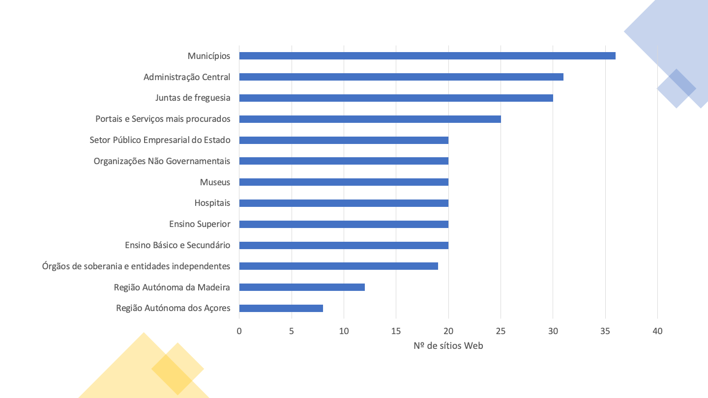
Nota: caso não consiga consultar, por qualquer razão, o gráfico seguinte, veja os dados na Tabela 41.
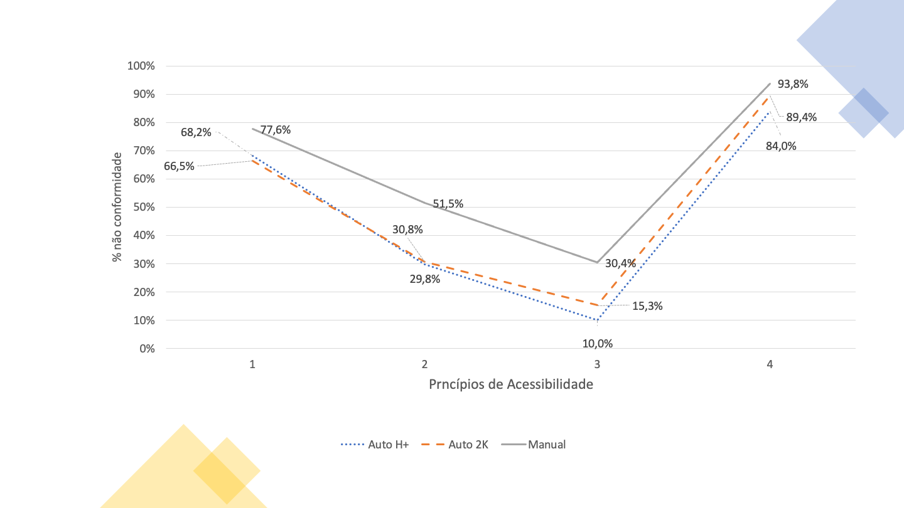
No caso da presente análise, usámos duas composições de amostras para submeter aos validadores automáticos: uma com menos páginas e outra com mais páginas. A primeira baseada no método que a AMA, I.P. está a usar no Observatório Português da Acessibilidade Web, que consiste numa amostra composta pela 1ª página mais todas as páginas hiperligadas à primeira pertencentes ao domínio, a que designámos de Home+ (H+). A segunda, a que designámos de 2K por ser composta por uma recolha com vários níveis de profundidade até ao máximo de 2 mil páginas. Em média, a Home+ produziu amostras com uma média de 80 páginas por sítio Web enquanto a 2K produziu amostras de 1000 páginas em média por sítio Web.
No essencial queríamos responder à questão: será a amostra Home+ suficientemente representativa ou teremos que aumentar o número de páginas que estamos a usar no Observatório? Ao analisar o Gráfico 2 que nos mostra as taxas médias de não conformidade das cláusulas da Norma Europeia que compõem cada princípio de acessibilidade, constatamos que as taxas de não conformidade para os 4 princípios seguem tendências semelhantes em ambas as amostras analisadas automaticamente (i.e. H+ e 2K).
Outra das interrogações à partida estava relacionada com o efeito nos resultados provocado por uma validação pericial (monitorização aprofundada). Até que ponto a monitorização aprofundada corrobora ou não os resultados das duas análises feitas exclusivamente com validadores automáticos (monitorização simplificada)? Pela análise do Gráfico 2 percebe-se que os princípios com os melhores e os piores estados de conformidade na monitorização simplificada são também os piores e os melhores na monitorização aprofundada, mas o cenário encontrado pela monitorização aprofundada é, em média, uma vez e meia pior do que o revelado pela monitorização simplificada. Para o princípio “Compreensível”, a monitorização aprofundada chega mesmo a revelar um panorama três vezes pior ao encontrado pela monitorização simplificada. Isto espelha bem a importância de se efetuarem avaliações manuais periciais. Há, no entanto, um aspeto em que os dois métodos de avaliação concordam. Quando observadas as taxas de não conformidade por cada um dos 4 princípios de acessibilidade Web enumerados pelo W3C, ambos os métodos apontam o princípio “Percetível” e o princípio “Robusto” como sendo os que têm taxas de não conformidade maiores – na ordem dos 78% e dos 94%, respetivamente. É também de salientar que os cenários encontrados pelas avaliações automática e manual nestes dois princípios distam apenas 10%, o que nos leva a concluir o bom trabalho das ferramentas automáticas na deteção de não conformidades nos princípios de acessibilidade “Percetível” e “Robusto”.
A monitorização aprofundada é mais eficaz na deteção dos níveis de conformidade do que a monitorização simplificada, contudo ela é mais consumidora de recursos de análise e de tempo. Por essa razão, ela é aplicada a um número reduzido de páginas. Na presente análise a monitorização simplificada foi efetuada a um universo de 281.706 páginas (amostra 2K) e 19.931 (amostra Home+). Já a monitorização aprofundada foi aplicada a um universo de 477 páginas.
A seleção das aplicações móveis recaiu sobre 8 aplicações que compunham o top das aplicações mais usadas, presentes no catálogo https://www.app.gov.pt, na sua versão iOS e na sua versão Android, perfazendo, na prática, um total de 16 aplicações – está comprovado que uma mesma aplicação para versão iOS e para versão Android requer, em termos de acessibilidade, duas análises independentes. Foram analisados 144 ecrãs, numa média de 9 ecrãs por aplicação. A taxa média de não conformidade foi de 51% para as aplicações iOS e de 53% para as aplicações Android, não permitindo assim dizer-se com clareza que as aplicações de uma dada versão estão melhores do que as outras. No princípio de acessibilidade “Robusto”, a taxa média de não conformidade por versão é igual – i.e. 87,5%. As aplicações iOS apresentam-se melhores nos princípios “Operável” e “Compreensível”, mas, no princípio “Percetível”, as aplicações Android apresentam-se ligeiramente melhores às de iOS.
Dos 4 princípios de acessibilidade, os que se apresentam com os maiores níveis de não conformidade são o “Percetível” e o “Robusto”. O “Percetível” é muito penalizador, por exemplo, de utilizadores com deficiência visual (pessoas cegas ou com baixa visão), e de pessoas surdas. Já o “Robusto” penaliza todos os utilizadores que fazem uso de tecnologias para transformar a informação às suas capacidades de leitura e navegação. Tecnologias de apoio – leitores de ecrã com sintetizador de fala ou linha braille, usadas por pessoas cegas – mas também, globalmente, qualquer tecnologia de indexação ou de visualização que necessitem de interoperar com a informação. O princípio “Percetível” aparece com taxas de não conformidade na ordem dos 65%. Já o princípio “Robusto” surge com taxas de não conformidade muito elevadas, na ordem dos 90%.
Nota: caso não consiga consultar, por qualquer razão, o gráfico seguinte, veja os dados na Tabela 42.
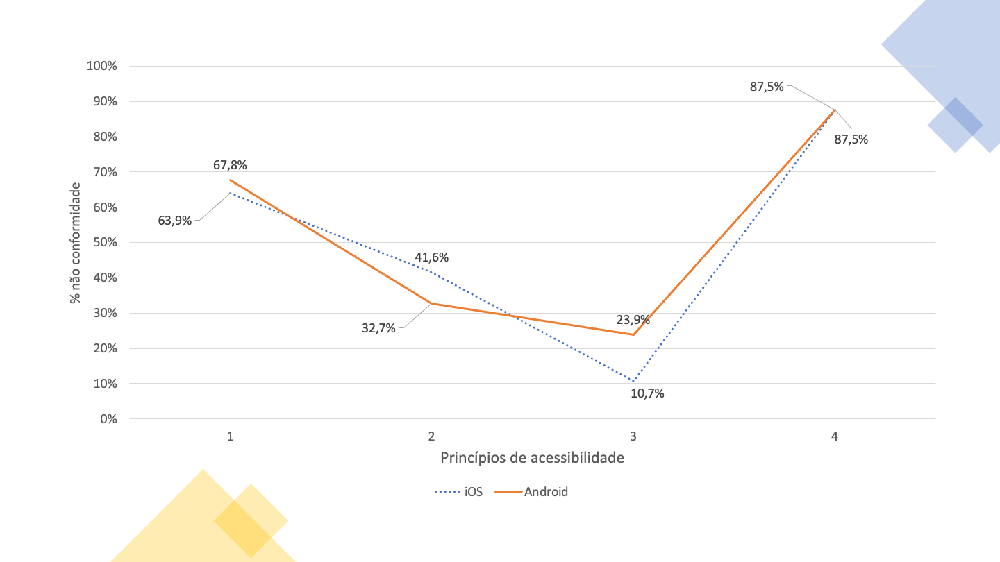
Os 4 princípios de acessibilidade são afetados da mesma forma nos sítios Web e nas aplicações móveis – os melhores coincidem com os melhores e os piores com os piores. No entanto, as aplicações móveis apresentam-se sempre melhores que os sítios Web, em todos os 4 princípios – em média 10 pontos percentuais acima dos sítios Web. O princípio “Robusto” apresenta-se com taxas de não conformidade na ordem dos 90%, seguido do princípio “Percetível” com valores na ordem dos 70%. Já os princípios “Compreensível” e “Operável” apresentam taxas de não conformidade bastante mais baixas, respetivamente na ordem dos 15% e 40% para o caso das aplicações e de 30% e 50% para os sítios Web.
Nota: caso não consiga consultar, por qualquer razão, o gráfico seguinte, veja os dados na Tabela 43.
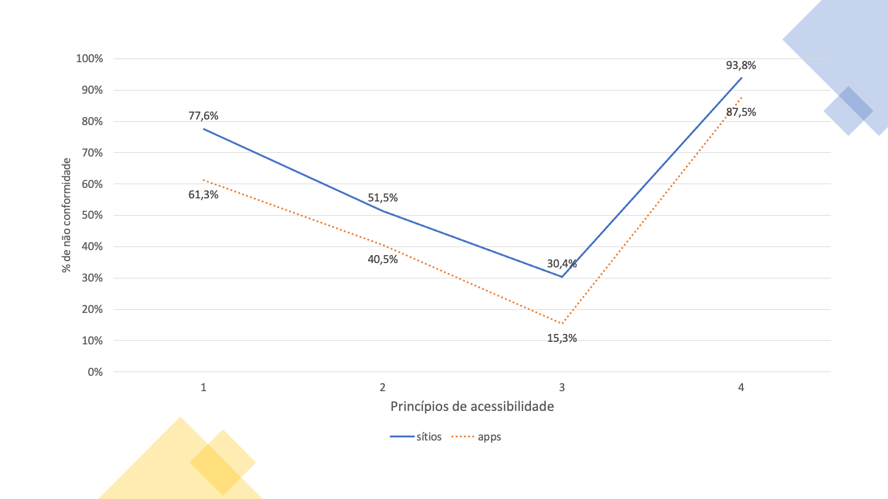
Quais são os utilizadores que se confrontam com um maior número de barreiras? Na Norma Europeia EN 301 549 é feita uma relação entre as cláusulas que representam as boas práticas de acessibilidade a aplicar e os utilizadores beneficiários dessas práticas a que se dá o nome de Declarações de Desempenho Funcional. Este nome mais elaborado prende-se com o facto de, ao referir, por exemplo, “Utilização na ausência de visão”, se pretende fazer alusão não apenas a pessoas com deficiência da visão, mas a todas as pessoas que, numa determinada situação, estão impossibilitadas ou limitadas na utilização da visão – p.e. alguém que, devido à luz solar intensa de um dia de Verão não consegue, ou tem maior dificuldade, em usar um smartphone na rua.
Assim, os dados recolhidos (ver Gráfico 5) dizem-nos que a presente amostra tem não conformidades nas cláusulas que afetam em primeira linha a: “Utilização com visão limitada” (46% de não conformidades); “Utilização na ausência da perceção da cor” (45%) e “Utilização na ausência da visão” (41%). “Utilização com capacidade de manipulação e/ou força limitada”, “Utilização com capacidades cognitivas limitadas”, “Utilização na ausência de audição” surgem com taxas médias de não conformidade entre os 30% e os 40%.
Nota: caso não consiga consultar, por qualquer razão, o gráfico seguinte, veja os dados na Tabela 44.
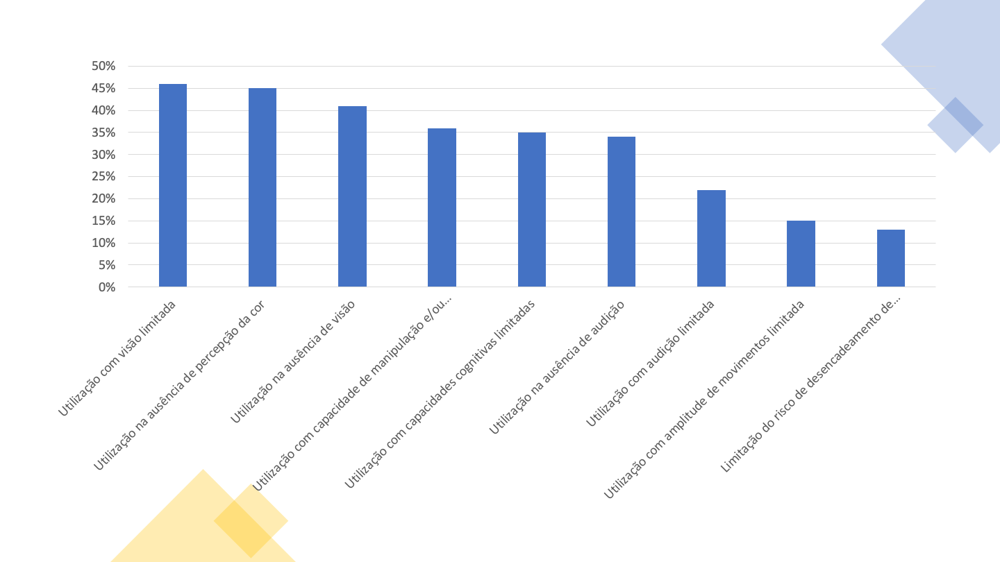
Da análise efetuada aos sítios Web e às aplicações móveis foram detetadas, independentemente do tamanho da amostra e independentemente do método de monitorização utilizado, elevadas taxas de não conformidade nos princípios “Percetível” e “Robusto” entre os 80% e os quase 100% – 97% de não conformidade do princípio “Robusto” na monitorização aprofundada de sítios Web.
Não é, por isso, de estranhar que as 11 cláusulas com maior taxa de falha nos sítios Web na monitorização aprofundada tenham sido:
Deste grupo de 11 cláusulas, 8 fazem parte do princípio “Percetível”, onde está a utilização dependente da visão e também da audição, 2 para o princípio “Robusto”, onde está a interoperabilidade com as tecnologias de apoio e 1 para o princípio “Operável” onde está a manipulação das interfaces digitais com tecnologias alternativas ao rato como é o caso do teclado e de todos os emuladores dos mesmos.
É igualmente interessante analisar a distribuição das cláusulas da EN 30 15 49 pelos níveis “A” e “AA” das WCAG 2.1. Embora a Norma Europeia não faça esta distinção, considerando todas as cláusulas por igual, a distribuição pode facilitar quem tem pela frente a tarefa de correção dos problemas encontrados. Diz o W3C que os problemas de nível “A” afetam mais pessoas e que é um bom ponto de partida começar o trabalho de retificação por aí. Assim puxamos para este sumário executivo (ver gráfico abaixo) o Gráfico 13 que nos mostra as cláusulas de nível ‘A’ que foram alvo de análise no presente estudo. Consulte também o Gráfico 14 para as cláusulas de nível ‘AA’.
Nota: caso não consiga consultar, por qualquer razão, o gráfico seguinte, veja os dados na Tabela 32.
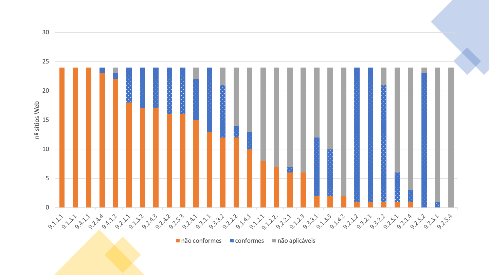
O gráfico acima mostra-nos um cenário em que é possível verificar as taxas médias de não conformidade das cláusulas de acessibilidade. As taxas de não conformidade mais elevadas ocupam as posições mais à esquerda no gráfico de barras e é possível percecionar de forma imediata que a não conformidade afeta 30% a 40% do total das cláusulas aplicáveis. Por oposição percebe-se que 60% a 70% das cláusulas estão conformes ou não se aplicam. Este tipo de dados revela com maior clareza o trabalho que é necessário empreender. Os dados recolhidos pelo validador de acessibilidade Web AccessMonitor também nos deixaram uma pista positiva, ao ter encontrado 78% dos sítios com um índice AccessMonitor superior a 5 (isto numa escala de 0 a 10, em que 10 corresponde a boas práticas de acessibilidade).
Resultados semelhantes foram observados nas 24 aplicações móveis. Problemas com:
Mais uma vez estamos a falar de cláusulas que estão por detrás do princípio “Percetível” (3 cláusulas), Robusto (1) e Operável (1).
Nos 281 sítios Web analisados, foram encontradas declarações de acessibilidade em 13, o que corresponde a 4.6% da amostra. No entanto, foram identificados 29 outros sítios web com uma página relativa à acessibilidade, mas que não correspondia a uma declaração construída de acordo com o modelo proposto no Decreto-lei n.º 83/2018. Se as entidades a quem pertencem estes sítios Web corrigirem as suas declarações, passaremos a ter, no curto prazo, 15% de sítios Web com Declaração de Acessibilidade.
As atividades de monitorização decorreram no período que mediou de outubro de 2021 a março de 2022, de acordo com a seguinte distribuição:
A monitorização é da responsabilidade da Agência para a Modernização Administrativa, I.P. (AMA). Para a realização das atividades de monitorização e para a elaboração deste relatório, a AMA contratou os serviços da FCIÊNCIAS.ID - Associação para a Investigação e Desenvolvimento de Ciências.
A amostra de sítios web foi fornecida pela AMA, sendo composta por um total de 281 sítios web. O número de sítios web na amostra resulta da dimensão mínima estabelecida no ponto 2.1 do anexo I da Decisão de Execução (UE) 2018/1524, sendo o valor equivalente a dois sítios por 100,000 habitantes mais 75 sítios. Atendendo a que a população residente em Portugal em 2020 é de 10,298,252 habitantes (de acordo com as estatísticas do INE) o número mínimo é de 281 sítios. A amostra inicial foi analisada para garantir que os sítios incluídos estavam acessíveis às atividades de monitorização e que correspondiam efetivamente a domínios diferentes (i.e., que não redirecionavam para outros domínios na amostra). Após alguns ajustes, a amostra final é a apresentada em anexo na Tabela 45.
A amostra é composta por um total de 281 sítios web e 16 aplicações móveis. A amostra inclui sítios Web de diferentes níveis de administração como se pode ver na Tabela 01.
| Nível de administração | Número de sítios | % de sítios |
|---|---|---|
| Sítios Web nacionais | 75 | 27% |
| Sítios Web regionais | 20 | 7% |
| Sítios Web locais | 66 | 23% |
| Outros sítios Web de organismos de direito público | 80 | 28% |
| Outros sítios Web | 40 | 14% |
Tentou-se também garantir que os sítios web representassem os diferentes serviços prestados pelos organismos do sector público. A distribuição de sítios web por tipo de serviço, apresentada na Tabela 02, ilustra a diversidade de serviços que foram considerados na amostra.
| Tipo de Serviço | Número de sítios | % de sítios |
|---|---|---|
| Administração Central | 31 | 11% |
| Ensino Básico e Secundário | 20 | 7% |
| Ensino Superior | 20 | 7% |
| Hospitais | 20 | 7% |
| Juntas de freguesia | 30 | 11% |
| Municípios | 36 | 13% |
| Museus | 20 | 7% |
| Organizações Não Governamentais | 20 | 7% |
| Órgãos de soberania e entidades independentes | 19 | 7% |
| Portais e Serviços mais procurados | 25 | 9% |
| Região Autónoma da Madeira | 12 | 4% |
| Região Autónoma dos Açores | 8 | 3% |
| Setor Público Empresarial do Estado | 20 | 7% |
A totalidade dos 281 sítios web foi inicialmente considerada para o método de monitorização simplificada. Para este período de monitorização foi decidido construir duas amostras de páginas para a monitorização simplificada:
A Tabela 03 apresenta estatísticas descritivas da amostra de páginas. Analisando a amostra é possível perceber que, em média, os sítios amostrados têm 79 páginas ligadas a partir da página inicial e que, em média, cada sítio tem mais de mil páginas. Este valor será, na realidade, maior visto que limitámos a recolha a duas mil páginas por sítio, tendo 63 sítios atingido este limite. Isto significa também que em 78% (218/281 sítios) dos sítios Web da amostra se está a trabalhar com o universo total das páginas. A Tabela 03 apresenta ainda estatísticas associadas à dimensão das páginas. Para cada página contou-se o número de elementos HTML e, com base neste número, identificaram-se os sítios com pelo menos 10 páginas que tivessem pelo menos 100 elementos HTML cada. Como resultado desta análise percebeu-se que, na amostra Home+, 15% dos sítios web não atingiam este limite. Com a amostra 2K, a percentagem de sítios web que não atinge este limite é de 9%.
| Amostra | Home+ | 2K |
|---|---|---|
| Sítios web | 281 | 281 |
| Total de páginas | 22,489 | 281,706 |
| Páginas por sítio web | 80 | 1,003 |
| Páginas com 100 ou mais elementos HTML | 20,042 (89%) | 223,398 (79%) |
| Sítios web com 10 ou mais páginas com 100 ou mais elementos HTML | 240 (85%) | 255 (91%) |
A amostra de sítios web levou em consideração os resultados da monitorização simplificada, sendo composta a partir dos seguintes critérios:
A amostra final de sítios web para monitorização aprofundada é apresentada em anexo na Tabela 46.
As aplicações móveis incluídas na amostra foram indicadas pela AMA, tendo sido escolhidas as aplicações de topo da lista de aplicações da administração pública disponível em https://www.app.gov.pt. As aplicações iOS e Android da mesma entidade foram consideradas individualmente nesta análise, tendo sido analisadas as duas versões de 8 aplicações, totalizando 16 aplicações móveis.
A amostra final de aplicações móveis para monitorização aprofundada é apresentada em anexo na Tabela 47.
As páginas das amostras dos 281 sítios web foram obtidas através do mecanismo de web crawling. De modo a garantir a melhor cobertura possível, foram usadas duas ferramentas para este efeito:
Para a avaliação da acessibilidade de cada página da amostra consideraram-se testes de duas ferramentas automáticas de avaliação de acessibilidade:
As cláusulas da EN 301 549 testadas pelo AccessMonitor são apresentadas na Tabela 04, juntamente com os correspondentes critérios de sucesso das WCAG.
| Cláusula EN | Nome cláusula | CS WCAG | Nome CS |
|---|---|---|---|
| 9.1.1.1 | Conteúdo não textual | 1.1.1 | Conteúdo não textual |
| 9.1.2.1 | Apenas áudio e apenas vídeo (pré-gravado) | 1.2.1 | Apenas áudio e apenas vídeo (pré-gravado) |
| 9.1.3.1 | Informações e relações | 1.3.1 | Info e relacionamentos |
| 9.1.3.2 | Sequência com significado | 1.3.2 | Sequência significante |
| 9.1.4.3 | Contraste (mínimo) | 1.4.3 | Contraste (mínimo) |
| 9.1.4.4 | Redimensionar texto | 1.4.4 | Redimensionar texto |
| 9.1.4.5 | Imagens de texto | 1.4.5 | Imagens de texto |
| 9.2.1.1 | Teclado | 2.1.1 | Teclado |
| 9.2.2.1 | Tempo ajustável | 2.2.1 | Tempo ajustável |
| 9.2.2.2 | Colocar em pausa, parar, ocultar | 2.2.2 | Pausar, parar, ocultar |
| 9.2.4.1 | Ignorar blocos | 2.4.1 | Saltar blocos |
| 9.2.4.2 | Página com título | 2.4.2 | Página intitulada |
| 9.2.4.4 | Finalidade da hiperligação (em contexto) | 2.4.4 | Propósito da hiperligação (em contexto) |
| 9.2.4.5 | Várias formas | 2.4.5 | Múltiplas formas |
| 9.2.4.6 | Cabeçalhos e etiquetas | 2.4.6 | Cabeçalhos e etiquetas |
| 9.2.4.7 | Foco visível | 2.4.7 | Foco visível |
| 9.3.1.1 | Idioma da página | 3.1.1 | Idioma da página |
| 9.3.2.1 | Ao receber o foco | 3.2.1 | Sobre o foco |
| 9.3.2.2 | Ao entrar num campo de edição (input) | 3.2.2 | Sobre uma entrada |
| 9.3.3.2 | Etiquetas ou instruções | 3.3.2 | Etiquetas ou instruções |
| 9.4.1.1 | Análise sintática (parsing) | 4.1.1 | Análise sintática |
| 9.4.1.2 | Nome, função, valor | 4.1.2 | Nome, papel, valor |
A Tabela 05 apresenta as cláusulas da EN 301 549, bem como os correspondentes critérios de sucesso, testadas pelo QualWeb através de regras ACT.
| Cláusula EN | Nome cláusula | CS WCAG | Nome CS |
|---|---|---|---|
| 9.1.1.1 | Conteúdo não textual | 1.1.1 | Conteúdo não textual |
| 9.1.2.1 | Apenas áudio e apenas vídeo (pré-gravado) | 1.2.1 | Apenas áudio e apenas vídeo (pré-gravado) |
| 9.1.2.2 | Legendas (pré-gravadas) | 1.2.2 | Legendagem (pré-gravado) |
| 9.1.2.3 | Audiodescrição ou alternativa em multimédia (pré-gravada) | 1.2.3 | Áudiodescrição ou alternativa média (pré-gravado) |
| 9.1.2.5 | Audiodescrição (pré-gravada) | 1.2.5 | Áudiodescrição (pré-gravado) |
| 9.1.3.1 | Informações e relações | 1.3.1 | Info e relacionamentos |
| 9.1.3.4 | Orientação | 1.3.4 | Orientação |
| 9.1.3.5 | Identificação do propósito de entrada | 1.3.5 | Identificar propósito de entrada |
| 9.1.4.2 | Controlo de áudio | 1.4.2 | Controlo de áudio |
| 9.1.4.3 | Contraste (mínimo) | 1.4.3 | Contraste (mínimo) |
| 9.1.4.4 | Redimensionar texto | 1.4.4 | Redimensionar texto |
| 9.1.4.12 | Espaçamento de texto | 1.4.12 | Espaçamento de texto |
| 9.2.1.1 | Teclado | 2.1.1 | Teclado |
| 9.2.2.1 | Tempo ajustável | 2.2.1 | Tempo ajustável |
| 9.2.4.1 | Ignorar blocos | 2.4.1 | Saltar blocos |
| 9.2.4.2 | Página com título | 2.4.2 | Página intitulada |
| 9.2.4.4 | Finalidade da hiperligação (em contexto) | 2.4.4 | Propósito da hiperligação (em contexto) |
| 9.2.4.7 | Foco visível | 2.4.7 | Foco visível |
| 9.2.5.3 | Legenda no nome | 2.5.3 | Etiqueta no nome |
| 9.3.1.1 | Idioma da página | 3.1.1 | Idioma da página |
| 9.3.1.2 | Idioma de partes | 3.1.2 | Idioma das partes |
| 9.3.3.1 | Identificação de erros | 3.3.1 | Identificação de erro |
| 9.4.1.1 | Análise sintática (parsing) | 4.1.1 | Análise sintática |
| 9.4.1.2 | Nome, função, valor | 4.1.2 | Nome, papel, valor |
Da conjugação das cláusulas testadas pelo AccessMonitor e pelo QualWeb referenciadas respetivamente na Tabela 04 e Tabela 05 constata-se que a taxa de cobertura das 2 ferramentas face ao total das cláusulas constantes do capítulo 9 da Norma Europeia é de 65%. Das que foram testadas, 75% já usaram regras harmonizadas ACT (Accessibility Conformance Testing).
O processo de avaliação consistiu na recolha das avaliações do QualWeb seguido do cálculo dos resultados do AccessMonitor a partir dos resultados do QualWeb. Desta forma garante-se que os resultados apresentados pelas duas ferramentas dizem respeito ao mesmo código fonte.
Durante o processo de avaliação houve várias ocorrências de páginas que não respondiam aos pedidos do avaliador. Foram realizadas múltiplas tentativas para obter resposta, separadas de pelo menos dois dias entre elas. Ainda assim, não foi possível avaliar um total de 27,022 páginas, o que corresponde a 9.6% das páginas na amostra. De notar que, como resultado dos problemas com as avaliações, não foi possível avaliar nenhuma página de três sítios da amostra Home+, bem como nenhuma página de dois sítios Web da amostra 2K.
Foi aplicada a metodologia de testes para avaliações manuais Trusted Tester. Esta metodologia baseia-se nas Diretrizes de Acessibilidade para Conteúdo Web (WCAG) 2.0. Considerando que esta análise segue a norma EN 301 549, baseado nas WCAG 2.1, novos testes foram adicionados aos testes originalmente incluídos na metodologia Trusted Tester, compreendendo os Critérios de Sucesso WCAG não abrangidos. Os testes adicionados basearam-se nas técnicas suficientes fornecidas nas WCAG 2.1 e são apresentados na Tabela 48 nos anexos. Para suportar os testes realizados foram usadas três ferramentas auxiliares:
Na Tabela 06 apresentam-se as cláusulas da norma EN 301 549 que foram consideradas nesta avaliação, conjuntamente com os critérios de sucesso WCAG correspondentes.
| Cláusula EN | Nome Cláusula | CS WCAG | Nome CS |
|---|---|---|---|
| 9.1.1.1 | Conteúdo não textual | 1.1.1 | Conteúdo não Textual |
| 9.1.2.1 | Apenas áudio e apenas vídeo (pré-gravado) | 1.2.1 | Apenas Áudio e apenas Vídeo (pré-gravado) |
| 9.1.2.2 | Legendas (pré-gravadas) | 1.2.2 | Legendagem (pré-gravado) |
| 9.1.2.3 | Audiodescrição ou alternativa em multimédia (pré-gravada) | 1.2.3 | Áudiodescrição ou Alternativa Media (pré-gravado) |
| 9.1.2.5 | Audiodescrição (pré-gravada) | 1.2.5 | Áudiodescrição (pré-gravado) |
| 9.1.3.1 | Informações e relações | 1.3.1 | Info e Relacionamentos |
| 9.1.3.2 | Sequência com significado | 1.3.2 | Sequência Significante |
| 9.1.3.3 | Características sensoriais | 1.3.3 | Caraterísticas Sensoriais |
| 9.1.3.4 | Orientação | 1.3.4 | Orientação |
| 9.1.3.5 | Identificação do propósito de entrada | 1.3.5 | Identificar Propósito de Entrada |
| 9.1.4.1 | Utilização da cor | 1.4.1 | Utilização da cor |
| 9.1.4.2 | Controlo de áudio | 1.4.2 | Controlo de Áudio |
| 9.1.4.3 | Contraste (mínimo) | 1.4.3 | Contraste (Mínimo) |
| 9.1.4.4 | Redimensionar texto | 1.4.4 | Redimensionar texto |
| 9.1.4.5 | Imagens de texto | 1.4.5 | Imagens de Texto |
| 9.1.4.10 | Realinhar | 1.4.10 | Realinhar |
| 9.1.4.11 | Contraste não textual | 1.4.11 | Contraste de conteúdo não textual |
| 9.1.4.12 | Espaçamento de texto | 1.4.12 | Espaçamento de Texto |
| 9.1.4.13 | Conteúdo em foco por rato ou teclado | 1.4.13 | Conteúdo on Hover ou Foco |
| 9.2.1.1 | Teclado | 2.1.1 | Teclado |
| 9.2.1.2 | Sem bloqueio do teclado | 2.1.2 | Não Bloquear o Teclado |
| 9.2.1.4 | Atalhos de teclas por caráter | 2.1.4 | Teclas de Atalho Caráter |
| 9.2.2.1 | Tempo ajustável | 2.2.1 | Tempo Ajustável |
| 9.2.2.2 | Colocar em pausa, parar, ocultar | 2.2.2 | Pausar, Parar, Ocultar |
| 9.2.3.1 | Três flashes ou abaixo do limite | 2.3.1 | Três Flashes ou Abaixo do Limiar |
| 9.2.4.1 | Ignorar blocos | 2.4.1 | Saltar Blocos |
| 9.2.4.2 | Página com título | 2.4.2 | Página Intitulada |
| 9.2.4.3 | Ordem do foco | 2.4.3 | Ordem do Foco |
| 9.2.4.4 | Finalidade da hiperligação (em contexto) | 2.4.4 | Propósito da Hiperligação (em Contexto) |
| 9.2.4.5 | Várias formas | 2.4.5 | Múltiplas Formas |
| 9.2.4.6 | Cabeçalhos e etiquetas | 2.4.6 | Cabeçalhos e Etiquetas |
| 9.2.4.7 | Foco visível | 2.4.7 | Foco Visível |
| 9.2.5.1 | Gestos por apontador | 2.5.1 | Gestos de Apontador |
| 9.2.5.2 | Cancelamento do apontador | 2.5.2 | Cancelamento de Apontador |
| 9.2.5.3 | Legenda no nome | 2.5.3 | Etiqueta no Nome |
| 9.2.5.4 | Atuação motora | 2.5.4 | Atuação de Movimento |
| 9.3.1.1 | Idioma da página | 3.1.1 | Idioma da Página |
| 9.3.1.2 | Idioma de partes | 3.1.2 | Idioma das Partes |
| 9.3.2.1 | Ao receber o foco | 3.2.1 | Sobre o Foco |
| 9.3.2.2 | Ao entrar num campo de edição (input) | 3.2.2 | Sobre uma Entrada |
| 9.3.2.3 | Consistência de navegação | 3.2.3 | Navegação Consistente |
| 9.3.2.4 | Consistência de identificação | 3.2.4 | Identificação Consistente |
| 9.3.3.1 | Identificação de erros | 3.3.1 | Identificação de Erro |
| 9.3.3.2 | Etiquetas ou instruções | 3.3.2 | Etiquetas ou Instruções |
| 9.3.3.3 | Sugestão para eliminar o erro | 3.3.3 | Sugestão de Correção de Erro |
| 9.3.3.4 | Prevenção de erros (legais, financeiros, dados) | 3.3.4 | Prevenção de Erro (Legal, Financeiro, Dados) |
| 9.4.1.1 | Análise sintática (parsing) | 4.1.1 | Análise Sintática |
| 9.4.1.2 | Nome, função, valor | 4.1.2 | Nome, Papel, Valor |
| 9.4.1.3 | Mensagens de estado (WCAG 2.1) | 4.1.3 | Mensagens de Status |
| 9.6 | Requisitos de conformidade das WCAG | 5.2 | Requisitos de Conformidade |
| 10.1.1.1 | Conteúdo não textual | 1.1.1 | Conteúdo não Textual |
| 10.1.2.1 | Apenas áudio e apenas vídeo (pré-gravado) | 1.2.1 | Apenas Áudio e apenas Vídeo (pré-gravado) |
| 10.1.2.2 | Legendas (pré-gravadas) | 1.2.2 | Legendagem (pré-gravado) |
| 10.1.2.3 | Audiodescrição ou alternativa em multimédia (pré-gravada) | 1.2.3 | Áudiodescrição ou Alternativa Media (pré-gravado) |
| 10.1.2.5 | Audiodescrição (pré-gravada) | 1.2.5 | Áudiodescrição (pré-gravado) |
| 10.1.3.1 | Informações e relações | 1.3.1 | Info e Relacionamentos |
| 10.1.3.2 | Sequência com significado | 1.3.2 | Sequência Significante |
| 10.1.3.3 | Características sensoriais | 1.3.3 | Caraterísticas Sensoriais |
| 10.1.3.4 | Orientação | 1.3.4 | Orientação |
| 10.1.3.5 | Identificação do propósito de entrada | 1.3.5 | Identificar Propósito de Entrada |
| 10.1.4.1 | Utilização da cor | 1.4.1 | Utilização da cor |
| 10.1.4.2 | Controlo de áudio | 1.4.2 | Controlo de Áudio |
| 10.1.4.3 | Contraste (mínimo) | 1.4.3 | Contraste (Mínimo) |
| 10.1.4.4 | Redimensionar texto | 1.4.4 | Redimensionar texto |
| 10.1.4.5 | Imagens de texto | 1.4.5 | Imagens de Texto |
| 10.1.4.10 | Realinhar | 1.4.10 | Realinhar |
| 10.1.4.11 | Contraste não textual | 1.4.11 | Contraste de conteúdo não textual |
| 10.1.4.12 | Espaçamento de texto | 1.4.12 | Espaçamento de Texto |
| 10.1.4.13 | Conteúdo em foco por rato ou teclado | 1.4.13 | Conteúdo on Hover ou Foco |
| 10.2.1.1 | Teclado | 2.1.1 | Teclado |
| 10.2.1.2 | Sem bloqueio do teclado | 2.1.2 | Não Bloquear o Teclado |
| 10.2.1.4 | Atalhos de teclas por caráter | 2.1.4 | Teclas de Atalho Caráter |
| 10.2.2.1 | Tempo ajustável | 2.2.1 | Tempo Ajustável |
| 10.2.2.2 | Colocar em pausa, parar, ocultar | 2.2.2 | Pausar, Parar, Ocultar |
| 10.2.3.1 | Três flashes ou abaixo do limite | 2.3.1 | Três Flashes ou Abaixo do Limiar |
| 10.2.4.2 | Página com título | 2.4.2 | Página Intitulada |
| 10.2.4.3 | Ordem do foco | 2.4.3 | Ordem do Foco |
| 10.2.4.4 | Finalidade da hiperligação (em contexto) | 2.4.4 | Propósito da Hiperligação (em Contexto) |
| 10.2.4.6 | Cabeçalhos e etiquetas | 2.4.6 | Cabeçalhos e Etiquetas |
| 10.2.4.7 | Foco visível | 2.4.7 | Foco Visível |
| 10.2.5.1 | Gestos por apontador | 2.5.1 | Gestos de Apontador |
| 10.2.5.2 | Cancelamento do apontador | 2.5.2 | Cancelamento de Apontador |
| 10.2.5.3 | Legenda no nome | 2.5.3 | Etiqueta no Nome |
| 10.2.5.4 | Atuação motora | 2.5.4 | Atuação de Movimento |
| 10.3.1.1 | Idioma da página | 3.1.1 | Idioma da Página |
| 10.3.1.2 | Idioma de partes | 3.1.2 | Idioma das Partes |
| 10.3.2.1 | Ao receber o foco | 3.2.1 | Sobre o Foco |
| 10.3.2.2 | Ao entrar num campo de edição (input) | 3.2.2 | Sobre uma Entrada |
| 10.3.3.1 | Identificação de erros | 3.3.1 | Identificação de Erro |
| 10.3.3.2 | Etiquetas ou instruções | 3.3.2 | Etiquetas ou Instruções |
| 10.3.3.3 | Sugestão para eliminar o erro | 3.3.3 | Sugestão de Correção de Erro |
| 10.3.3.4 | Prevenção de erros (legais, financeiros, dados) | 3.3.4 | Prevenção de Erro (Legal, Financeiro, Dados) |
| 10.4.1.1 | Análise sintática (parsing) | 4.1.1 | Análise Sintática |
| 10.4.1.2 | Nome, função, valor | 4.1.2 | Nome, Papel, Valor |
| 10.4.1.3 | Mensagens de estado (WCAG 2.1) | 4.1.3 | Mensagens de Status |
Para cada sítio web incluído na amostra, foi estabelecido um conjunto de páginas a serem incluídas em cada avaliação, de acordo com o definido na Decisão de Execução (UE) 2018/1524 da Comissão de 11 de outubro de 2018. Esta amostra representativa considera as seguintes páginas:
Cada página incluída na amostra representativa de cada sítio web foi avaliada segundo os critérios de sucesso das WCAG 2.1 AA. Para cada página, um dos seguintes resultados foi fornecido:
A recolha de dados foi suportada pela ferramenta WCAG-EM Report Tool. Ao fim da avaliação de cada sítio web, o relatório gerado foi registado para futura análise.
Os resultados da monitorização aprofundada de sítios Web foram complementados com a realização de testes de usabilidade com pessoas com deficiência.
Para estes testes foram recrutados 6 participantes, dois com deficiência visual, dois com deficiência motora e dois com deficiência auditiva. Todos os participantes foram recrutados através de contactos com instituições locais. Na Tabela 07 e Tabela 08 podemos observar que todos são utilizadores de computadores há mais de cinco anos, e que se autoavaliam com diferentes níveis de expertise no uso de computadores (entre 1 e 5, onde 1 representa principiante e 5 especialista). Todas as sessões foram conduzidas remotamente usando a ferramenta Zoom e a partilha de ecrã. Cada sessão demorou cerca de 45min. Cada sessão começou com uma breve introdução ao estudo, seguido por um questionário demográfico com perguntas relacionadas com o uso e experiência com computadores. Cada participante foi instruído para executar uma tarefa de cada vez, podendo pedir a qualquer momento ao avaliador para repetir a tarefa. Foi pedido aos participantes para pensarem em voz alta (think aloud) enquanto realizavam a tarefa. O avaliador presente tirou notas enquanto observava as interações dos participantes com os sítios Web. Quando um participante ficava preso num passo da tarefa, o avaliador ajudava a ultrapassar o problema para o participante poder explorar o restante da tarefa. No final de cada duas tarefas com cada um dos sítios Web era executada uma entrevista semiestruturada com três perguntas iniciais focadas na experiência com o sítio Web, na sua acessibilidade, e finalmente no que poderia ser melhorado. Os participantes foram recompensados pela sua contribuição com um cartão presente no valor de 20€.
| ID | Idade | Capacidade Visual | Capacidade Motora | Capacidade Auditiva |
|---|---|---|---|---|
| PC1 | 35 | Totalmente cego (sem percepção de luz) | Sem limitações | Sem limitações |
| PC2 | 34 | Visão baixa grave (acuidade visual menor que 6/60) | Sem limitações | Sem limitações |
| PDM1 | 52 | Normovisual | Com capacidade de manipulação e/ou força limitada | Sem limitações |
| PDM2 | 25 | Normovisual | Com capacidade de manipulação e/ou força limitada | Sem limitações |
| PS1 | 42 | Normovisual | Sem limitações | Surdez profunda |
| PS2 | 28 | Normovisual | Sem limitações | Surdez profunda |
| ID | Tecnologia de Apoio | Uso de Computadores | Expertise |
|---|---|---|---|
| PC1 | Leitor de ecrã | Mais de 5 anos | 3 |
| PC2 | Leitor de ecrã | Mais de 5 anos | 4 |
| PDM1 | Nenhuma | Mais de 5 anos | 3 |
| PDM2 | Nenhuma | Mais de 5 anos | 5 |
| PS1 | Nenhuma | Mais de 5 anos | 5 |
| PS2 | Nenhuma | Mais de 5 anos | 5 |
Para estes testes, foram considerados os 5 sítios Web com maiores taxas de falha na metodologia aprofundada, de acordo com a declaração de desempenho funcional para cada grupo de utilizadores recrutados. Alguns sítios Web obtiveram a mesma taxa de falha na respetiva declaração de desempenho funcional. Nestes casos, foram considerados os sítios web com maior taxa de falha considerando todas as cláusulas. Esta amostra contou com 5 sítios web, e, para cada um deles, foram definidas 2 tarefas considerando o uso primário ou funcionalidades essenciais de cada um. As tarefas foram distribuídas em dois grupos, com esforço equivalente. Cada tarefa foi realizada por um participante de cada grupo de utilizadores recrutados.
As versões iOS e Android da mesma aplicação foram consideradas individualmente nesta análise. As aplicações foram instaladas diretamente das respetivas App Stores e foram usadas contas standard de utilizador para a sua avaliação. Selecionámos um conjunto de ecrãs para avaliar em cada aplicação seguindo a metodologia definida no ponto 2 e 3 do anexo I da DECISÃO DE EXECUÇÃO (UE) 2018/1524 DA COMISSÃO de 11 de outubro de 2018. Esta amostra representativa considera os seguintes ecrãs:
Na análise dos ecrãs, os componentes de interfaces móveis como App Drawers que estão presentes em múltiplos ecrãs, foram considerados como sendo parte de todos os ecrãs onde estão presentes.
Para apoio à avaliação manual das aplicações móveis usaram-se as seguintes ferramentas e dispositivos:
A recolha de dados das avaliações foi suportada pela ferramenta WCAG-EM Report Tool.
A metodologia de testes para avaliações manuais foi baseada na metodologia Trusted Tester. Esta metodologia baseia-se nas Diretrizes de Acessibilidade para Conteúdo Web (WCAG) 2.0. Considerando que esta análise segue o padrão EN 301 549, baseado nas WCAG 2.1, novos testes foram adicionados aos testes originalmente incluídos na metodologia Trusted Tester, compreendendo os Critérios de Sucesso não abrangidos. Os testes adicionados basearam-se nas técnicas suficientes fornecidas nas WCAG 2.1. Todos os testes possíveis de executar ou adaptações dos mesmos foram realizados em todas as aplicações. Os critérios de sucesso considerados nesta avaliação correspondem ao nível de conformidade AA das WCAG 2.1, conforme estabelecido no padrão EN 301 594, e são apresentados na Tabela 09. Os critérios marcados como ‘parcialmente’ devem-se a não ter sido possível aplicar o teste a uma ou mais aplicações. No caso concreto da cláusula ‘10.1.4.10 Realinhar’, o critério não foi possível de avaliar em iOS (por não existir funcionalidade equivalente) sendo apenas avaliado em Android. As cláusulas ‘10.1.4.3 Contraste (mínimo)’ e ‘10.1.4.11 Contraste não textual’ não foram avaliados em 3 aplicações Android por a funcionalidade de captura de ecrã se encontrar bloqueada nas mesmas o que impede a realização de testes de contraste.
| Cláusula EN | Nome Cláusula | CS WCAG | Nome CS | Avaliado |
|---|---|---|---|---|
| 10.1.1.1 | Conteúdo não textual | 1.1.1 | Conteúdo não Textual | Sim |
| 10.1.2.1 | Apenas áudio e apenas vídeo (pré-gravado) | 1.2.1 | Apenas Áudio e apenas Vídeo (pré-gravado) | Sim |
| 10.1.2.2 | Legendas (pré-gravadas) | 1.2.2 | Legendagem (pré-gravado) | Sim |
| 10.1.2.3 | Audiodescrição ou alternativa em multimédia (pré-gravada) | 1.2.3 | Áudiodescrição ou Alternativa Media (pré-gravado) | Sim |
| 10.1.2.5 | Audiodescrição (pré-gravada) | 1.2.5 | Áudiodescrição (pré-gravado) | Sim |
| 10.1.3.1 | Informações e relações | 1.3.1 | Info e Relacionamentos | Sim |
| 10.1.3.2 | Sequência com significado | 1.3.2 | Sequência Significante | Não |
| 10.1.3.3 | Características sensoriais | 1.3.3 | Caraterísticas Sensoriais | Sim |
| 10.1.3.4 | Orientação | 1.3.4 | Orientação | Sim |
| 10.1.3.5 | Identificação do propósito de entrada | 1.3.5 | Identificar Propósito de Entrada | Não |
| 10.1.4.1 | Utilização da cor | 1.4.1 | Utilização da cor | Sim |
| 10.1.4.2 | Controlo de áudio | 1.4.2 | Controlo de Áudio | Sim |
| 10.1.4.3 | Contraste (mínimo) | 1.4.3 | Contraste (Mínimo) | Parcialmente |
| 10.1.4.4 | Redimensionar texto | 1.4.4 | Redimensionar texto | Sim |
| 10.1.4.5 | Imagens de texto | 1.4.5 | Imagens de Texto | Sim |
| 10.1.4.10 | Realinhar | 1.4.10 | Realinhar | Parcialmente |
| 10.1.4.11 | Contraste não textual | 1.4.11 | Contraste de conteúdo não textual | Parcialmente |
| 10.1.4.12 | Espaçamento de texto | 1.4.12 | Espaçamento de Texto | Não |
| 10.1.4.13 | Conteúdo em foco por rato ou teclado | 1.4.13 | Conteúdo on Hover ou Foco | Não |
| 10.2.1.1 | Teclado | 2.1.1 | Teclado | Sim |
| 10.2.1.2 | Sem bloqueio do teclado | 2.1.2 | Não Bloquear o Teclado | Sim |
| 10.2.1.4 | Atalhos de teclas por caráter | 2.1.4 | Teclas de Atalho Caráter | Não |
| 10.2.2.1 | Tempo ajustável | 2.2.1 | Tempo Ajustável | Sim |
| 10.2.2.2 | Colocar em pausa, parar, ocultar | 2.2.2 | Pausar, Parar, Ocultar | Sim |
| 10.2.3.1 | Três flashes ou abaixo do limite | 2.3.1 | Três Flashes ou Abaixo do Limiar | Sim |
| 10.2.4.2 | Página com título | 2.4.2 | Página Intitulada | Sim |
| 10.2.4.3 | Ordem do foco | 2.4.3 | Ordem do Foco | Sim |
| 10.2.4.4 | Finalidade da hiperligação (em contexto) | 2.4.4 | Propósito da Hiperligação (em Contexto) | Sim |
| 10.2.4.6 | Cabeçalhos e etiquetas | 2.4.6 | Cabeçalhos e Etiquetas | Sim |
| 10.2.4.7 | Foco visível | 2.4.7 | Foco Visível | Sim |
| 10.2.5.1 | Gestos por apontador | 2.5.1 | Gestos de Apontador | Sim |
| 10.2.5.2 | Cancelamento do apontador | 2.5.2 | Cancelamento de Apontador | Sim |
| 10.2.5.3 | Legenda no nome | 2.5.3 | Etiqueta no Nome | Sim |
| 10.2.5.4 | Atuação motora | 2.5.4 | Atuação de Movimento | Sim |
| 10.3.1.1 | Idioma da página | 3.1.1 | Idioma da Página | Não |
| 10.3.1.2 | Idioma de partes | 3.1.2 | Idioma das Partes | Não |
| 10.3.2.1 | Ao receber o foco | 3.2.1 | Sobre o Foco | Sim |
| 10.3.2.2 | Ao entrar num campo de edição (input) | 3.2.2 | Sobre uma Entrada | Sim |
| 10.3.3.1 | Identificação de erros | 3.3.1 | Identificação de Erro | Sim |
| 10.3.3.2 | Etiquetas ou instruções | 3.3.2 | Etiquetas ou Instruções | Sim |
| 10.3.3.3 | Sugestão para eliminar o erro | 3.3.3 | Sugestão de Correção de Erro | Sim |
| 10.3.3.4 | Prevenção de erros (legais, financeiros, dados) | 3.3.4 | Prevenção de Erro (Legal, Financeiro, Dados) | Sim |
| 10.4.1.1 | Análise sintática (parsing) | 4.1.1 | Análise Sintática | Não |
| 10.4.1.2 | Nome, função, valor | 4.1.2 | Nome, Papel, Valor | Sim |
| 10.4.1.3 | Mensagens de estado (WCAG 2.1) | 4.1.3 | Mensagens de Status | Não |
| 11.1.1.1 | Conteúdo não textual | 1.1.1 | Conteúdo não Textual | Sim |
| 11.1.2.1 | Apenas áudio e apenas vídeo (pré-gravado) | 1.2.1 | Apenas Áudio e apenas Vídeo (pré-gravado) | Sim |
| 11.1.2.2 | Legendas (pré-gravadas) | 1.2.2 | Legendagem (pré-gravado) | Sim |
| 11.1.2.3 | Audiodescrição ou alternativa em multimédia (pré-gravada) | 1.2.3 | Áudiodescrição ou Alternativa Media (pré-gravado) | Sim |
| 11.1.2.5 | Audiodescrição (pré-gravada) | 1.2.5 | Áudiodescrição (pré-gravado) | Sim |
| 11.1.3.1 | Informações e relações | 1.3.1 | Info e Relacionamentos | Sim |
| 11.1.3.2 | Sequência com significado | 1.3.2 | Sequência Significante | Não |
| 11.1.3.3 | Características sensoriais | 1.3.3 | Caraterísticas Sensoriais | Sim |
| 11.1.3.4 | Orientação | 1.3.4 | Orientação | Sim |
| 11.1.3.5 | Identificação do propósito de entrada | 1.3.5 | Identificar Propósito de Entrada | Não |
| 11.1.4.1 | Utilização da cor | 1.4.1 | Utilização da cor | Sim |
| 11.1.4.2 | Controlo de áudio | 1.4.2 | Controlo de Áudio | Sim |
| 11.1.4.3 | Contraste (mínimo) | 1.4.3 | Contraste (Mínimo) | Parcialmente |
| 11.1.4.4 | Redimensionar texto | 1.4.4 | Redimensionar texto | Sim |
| 11.1.4.5 | Imagens de texto | 1.4.5 | Imagens de Texto | Sim |
| 11.1.4.10 | Realinhar | 1.4.10 | Realinhar | Parcialmente |
| 11.1.4.11 | Contraste não textual | 1.4.11 | Contraste de conteúdo não textual | Parcialmente |
| 11.1.4.12 | Espaçamento de texto | 1.4.12 | Espaçamento de Texto | Não |
| 11.1.4.13 | Conteúdo em foco por rato ou teclado | 1.4.13 | Conteúdo on Hover ou Foco | Não |
| 11.2.1.1 | Teclado | 2.1.1 | Teclado | Sim |
| 11.2.1.2 | Sem bloqueio do teclado | 2.1.2 | Não Bloquear o Teclado | Sim |
| 11.2.1.4 | Atalhos de teclas por caráter | 2.1.4 | Teclas de Atalho Caráter | Não |
| 11.2.2.1 | Tempo ajustável | 2.2.1 | Tempo Ajustável | Sim |
| 11.2.2.2 | Colocar em pausa, parar, ocultar | 2.2.2 | Pausar, Parar, Ocultar | Sim |
| 11.2.3.1 | Três flashes ou abaixo do limite | 2.3.1 | Três Flashes ou Abaixo do Limiar | Sim |
| 11.2.4.2 | Página com título | 2.4.2 | Página Intitulada | Sim |
| 11.2.4.3 | Ordem do foco | 2.4.3 | Ordem do Foco | Sim |
| 11.2.4.4 | Finalidade da hiperligação (em contexto) | 2.4.4 | Propósito da Hiperligação (em Contexto) | Sim |
| 11.2.4.6 | Cabeçalhos e etiquetas | 2.4.6 | Cabeçalhos e Etiquetas | Sim |
| 11.2.4.7 | Foco visível | 2.4.7 | Foco Visível | Sim |
| 11.2.5.1 | Gestos por apontador | 2.5.1 | Gestos de Apontador | Sim |
| 11.2.5.2 | Cancelamento do apontador | 2.5.2 | Cancelamento de Apontador | Sim |
| 11.2.5.3 | Legenda no nome | 2.5.3 | Etiqueta no Nome | Sim |
| 11.2.5.4 | Atuação motora | 2.5.4 | Atuação de Movimento | Sim |
| 11.3.1.1 | Idioma da página | 3.1.1 | Idioma da Página | Não |
| 11.3.1.2 | Idioma de partes | 3.1.2 | Idioma das Partes | Não |
| 11.3.2.1 | Ao receber o foco | 3.2.1 | Sobre o Foco | Sim |
| 11.3.2.2 | Ao entrar num campo de edição (input) | 3.2.2 | Sobre uma Entrada | Sim |
| 11.3.3.1 | Identificação de erros | 3.3.1 | Identificação de Erro | Sim |
| 11.3.3.2 | Etiquetas ou instruções | 3.3.2 | Etiquetas ou Instruções | Sim |
| 11.3.3.3 | Sugestão para eliminar o erro | 3.3.3 | Sugestão de Correção de Erro | Sim |
| 11.3.3.4 | Prevenção de erros (legais, financeiros, dados) | 3.3.4 | Prevenção de Erro (Legal, Financeiro, Dados) | Sim |
| 11.4.1.1 | Análise sintática (parsing) | 4.1.1 | Análise Sintática | Não |
| 11.4.1.2 | Nome, função, valor | 4.1.2 | Nome, Papel, Valor | Sim |
| 11.4.1.3 | Mensagens de estado (WCAG 2.1) | 4.1.3 | Mensagens de Status | Não |
No fim da avaliação de cada aplicação, um relatório foi registado para futura análise. Após a condução das avaliações, procedeu-se à análise dos resultados obtidos, considerando as cláusulas que são verificadas ou violadas.
Após finalizar a avaliação pericial de todas as aplicações Android, as duas menos conformes foram selecionadas para conduzir um estudo com utilizadores.
Foram recrutados quatro participantes, dois com deficiência visual e utilizadores de leitor de ecrã, um utilizador com deficiência motora e um utilizador surdo. Nas Tabela 10 e Tabela 11 podemos observar que todos são utilizadores de dispositivos móveis há mais de três anos, e que se autoavaliam com diferentes níveis de expertise no uso de smartphone (entre 1 e 5, onde 1 representa principiante e 5 especialista). Dois tinham experiência prévia com uma das aplicações e um tinha tentado no passado, sem sucesso, usar a segunda. Os participantes foram recrutados por contactos com instituições locais. A sessão com o participante P3 foi conduzida presencialmente, enquanto, que com os participantes P1, P2 e P4, a sessão foi remota usando o Zoom e a partilha de ecrã. As sessões duraram cerca de 45min. Cada sessão começava com um breve questionário demográfico com perguntas relacionadas com o uso e a experiência com smartphones. De seguida os participantes instalavam as duas aplicações selecionadas para o estudo, caso não as tivessem no seu dispositivo. Cada participante foi instruído para executar uma tarefa de cada vez, podendo pedir a qualquer momento ao avaliador para repetir a tarefa. Foi pedido aos participantes para pensarem em voz alta (think aloud) enquanto realizavam a tarefa. O avaliador presente tirou notas enquanto observava as interações dos participantes com os seus dispositivos. Quando um participante ficava preso num passo da tarefa, o avaliador ajudava a ultrapassar o problema para o participante poder explorar o restante da tarefa. No final de cada duas tarefas com cada uma das aplicações era pedida autorização para gravar áudio, e era executada uma entrevista semiestruturada com três perguntas iniciais focadas na experiência com a aplicação: 1) “Como foi a sua experiência com esta aplicação?”; 2) “Qual a sua opinião sobre a acessibilidade desta aplicação?”; e 3) “O que pode ser melhorado?” Os participantes foram recompensados pela sua contribuição com um cartão presente no valor de 20€.
| ID | Idade | Visão | Capacidade Motora | Audição |
|---|---|---|---|---|
| P1 | 42 | Normovisual | Com capacidade de manipulação e/ou força limitada | Sem limitações |
| P2 | 34 | Visão baixa grave (acuidade visual menor que 6/60) | Sem limitações | Sem limitações |
| P3 | 42 | Visão baixa grave (acuidade visual menor que 6/60) | Sem limitações | Sem limitações |
| P4 | 44 | Normovisual | Sem limitações | Surdo |
| ID | Tecnologia de Apoio | Uso Smartphone | Expertise | Experiência com App 1 | Experiência com App 2 |
|---|---|---|---|---|---|
| P1 | Nenhuma | Mais de 3 anos | 3 | Nunca usei | Nunca usei |
| P2 | Leitor de ecrã | Mais de 3 anos | 4 | Uso ocasionalmente | Tentei |
| P3 | Leitor de ecrã | Mais de 3 anos | 5 | Já usei antes | Nunca usei |
| P4 | Nenhuma | Mais de 3 anos | 1 | Nunca usei | Nunca usei |
Segundo a Statcounter Global, em Portugal a percentagem de utilizadores de Android é de 72%, contra 27% de iOS. Sendo Android o sistema operativo mais popular (por mais do dobro) em Portugal, as avaliações com utilizadores foram conduzidas sobre as aplicações Android. É de salientar que não foram impostas restrições no recrutamento e que todos os utilizadores contactados para participar no estudo revelaram ser utilizadores Android.
Foram selecionadas as aplicações Android com menor conformidade. No entanto é de salientar que duas outras, se selecionadas, teriam sido inacessíveis a utilizadores de leitor de ecrã visto que não é possível interagir com os elementos necessários à navegação usando um leitor de ecrã. Nas aplicações selecionadas foram criadas duas tarefas típicas para os objetivos inerentes às mesmas.
No total foram analisados 281 sítios web, dos quais se obtiveram 281,706 páginas. Deste total, conseguiu-se avaliar 254,684 páginas, o que corresponde a 90.4% da amostra. Pode ainda destacar-se que em seis sítios web só se conseguiu obter uma página.
Na amostra Home+, dos 281 sítios web, recolheram-se 22,489 páginas, correspondendo a uma média de 80 páginas por sítio web. No Gráfico 7 é possível visualizar a distribuição do número de páginas por sítio web, sendo percetível que, para esta amostra, a maioria dos sítios web se apresenta com menos de 50 páginas. A moda é mesmo sítios que se apresentam com 25 a 50 páginas. De notar que, atendendo ao método de recolha de páginas da amostra Home+, este número de páginas representa também o número de hiperligações existentes na Homepage para o domínio. O facto de três quartos dos sítios se apresentar com uma quantidade de hiperligações inferior a 100 na Homepage pode ser positivo e benéfico para a acessibilidade do sítio. Pelo contrário, 6.5% dos sítios tem mais de 200 ligações só na Homepage e 1% atinge mesmo um valor superior a 500 hiperligações, o que, por si só, leva a antever uma homepage complexa para navegar.
Nota: caso não consiga consultar, por qualquer razão, o gráfico seguinte, veja os dados na Tabela 12.
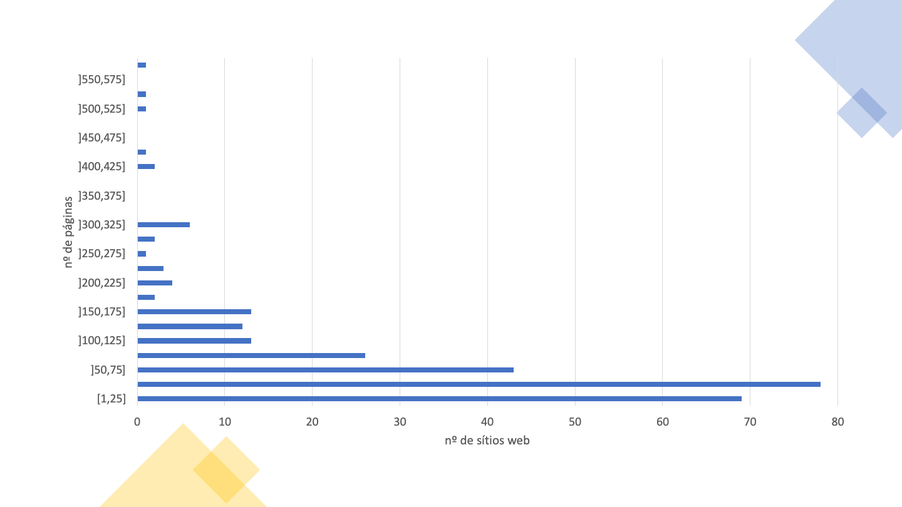
A Tabela 12 apresenta detalhes sobre a distribuição de páginas por sítio web nesta amostra.
| Intervalos de páginas | Frequência (nº de sítios web) | Frequência acumulada | Frequência (nº de sítios web) (%) | Frequência acumulada (%) |
|---|---|---|---|---|
| [1,25] | 69 | 69 | 24.8% | 24.8% |
| ]25,50] | 78 | 147 | 28.1% | 52.9% |
| ]50,75] | 43 | 190 | 15.5% | 68.3% |
| ]75,100] | 26 | 216 | 9.4% | 77.7% |
| ]100,125] | 13 | 229 | 4.7% | 82.4% |
| ]125,150] | 12 | 241 | 4.3% | 86.7% |
| ]150,175] | 13 | 254 | 4.7% | 91.4% |
| ]175,200] | 2 | 256 | 0.7% | 92.1% |
| ]200,225] | 4 | 260 | 1.4% | 93.5% |
| ]225,250] | 3 | 263 | 1.1% | 94.6% |
| ]250,275] | 1 | 264 | 0.4% | 95.0% |
| ]275,300] | 2 | 266 | 0.7% | 95.7% |
| ]300,325] | 6 | 272 | 2.2% | 97.8% |
| ]325,350] | 0 | 272 | 0.0% | 97.8% |
| ]350,375] | 0 | 272 | 0.0% | 97.8% |
| ]375,400] | 0 | 272 | 0.0% | 97.8% |
| ]400,425] | 2 | 274 | 0.7% | 98.6% |
| ]425,450] | 1 | 275 | 0.4% | 98.9% |
| ]450,475] | 0 | 275 | 0.0% | 98.9% |
| ]475,500] | 0 | 275 | 0.0% | 98.9% |
| ]500,525] | 1 | 276 | 0.4% | 99.3% |
| ]525,550] | 1 | 277 | 0.4% | 99.6% |
| ]550,575] | 0 | 277 | 0.0% | 99.6% |
| ]575,600] | 1 | 278 | 0.4% | 100.0% |
Dos 281 sítios web, 3 falharam o requisito de ter pelo menos uma página avaliada, e mais 38 falharam o requisito de ter pelo menos 10 páginas avaliadas com 100 ou mais elementos HTML, e por isso não são considerados na análise automática que se segue. Assim, para esta análise são considerados apenas os 240 sítios web com pelo menos 10 páginas avaliadas com 100 ou mais elementos HTML. No total, nesta amostra, foram analisados os resultados das avaliações de 19,931 páginas pertencentes a 240 sítios.
Na Tabela 13 é apresentada o número (e percentagem) de sítios web que verificam ou violam cada cláusula, bem como aqueles que necessitam de validação manual ou que não são aplicáveis em nenhuma página do sítio web.
| Cláusula EN 301 549 | Nível de conformidade WCAG | Nº de não conformes | Nº que necessitam de validação manual | Nº de não aplicáveis |
|---|---|---|---|---|
| 9.1.1.1 Conteúdo não textual | A | 173 (72.1%) | 0 (0%) | 0 (0%) |
| 9.1.2.1 Apenas áudio e apenas vídeo (pré-gravado) | A | 0 (0%) | 33 (13.8%) | 207 (86.3%) |
| 9.1.2.2 Legendas (pré-gravadas) | A | 0 (0%) | 33 (13.8%) | 207 (86.3%) |
| 9.1.2.3 Audiodescrição ou alternativa em multimédia (pré-gravada) | A | 0 (0%) | 33 (13.8%) | 207 (86.3%) |
| 9.1.3.1 Informações e relações | A | 179 (74.6%) | 0 (0%) | 1 (0.4%) |
| 9.1.4.2 Controlo de áudio | A | 0 (0%) | 4 (1.7%) | 236 (98.3%) |
| 9.2.1.1 Teclado | A | 20 (8.3%) | 0 (0%) | 151 (62.9%) |
| 9.2.2.1 Tempo ajustável | A | 4 (1.7%) | 0 (0%) | 221 (92.1%) |
| 9.2.4.1 Ignorar blocos | A | 0 (0%) | 179 (74.6%) | 0 (0%) |
| 9.2.4.2 Página com título | A | 8 (3.3%) | 0 (0%) | 0 (0%) |
| 9.2.4.4 Finalidade da hiperligação (em contexto) | A | 214 (89.2%) | 21 (8.8%) | 0 (0%) |
| 9.2.5.3 Legenda no nome | A | 37 (15.4%) | 0 (0%) | 131 (54.6%) |
| 9.3.1.1 Idioma da página | A | 48 (20.0%) | 0 (0%) | 0 (0%) |
| 9.3.3.1 Identificação de erros | A | 0 (0%) | 233 (97.1%) | 7 (2.9%) |
| 9.4.1.1 Análise sintática (parsing) | A | 167 (69.6%) | 0 (0%) | 0 (0%) |
| 9.4.1.2 Nome, função, valor | A | 235 (97.9%) | 1 (0.4%) | 0 (0%) |
| 9.1.2.5 Audiodescrição (pré-gravada) | AA | 0 (0%) | 33 (13.8%) | 207 (86.3%) |
| 9.1.3.4 Orientação | AA | 0 (0%) | 0 (0%) | 240 (100.0%) |
| 9.1.3.5 Identificação do propósito de entrada | AA | 2 (0.8%) | 0 (0%) | 161 (67.1%) |
| 9.1.4.3 Contraste (mínimo) | AA | 221 (92.1%) | 10 (4.2%) | 0 (0%) |
| 9.1.4.4 Redimensionar texto | AA | 63 (26.3%) | 169 (70.4%) | 5 (2.1%) |
| 9.3.1.2 Idioma de partes | AA | 0 (0%) | 0 (0%) | 159 (66.3%) |
Observando a Tabela 13 podemos concluir que houve uma baixa taxa de conformidade face às cláusulas da EN 301 549.
As cláusulas com maior índice de não conformidade foram:
Foram feitas duas análises em relação a estas declarações:
A Tabela 14 apresenta os resultados obtidos na primeira análise, em que apenas foram tomadas em consideração as cláusulas das relações primárias.
| Declaração de desempenho funcional | Nº de não conformes | Nº que necessitam de validação manual | Nº de não aplicáveis |
|---|---|---|---|
| Utilização sem visão (WV) | 240 (100%) | 0 (0%) | 0 (0%) |
| Utilização com baixa visão (LV) | 239 (99.6%) | 1 (0.4%) | 0 (0%) |
| Utilização sem perceção de cor (WPC) | 211 (88%) | 28 (11.7%) | 1 (0.4%) |
| Utilização sem audição (WH) | 218 (90.8%) | 18 (7.5%) | 4 (1.7%) |
| Utilização com baixa audição (LH) | 73 (30.4%) | 16 (6.7%) | 142 (59.2%) |
| Utilização com manipulação ou força limitada (LMS) | 238 (99.2%) | 2 (0.8%) | 0 (0%) |
| Utilização com alcance limitado (LR) | 37 (15.4%) | 0 (0%) | 131 (54.6%) |
| Utilização com limitação cognitiva, de linguagem ou de aprendizagem (LC) | 238 (99.2%) | 2 (0.8%) | 0 (0%) |
Observando a Tabela 14 podemos concluir que existe um grande índice de não conformidade face às declarações de desempenho funcional, quando avaliadas apenas as cláusulas das relações primárias. A declaração de desempenho funcional com a menor taxa de não conformidade foi:
A Tabela 15 apresenta os resultados obtidos na segunda análise, em que foram tomadas em consideração todas as cláusulas das relações primárias e secundárias.
| Declaração de desempenho funcional | Nº em violação | Nº que necessitam de validação manual | Nº de não aplicáveis |
|---|---|---|---|
| Utilização sem visão (WV) | 240 (100.0%) | 0 (0%) | 0 (0%) |
| Utilização com baixa visão (LV) | 240 (100.0%) | 0 (0%) | 0 (0%) |
| Utilização sem perceção de cor (WPC) | 221 (92.1%) | 19 (7.9%) | 0 (0%) |
| Utilização sem audição (WH) | 209 (87.1%) | 15 (6.3%) | 0 (0%) |
| Utilização com baixa audição (LH) | 209 (87.1%) | 15 (6.3%) | 0 (0%) |
| Utilização sem ou com limitação da oralidade (LVC) | 238 (99.2%) | 2 (0.8%) | 0 (0%) |
| Utilização com manipulação ou força limitada (LMS) | 239 (99.6%) | 1 (0.4%) | 0 (0%) |
| Utilização com alcance limitado (LR) | 37 (15.4%) | 0 (0%) | 131 (54.6%) |
| Utilização com limitação cognitiva, de linguagem ou de aprendizagem (LC) | 240 (100.0%) | 0 (0%) | 0 (0%) |
| Privacidade (P) | 206 (85.8%) | 11 (4.6%) | 0 (0%) |
Observando a Tabela 15 podemos concluir que existe um grande índice de não conformidade face às declarações de desempenho funcional, quando avaliadas todas as cláusulas. A declaração de desempenho funcional com a menor taxa de não conformidade foi:
Na Tabela 16 são apresentadas as boas e as más práticas de acessibilidade web identificadas pelo AccessMonitor nos sítios web.
A boa prática mais frequente nos sítios web é “Encontrei um título na página e ele parece-me correto”, aplicada em 99.6% dos sítios web. A boa prática menos frequente é “Localizei nos metadados da página X elementos <link> que poderão servir para construir um sistema de navegação”, aplicada em apenas 0.4% dos sítios web.
A má prática mais frequente nos sítios web é “Localizei X combinações de cor cuja relação de contraste é inferior ao mínimo rácio de contraste permitido pelas WCAG, ou seja 3 para 1 para texto com letra grande e 4,5 para 1 para texto com letra normal”, verificada em 92.1% dos sítios web. A má prática menos frequente nos sítios web é “Encontrei X abreviaturas em que se esqueceu de colocar a extensão”, verificada em 0.4% dos sítios web.
| Ocorrências encontradas AccessMonitor | Nº de sítios web | Tipo de prática |
|---|---|---|
| Constatei que todas as imagens da página têm o necessário equivalente alternativo em texto. | 195 | Boa prática |
| Encontrei X imagens na página que não têm o necessário equivalente alternativo em texto. | 169 | Má prática |
| Encontrei X imagens na página com alt=“” (alt nulo). | 221 | Para validar manualmente |
| Encontrei X imagens na página com alt que não serve de equivalente alternativo. | 79 | Má prática |
| Encontrei X imagens na página em que alt tem mais de 100 carateres . | 73 | Para validar manualmente |
| Constatei que todas as ativas dos mapas de imagem da página fazem uso do atributo alt. | 17 | Boa prática |
| Encontrei X elementos 'area' sem atributo alt ou com alt=““. | 35 | Má prática |
| Constatei que todos os botões gráficos da página fazem uso do atributo alt. | 25 | Boa prática |
| Localizei X botões gráficos na página que não tem o atributo alt. | 12 | Má prática |
| Encontrei X links cujo conteúdo está vazio. Ou melhor, é composto apenas por uma imagem e a imagem tem por equivalente textual alternativo um caráter vazio (i.e. alt=““). | 173 | Má prática |
| Identifiquei X casos em que o atributo title do elemento link se limita a repetir o texto existente no link. | 164 | Má prática |
| Encontrei X grupos de links com o mesmo texto mas cujo destino é diferente. | 233 | Para validar manualmente |
| Constatei que o primeiro link da página nos permite saltar para o conteúdo principal. | 74 | Para validar manualmente |
| Constatei que a primeira hiperligação da página não permite saltar diretamente para a área do conteúdo principal. | 198 | Má prática |
| Encontrei X links para contornar blocos de conteúdo. | 184 | Para validar manualmente |
| Encontrei X cabeçalhos na página. | 238 | Para validar manualmente |
Não encontrei nesta página um cabeçalho principal <H1> marcado. |
138 | Má prática |
| Localizei X ocorrências de listas vazias ou com |
136 | Má prática |
| Encontrei X elementos 'fieldset' fora do formulário. | 26 | Má prática |
| Encontrei X elementos 'fieldset' sem descrição. | 55 | Má prática |
| Localizei X elementos 'label' que não estão visíveis ou estão incorretamente posicionados. | 105 | Má prática |
| Constatei que todos os controlos de formulário têm um nome acessivel. | 190 | Boa prática |
| Encontrei X controlos de formulário sem nome acessivel. | 144 | Para validar manualmente |
| Encontrei X casos em que se usa javascript para remover o foco do campo, sempre que o campo recebe o foco. | 65 | Má prática |
| Constatei que todos os formulários têm um botão para submeter os dados ao servidor. | 186 | Boa prática |
| Identifiquei X formulários sem o botão para submeter os dados ao servidor. | 120 | Má prática |
| Localizei X tabelas de dados sem o elemento 'caption'. | 191 | Má prática |
| Encontrei X tabelas sem cabeçalhos identificados mas que usam o elemento 'caption'. | 19 | Para validar manualmente |
| Encontrei X tabelas de dados complexos - em que múltiplas linhas configuram as células cabeçalho -, nas quais se constatou existirem células de dados sem o atributo |
69 | Má prática |
| Encontrei X tabelas sem cabeçalhos marcados. | 175 | Má prática |
| Encontrei X elementos 'iframe' sem title. | 154 | Má prática |
| Encontrei X abreviaturas em que se esqueceu de colocar a extensão. | 1 | Má prática |
| Identifiquei X casos em que nas CSS se especifica um espaçamento entre linhas inferior a 1.5. | 3 | Para validar manualmente |
| Encontrei X casos em que se usa texto justificado via HTML. | 38 | Má prática |
| Identifiquei X casos em que se usa texto justificado via CSS. | 147 | Para validar manualmente |
| Identifiquei X casos em que o tamanho de letra está expresso em unidades de medida absolutas. | 53 | Má prática |
| Identifiquei X casos na CSS em que se utilizam unidades de medida absolutas para definir a largura das caixas de conteúdo. | 75 | Para validar manualmente |
| Verifiquei que há X casos, em que as unidades de medida que definem a largura dos elementos de conteúdo existentes no HTML estão expressas em valores absolutos. | 188 | Para validar manualmente |
| Verifiquei que há X caso, em que as unidades de medida que definem a largura dos elementos de conteúdo existentes no HTML estão expressas em valores relativos. | 90 | Boa prática |
| Localizei X combinações de cor cuja relação de contraste é inferior ao mínimo rácio de contraste permitido pelas WCAG, ou seja 3 para 1 para texto com letra grande e 4,5 para 1 para texto com letra normal. | 221 | Má prática |
| Identifiquei X regras de CSS em que não se especifica a cor da letra ou a cor do fundo. | 73 | Para validar manualmente |
| Identifiquei X casos em que não se faz uso de manipuladores de eventos redundantes. | 81 | Má prática |
| Identifiquei X casos em que se associam manipuladores de eventos a elementos não interativos. | 49 | Má prática |
| Constatei que não há elementos obsoletos usados para controlo visual da apresentação. | 238 | Boa prática |
| Verifiquei que o idioma principal da página está marcado como “X”. | 216 | Para validar manualmente |
| Constatei que o atributo X se encontra em falta. | 45 | Má prática |
| Verifiquei que o idioma principal da página está incorretamente marcado. “X” existe? | 3 | Má prática |
| Verifiquei que esta página não tem título - falta-lhe o elemento 'title'. | 2 | Má prática |
| Verifiquei que esta página não tem título - o elemento 'title' está vazio. | 6 | Má prática |
| Encontrei um título na página e ele parece-me correto. | 239 | Boa prática |
| Parece-me que o título da página é demasiado grande - ele contém X carateres. | 82 | Para validar manualmente |
| Localizei nos metadados da página X elementos 'link' que poderão servir para construir um sistema de navegação. | 1 | Boa prática |
| Constatei que a página reinicia-se automaticamente através do elemento 'meta http-equiv=“refresh”'. | 3 | Para validar manualmente |
| Constatei que a página é redireccionada automaticamente através do elemento 'meta http-equiv=“redirect”'. | 1 | Para validar manualmente |
| Constatei que todos os cabeçalhos desta página têm nome acessível | 234 | Boa prática |
Na Tabela 17 é apresentado o número de sítios web em que cada regra ACT testada passa, falha ou requer validação manual pelo menos uma vez. Pela análise da Tabela 17 podemos verificar que 33 regras ACT passaram pelo menos uma vez e 27 regras ACT falharam pelo menos uma vez, em toda a amostra Home+. Encontraram-se seis regras ACT que falham em mais sítios web do que aqueles em que passam:
Se não considerarmos a regra “First focusable element is link to non-repeated content” devido a esta apenas conseguir detetar automaticamente casos em que a regra não é cumprida, sem conseguir detetar automaticamente casos em que é, podemos verificar que estamos na presença de quatro tipos de problemas: falta de nomes acessíveis em elementos HTML, utilização incorreta de ARIA, atribuição incorreta de foco a
Algumas das regras apresentam um zero em todas os colunas. Isso significa que não foi encontrada nenhuma página na amostra em que a regra fosse aplicável.
| Regras ACT | Passam | Falham | Necessitam de validação manual |
|---|---|---|---|
| Orientation of the page is not restricted using CSS transform property | 0 | 0 | 0 |
| iframe elements with identical accessible names have equivalent purpose | 0 | 0 | 22 |
| Button has non-empty accessible name | 218 | 49 | 0 |
| Link has non-empty accessible name | 150 | 214 | 0 |
| Element with aria-hidden has no focusable content | 180 | 60 | 0 |
| meta viewport allows for zoom | 171 | 63 | 0 |
| audio or video avoids automatically playing audio | 0 | 0 | 4 |
| id attribute value is unique | 203 | 167 | 0 |
| role attribute has valid value | 196 | 54 | 0 |
| svg element with explicit role has non-empty accessible name | 21 | 1 | 0 |
| Element with lang attribute has valid language tag | 81 | 0 | 0 |
| video element visual content has accessible alternative | 0 | 0 | 33 |
| autocomplete attribute has valid value | 78 | 2 | 0 |
| ARIA state or property is permitted | 190 | 68 | 0 |
| video element auditory content has accessible alternative | 0 | 0 | 33 |
| aria-* attribute is defined in WAI-ARIA | 215 | 1 | 0 |
| Element with role attribute has required states and properties | 204 | 17 | 0 |
| audio element content has text alternative | 0 | 0 | 0 |
| Visible label is part of accessible name | 82 | 37 | 0 |
| video element visual-only content has accessible alternative | 0 | 0 | 33 |
| video element visual content has strict accessible alternative | 0 | 0 | 33 |
| ARIA required context role | 49 | 59 | 0 |
| ARIA state or property has valid value | 202 | 6 | 0 |
| headers attribute specified on a cell refers to cells in the same table element | 15 | 5 | 0 |
| ARIA required owned elements | 45 | 75 | 0 |
| Table header cell has assigned cells | 92 | 18 | 0 |
| Zoomed text node is not clipped with CSS overflow | 0 | 0 | 231 |
| Error message describes invalid form field value | 0 | 0 | 233 |
| Object element rendering non-text content has non-empty accessible name | 0 | 6 | 0 |
| Scrollable element is keyboard accessible | 76 | 20 | 0 |
| Links with identical accessible names and context serve equivalent purpose | 120 | 0 | 210 |
| Element marked as decorative is not exposed | 219 | 74 | 0 |
| Audio or video that plays automatically has no audio that lasts more than 3 seconds | 0 | 0 | 4 |
| audio or video that plays automatically has a control mechanism | 0 | 0 | 4 |
| video element visual-only content is media alternative for text | 0 | 0 | 33 |
| video element visual-only content has description track | 0 | 0 | 0 |
| video element visual-only content has transcript | 0 | 0 | 33 |
| video element visual-only content has audio track alternative | 0 | 0 | 33 |
| video element visual content has audio description | 0 | 0 | 33 |
| video element content is media alternative for text | 0 | 0 | 33 |
| video element visual content has description track | 0 | 0 | 33 |
| audio element content has transcript | 0 | 0 | 0 |
| audio element content is media alternative for text | 0 | 0 | 0 |
| video element auditory content has captions | 0 | 0 | 33 |
| Audio and visuals of video element have transcript | 0 | 0 | 33 |
| Element in sequential focus order has visible focus | 0 | 0 | 240 |
| Document has a landmark with non-repeated content | 91 | 0 | 203 |
| Document has heading for non-repeated content | 91 | 0 | 203 |
| Element with presentational children has no focusable content | 238 | 26 | 0 |
| Menuitem has non-empty accessible name | 10 | 5 | 0 |
| Letter spacing in style attributes is not !important | 89 | 1 | 0 |
| Word spacing in style attributes is not !important | 31 | 0 | 0 |
| iframe with negative tabindex has no interactive elements | 14 | 71 | 0 |
| meta element has no refresh delay (no exception) | 15 | 4 | 0 |
| First focusable element is link to non-repeated content | 0 | 206 | 34 |
| Block of repeated content is collapsible | 91 | 0 | 203 |
| Document has an instrument to move focus to non-repeated content | 91 | 0 | 203 |
| Bypass Blocks of Repeated Content | 178 | 0 | 179 |
Na Tabela 18 é apresentado o número de páginas em que cada teste do AccessMonitor é verdadeiro, bem como o tipo de prática que o teste valida. Pela análise da Tabela 18 podemos verificar que todas as boas práticas e todas as más práticas foram detetadas em pelo menos uma página. Das 11 boas práticas analisadas, todas ocorrem em pelo menos 6 páginas. Das 28 más práticas, todas ocorrem em mais do que uma página. A média de páginas que seguem cada boa prática é de 45%, enquanto a média de páginas que aplicam cada má prática é de 18%.
A boa prática aplicada por mais páginas é “Encontrei um título na página e ele parece-me correto”, aplicada em 99.1% das páginas. A boa prática menos aplicada é “Localizei nos metadados da página X elementos que poderão servir para construir um sistema de navegação”, aplicada em apenas 0.03% das páginas. As boas práticas nestas condições são as mesmas que foram localizadas na análise por sítio web.
A má prática aplicada em mais páginas é “Constatei que a primeira hiperligação da página não permite saltar diretamente para a área do conteúdo principal”, verificada em 70% das páginas. As más práticas aplicadas em menos páginas são “Encontrei X abreviaturas em que se esqueceu de colocar a extensão” e “Verifiquei que esta página não tem título - falta-lhe o elemento <title>", verificadas em 0.01% das páginas. As más práticas nestas condições variam relativamente ao que foi encontrado na análise por sítio web.
| Ocorrências encontradas AccessMonitor | Nº de páginas | Tipo de prática |
|---|---|---|
| Constatei que todas as imagens da página têm o necessário equivalente alternativo em texto. | 14145 | Boa prática |
| Encontrei X imagens na página que não têm o necessário equivalente alternativo em texto. | 5565 | Má prática |
| Encontrei X imagens na página com alt=“” (alt nulo). | 8794 | Para validar manualmente |
| Encontrei X imagens na página com alt que não serve de equivalente alternativo. | 1561 | Má prática |
| Encontrei X imagens na página em que alt tem mais de 100 carateres . | 875 | Para validar manualmente |
| Constatei que todas as 'area' ativas dos mapas de imagem da página fazem uso do atributo alt. | 217 | Boa prática |
| Encontrei X elementos 'area' sem atributo alt ou com alt=““. | 259 | Má prática |
| Constatei que todos os botões gráficos da página fazem uso do atributo alt. | 3477 | Boa prática |
| Localizei X botões gráficos na página que não tem o atributo alt. | 120 | Má prática |
| Encontrei X links cujo conteúdo está vazio. Ou melhor, é composto apenas por uma imagem e a imagem tem por equivalente textual alternativo um caráter vazio (i.e. alt=““). | 6031 | Má prática |
| Identifiquei X casos em que o atributo title do elemento link se limita a repetir o texto existente no link. | 10497 | Má prática |
| Encontrei X grupos de links com o mesmo texto mas cujo destino é diferente. | 11791 | Para validar manualmente |
| Constatei que o primeiro link da página nos permite saltar para o conteúdo principal. | 5982 | Para validar manualmente |
| Constatei que a primeira hiperligação da página não permite saltar diretamente para a área do conteúdo principal. | 13949 | Má prática |
| Encontrei X links para contornar blocos de conteúdo. | 13067 | Para validar manualmente |
| Encontrei X cabeçalhos na página. | 18842 | Para validar manualmente |
| Não encontrei nesta página um cabeçalho principal 'H1' marcado. | 4008 | Má prática |
| Localizei X ocorrências de listas vazias ou com 'li' fora das listas. | 4168 | Má prática |
| Encontrei X elementos 'fieldset' fora do formulário. | 671 | Má prática |
| Encontrei X elementos 'fieldset' sem descrição. | 618 | Má prática |
| Localizei X elementos 'label' que não estão visíveis ou estão incorretamente posicionados. | 6739 | Má prática |
| Constatei que todos os controlos de formulário têm um nome acessivel. | 11384 | Boa prática |
| Encontrei X controlos de formulário sem nome acessivel. | 3235 | Para validar manualmente |
| Encontrei X casos em que se usa javascript para remover o foco do campo, sempre que o campo recebe o foco. | 2983 | Má prática |
| Constatei que todos os formulários têm um botão para submeter os dados ao servidor. | 12130 | Boa prática |
| Identifiquei X formulários sem o botão para submeter os dados ao servidor. | 4730 | Má prática |
| Localizei X tabelas de dados sem o elemento 'caption'. | 6411 | Má prática |
| Encontrei X tabelas sem cabeçalhos identificados mas que usam o elemento 'caption'. | 128 | Para validar manualmente |
| Encontrei X tabelas de dados complexos - em que múltiplas linhas configuram as células cabeçalho -, nas quais se constatou existirem células de dados sem o atributo 'headers'. | 1256 | Má prática |
| Encontrei X tabelas sem cabeçalhos marcados. | 5837 | Má prática |
| Encontrei X elementos 'iframe' sem title. | 2103 | Má prática |
| Encontrei X abreviaturas em que se esqueceu de colocar a extensão. | 2 | Má prática |
| Identifiquei X casos em que nas CSS se especifica um espaçamento entre linhas inferior a 1.5. | 27 | Para validar manualmente |
| Encontrei X casos em que se usa texto justificado via HTML. | 161 | Má prática |
| Identifiquei X casos em que se usa texto justificado via CSS. | 4248 | Para validar manualmente |
| Identifiquei X casos em que o tamanho de letra está expresso em unidades de medida absolutas. | 4462 | Má prática |
| Identifiquei X casos na CSS em que se utilizam unidades de medida absolutas para definir a largura das caixas de conteúdo. | 5853 | Para validar manualmente |
| Verifiquei que há X casos, em que as unidades de medida que definem a largura dos elementos de conteúdo existentes no HTML estão expressas em valores absolutos. | 3931 | Para validar manualmente |
| Verifiquei que há X caso, em que as unidades de medida que definem a largura dos elementos de conteúdo existentes no HTML estão expressas em valores relativos. | 1579 | Boa prática |
| Localizei X combinações de cor cuja relação de contraste é inferior ao mínimo rácio de contraste permitido pelas WCAG, ou seja 3 para 1 para texto com letra grande e 4,5 para 1 para texto com letra normal. | 13875 | Má prática |
| Identifiquei X regras de CSS em que não se especifica a cor da letra ou a cor do fundo. | 3785 | Para validar manualmente |
| Identifiquei X casos em que não se faz uso de manipuladores de eventos redundantes. | 2439 | Má prática |
| Identifiquei X casos em que se associam manipuladores de eventos a elementos não interativos. | 1017 | Má prática |
| Constatei que não há elementos obsoletos usados para controlo visual da apresentação. | 18772 | Boa prática |
| Verifiquei que o idioma principal da página está marcado como “X”. | 18085 | Para validar manualmente |
| Constatei que o atributo X se encontra em falta. | 1846 | Má prática |
| Verifiquei que o idioma principal da página está incorretamente marcado. “X” existe? | 38 | Má prática |
| Verifiquei que esta página não tem título - falta-lhe o elemento 'title'. | 2 | Má prática |
| Verifiquei que esta página não tem título - o elemento 'title' está vazio. | 186 | Má prática |
| Encontrei um título na página e ele parece-me correto. | 19743 | Boa prática |
| Parece-me que o título da página é demasiado grande - ele contém X carateres. | 430 | Para validar manualmente |
| Localizei nos metadados da página X elementos 'link' que poderão servir para construir um sistema de navegação.. | 6 | Boa prática |
| Constatei que a página reinicia-se automaticamente através do elemento 'meta http-equiv=“refresh”'. | 224 | Para validar manualmente |
| Constatei que a página é redireccionada automaticamente através do elemento 'meta http-equiv=“redirect”'. | 1 | Para validar manualmente |
| Constatei que todos os cabeçalhos desta página têm nome acessível | 16868 | Boa prática |
Na Tabela 19 é apresentado o número de páginas que passam, falham e que requerem validação manual por regra ACT testada. Pela análise da Tabela 19 podemos verificar que, há semelhança do que acontece com os sítios web, 33 regras ACT passaram pelo menos uma vez e 27 regras ACT falharam pelo menos uma vez. Também nesta análise encontraram-se seis regras ACT que falham em mais páginas do que aquelas em que passam. No entanto, as seis regras não são as mesmas:
Continuando a não considerar a regra “First focusable element is link to non-repeated content” devido às razões apresentadas anteriormente, podemos verificar que estamos na presença de três tipos de problemas: falta de nomes acessíveis em elementos HTML, utilização incorreta do atributo headers em tabelas, e utilização de cores com contraste insuficiente.
| Regras ACT | Nº que passam | Nº que falham | Nº que necessitam de validação manual |
|---|---|---|---|
| Orientation of the page is not restricted using CSS transform property | 0 | 0 | 0 |
| iframe elements with identical accessible names have equivalent purpose | 0 | 0 | 42 |
| Button has non-empty accessible name | 13175 | 1433 | 0 |
| Link has non-empty accessible name | 9277 | 10652 | 0 |
| Element with aria-hidden has no focusable content | 10777 | 729 | 0 |
| meta viewport allows for zoom | 12505 | 5549 | 0 |
| audio or video avoids automatically playing audio | 0 | 0 | 8 |
| id attribute value is unique | 14704 | 5220 | 0 |
| role attribute has valid value | 12464 | 613 | 0 |
| svg element with explicit role has non-empty accessible name | 2100 | 41 | 0 |
| Element with lang attribute has valid language tag | 2267 | 0 | 0 |
| video element visual content has accessible alternative | 0 | 0 | 105 |
| autocomplete attribute has valid value | 3411 | 2 | 0 |
| ARIA state or property is permitted | 11720 | 1728 | 0 |
| video element auditory content has accessible alternative | 0 | 0 | 105 |
| aria-* attribute is defined in WAI-ARIA | 16053 | 1 | 0 |
| Element with role attribute has required states and properties | 12454 | 54 | 0 |
| audio element content has text alternative | 0 | 0 | 0 |
| Visible label is part of accessible name | 1069 | 1982 | 0 |
| video element visual-only content has accessible alternative | 0 | 0 | 105 |
| video element visual content has strict accessible alternative | 0 | 0 | 105 |
| ARIA required context role | 1159 | 738 | 0 |
| ARIA state or property has valid value | 13422 | 26 | 0 |
| headers attribute specified on a cell refers to cells in the same table element | 70 | 99 | 0 |
| ARIA required owned elements | 1106 | 906 | 0 |
| Table header cell has assigned cells | 806 | 30 | 0 |
| Zoomed text node is not clipped with CSS overflow | 0 | 0 | 18114 |
| Error message describes invalid form field value | 0 | 0 | 17881 |
| Object element rendering non-text content has non-empty accessible name | 0 | 114 | 0 |
| Scrollable element is keyboard accessible | 3695 | 346 | 0 |
| Links with identical accessible names and context serve equivalent purpose | 1608 | 0 | 5206 |
| Element marked as decorative is not exposed | 10900 | 700 | 0 |
| Audio or video that plays automatically has no audio that lasts more than 3 seconds | 0 | 0 | 8 |
| audio or video that plays automatically has a control mechanism | 0 | 0 | 8 |
| video element visual-only content is media alternative for text | 0 | 0 | 105 |
| video element visual-only content has description track | 0 | 0 | 0 |
| video element visual-only content has transcript | 0 | 0 | 105 |
| video element visual-only content has audio track alternative | 0 | 0 | 105 |
| video element visual content has audio description | 0 | 0 | 105 |
| video element content is media alternative for text | 0 | 0 | 105 |
| video element visual content has description track | 0 | 0 | 105 |
| audio element content has transcript | 0 | 0 | 0 |
| audio element content is media alternative for text | 0 | 0 | 0 |
| video element auditory content has captions | 0 | 0 | 105 |
| Audio and visuals of video element have transcript | 0 | 0 | 105 |
| Element in sequential focus order has visible focus | 0 | 0 | 19930 |
| Document has a landmark with non-repeated content | 3411 | 0 | 16520 |
| Document has heading for non-repeated content | 3411 | 0 | 16520 |
| Element with presentational children has no focusable content | 19441 | 481 | 0 |
| Menuitem has non-empty accessible name | 364 | 742 | 0 |
| Letter spacing in style attributes is not !important | 2125 | 1 | 0 |
| Word spacing in style attributes is not !important | 83 | 0 | 0 |
| iframe with negative tabindex has no interactive elements | 622 | 593 | 0 |
| meta element has no refresh delay (no exception) | 956 | 225 | 0 |
| First focusable element is link to non-repeated content | 0 | 14544 | 5387 |
| Block of repeated content is collapsible | 3411 | 0 | 16520 |
| Document has an instrument to move focus to non-repeated content | 3411 | 0 | 16520 |
| Bypass Blocks of Repeated Content | 6685 | 0 | 13246 |
No Gráfico 8 é apresentado a distribuição das pontuações dos 240 sítios web. A partir do gráfico podemos observar que o intervalo de pontuações de 5 a 6 (inclusive) contém a maior concentração de sítios web. Adicionalmente, apenas 1 sítio web, correspondente a 0.42% da amostra, tem uma pontuação de 10.
Nota: caso não consiga consultar, por qualquer razão, o gráfico seguinte, veja os dados na Tabela 20.
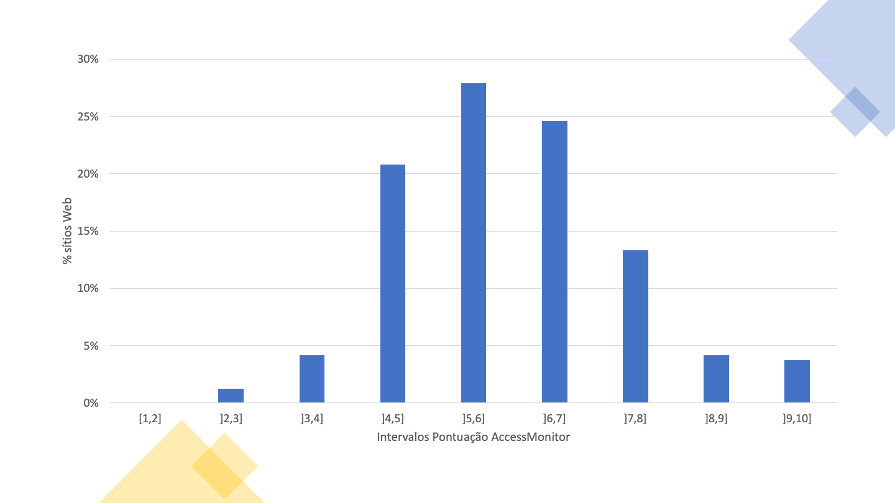
Na Tabela 20 é apresentada a distribuição das pontuações dos 240 sítios web. A partir da tabela podemos observar que o percentil 50% se encontra no intervalo de pontuações de 5 a 6 (inclusive).
| Intervalo de pontuações | Frequência (nº de sítios) | Frequência acumulada | Frequência (%) | Frequência acumulada (%) |
|---|---|---|---|---|
| [1,2] | 0 | 0 | 0% | 0% |
| ]2,3] | 3 | 3 | 1.3% | 1.3% |
| ]3,4] | 10 | 13 | 4.2% | 5.4% |
| ]4,5] | 50 | 63 | 20.8% | 26.3% |
| ]5,6] | 67 | 130 | 27.9% | 54.2% |
| ]6,7] | 59 | 189 | 24.6% | 78.8% |
| ]7,8] | 32 | 221 | 13.3% | 92.1% |
| ]8,9] | 10 | 231 | 4.2% | 96.3% |
| ]9,10] | 9 | 240 | 3.8% | 100% |
No Gráfico 9 é apresentado a distribuição das pontuações das 19,931 páginas avaliadas dos 240 sítios web. A partir do gráfico podemos observar que o intervalo de pontuações de 6 a 7 (inclusive) contém a maior concentração de páginas. Adicionalmente, apenas 41 páginas, correspondentes a 0.2% da amostra, têm uma pontuação de 10.
Nota: caso não consiga consultar, por qualquer razão, o gráfico seguinte, veja os dados na Tabela 21.
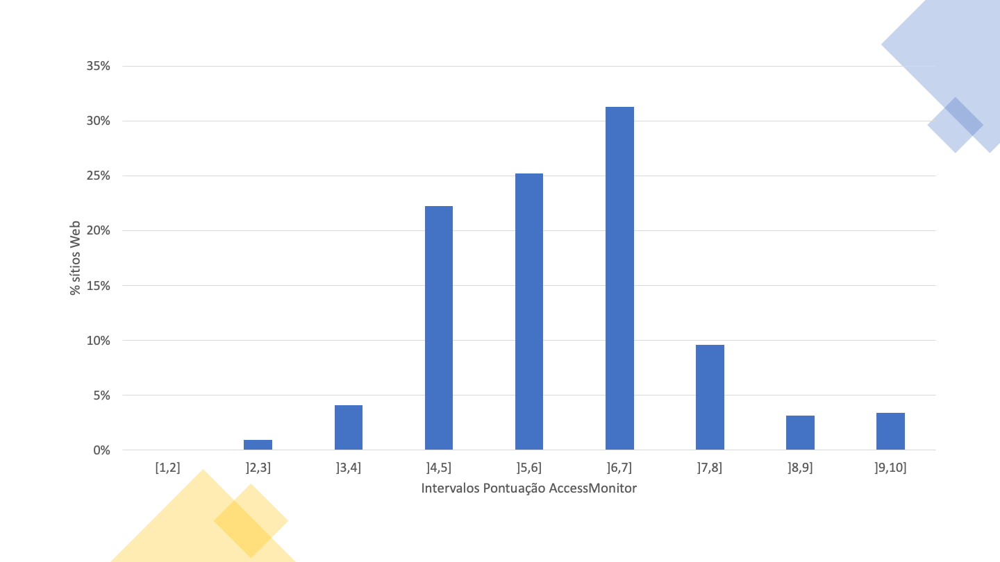
Na Tabela 21 é apresentada a distribuição das pontuações das 19,931 páginas dos 240 sítios web. A partir da tabela podemos observar que o percentil 50% se encontra no intervalo de pontuações de 5 a 6 (inclusive) apesar da moda ser o intervalo de 6 a 7 (inclusive) com 31.3% das páginas.
| Intervalo de pontuações | Frequência (nº de páginas) | Frequência acumulada | Frequência (%) | Frequência acumulada (%) |
|---|---|---|---|---|
| [1,2] | 0 | 0 | 0% | 0% |
| ]2,3] | 190 | 190 | 1% | 1% |
| ]3,4] | 817 | 1007 | 4.1% | 5.1% |
| ]4,5] | 4435 | 5442 | 22.3% | 27.3% |
| ]5,6] | 5033 | 10475 | 25.3% | 52.6% |
| ]6,7] | 6241 | 16716 | 31.3% | 83.9% |
| ]7,8] | 1911 | 18627 | 9.6% | 93.5% |
| ]8,9] | 626 | 19253 | 3.1% | 96.6% |
| ]9,10] | 678 | 19931 | 3.4% | 100% |
Na amostra 2K, dos 281 sítios web, recolheram-se 281,706 páginas, correspondendo a uma média de 1003 páginas por sítio web. No Gráfico 10 é possível visualizar a distribuição do número de páginas por sítio web. 30% dos sítios tem mais de 1750 páginas. No extremo oposto 33% tem menos de 250 páginas.
Nota: caso não consiga consultar, por qualquer razão, o gráfico seguinte, veja os dados na Tabela 22.
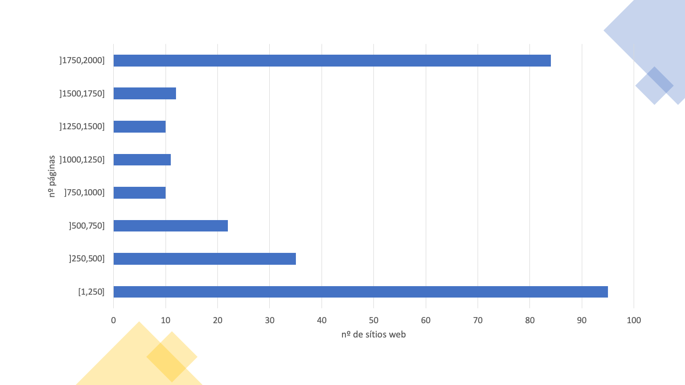
A Tabela 22 apresenta detalhes sobre a distribuição do número de páginas por sítio web nesta amostra.
| Intervalos de páginas | Frequência (nº de sítios) | Frequência acumulada | Frequência (%) | Frequência acumulada (%) |
|---|---|---|---|---|
| [1,250] | 95 | 95 | 34,1% | 34,1% |
| ]250,500] | 35 | 130 | 12,5% | 46,6% |
| ]500,750] | 22 | 152 | 7,9% | 54,5% |
| ]750,1000] | 10 | 162 | 3,6% | 58,1% |
| ]1000,1250] | 11 | 173 | 3,9% | 62,0% |
| ]1250,1500] | 10 | 183 | 3,6% | 65,6% |
| ]1500,1750] | 12 | 195 | 4,3% | 69,9% |
| ]1750,2000] | 84 | 279 | 30,1% | 100,0% |
Dos 281 sítios web, 2 falharam o requisito de ter pelo menos uma página avaliada, e 24 falharam o requisito de ter pelo menos 10 páginas avaliadas com 100 ou mais elementos, e por isso não são considerados na análise que se segue. Assim, para esta análise são considerados apenas os 255 sítios web com pelo menos 10 páginas avaliadas com 100 ou mais elementos HTML. No total, nesta amostra, foram avaliadas 223,331 páginas.
Na Tabela 23 é apresentado o número (e percentagem) de sítios web que verificam ou violam cada cláusula da EN 301 549, bem como aqueles que necessitam de validação manual ou que não são aplicáveis em nenhuma página do sítio web.
| Cláusula EN 301 549 | Nível de conformidade WCAG | Nº de não conformes | Nº que necessitam de validação manual | Nº de não aplicáveis |
|---|---|---|---|---|
| 9.1.1.1 Conteúdo não textual | A | 209 (82.0%) | 0 (0%) | 0 (0%) |
| 9.1.2.1 Apenas áudio e apenas vídeo (pré-gravado) | A | 0 (0%) | 55 (21.6%) | 200 (78.4%) |
| 9.1.2.2 Legendas (pré-gravadas) | A | 0 (0%) | 55 (21.6%) | 200 (78.4%) |
| 9.1.2.3 Audiodescrição ou alternativa em multimédia (pré-gravada) | A | 0 (0%) | 55 (21.6%) | 200 (78.4%) |
| 9.1.3.1 Informações e relações | A | 214 (83.9%) | 0 (0%) | 1 (0.4%) |
| 9.1.4.2 Controlo de áudio | A | 0 (0%) | 9 (3.5%) | 246 (96.5%) |
| 9.2.1.1 Teclado | A | 33 (12.9%) | 0 (0%) | 139 (54.5%) |
| 9.2.2.1 Tempo ajustável | A | 5 (2.0%) | 0 (0%) | 228 (89.4%) |
| 9.2.4.1 Ignorar blocos | A | 0 (0%) | 199 (78.0%) | 0 (0%) |
| 9.2.4.2 Página com título | A | 19 (7.5%) | 0 (0%) | 0 (0%) |
| 9.2.4.4 Finalidade da hiperligação (em contexto) | A | 243 (95.3%) | 11 (4.3%) | 0 (0%) |
| 9.2.5.3 Legenda no nome | A | 45 (17.6%) | 0 (0%) | 126 (49.4%) |
| 9.3.1.1 Idioma da página | A | 72 (28.2%) | 0 (0%) | 0 (0%) |
| 9.3.3.1 Identificação de erros | A | 0 (0%) | 249 (97.6%) | 6 (2.4%) |
| 9.4.1.1 Análise sintática (parsing) | A | 202 (79.2%) | 0 (0%) | 0 (0%) |
| 9.4.1.2 Nome, função, valor | A | 253 (99.2%) | 1 (0.4%) | 0 (0%) |
| 9.1.2.5 Audiodescrição (pré-gravada) | AA | 0 (0%) | 55 (21.6%) | 200 (78.4%) |
| 9.1.3.4 Orientação | AA | 0 (0%) | 0 (0%) | 255 (100.0%) |
| 9.1.3.5 Identificação do propósito de entrada | AA | 3 (1.2%) | 0 (0%) | 144 (56.5%) |
| 9.1.4.3 Contraste (mínimo) | AA | 242 (94.9%) | 6 (2.4%) | 0 (0%) |
| 9.1.4.4 Redimensionar texto | AA | 77 (30.2%) | 172 (67.5%) | 2 (0.8%) |
| 9.3.1.2 Idioma de partes | AA | 3 (1.2%) | 0 (0%) | 132 (51.8%) |
Observando a Tabela 23 podemos concluir que houve uma baixa taxa de conformidade face às cláusulas testadas.
As cláusulas com maior índice de não conformidade foram:
Foram feitas duas análises em relação a estas declarações:
A Tabela 24 apresenta os resultados obtidos na primeira análise, em que apenas foram tomadas em consideração as cláusulas das relações primárias.
| Declaração de desempenho funcional | Nº em violação | Nº que necessitam de validação manual | Nº de não aplicáveis |
|---|---|---|---|
| Utilização sem visão (WV) | 255 (100.0%) | 0 (0%) | 0 (0%) |
| Utilização com baixa visão (LV) | 254 (99.6%) | 1 (0.4%) | 0 (0%) |
| Utilização sem perceção de cor (WPC) | 242 (94.9%) | 13 (5.1%) | 0 (0%) |
| Utilização sem audição (WH) | 230 (90.2%) | 13 (5.1%) | 0 (0%) |
| Utilização com baixa audição (LH) | 127 (49.8%) | 22 (8.6%) | 104 (40.8%) |
| Utilização com manipulação ou força limitada (LMS) | 255 (100.0%) | 0 (0%) | 0 (0%) |
| Utilização com alcance limitado (LR) | 45 (17.6%) | 0 (0%) | 126 (49.4%) |
| Utilização com limitação cognitiva, de linguagem ou de aprendizagem (LC) | 254 (99.6%) | 1 (0.4%) | 0 (0%) |
Observando a Tabela 24 podemos concluir que existe uma grande taxa de falha face às declarações de desempenho funcional, quando avaliadas apenas as cláusulas das relações primárias. A declaração de desempenho funcional com menor taxa de não conformidade foi:
A Tabela 25 apresenta os resultados obtidos na segunda análise, em que foram tomadas em consideração todas as cláusulas das relações primárias e secundárias.
| Declaração de desempenho funcional | Nº em violação | Nº que necessitam de validação manual | Nº de não aplicáveis |
|---|---|---|---|
| Utilização sem visão (WV) | 255 (100.0%) | 0 (0%) | 0 (0%) |
| Utilização com baixa visão (LV) | 255 (100.0%) | 0 (0%) | 0 (0%) |
| Utilização sem perceção de cor (WPC) | 242 (94.9%) | 13 (5.1%) | 0 (0%) |
| Utilização sem audição (WH) | 235 (92.2%) | 10 (3.9%) | 0 (0%) |
| Utilização com baixa audição (LH) | 233 (91.4%) | 12 (4.7%) | 0 (0%) |
| Utilização sem ou com limitação da oralidade (WVC) | 254 (99.6%) | 1 (0.4%) | 0 (0%) |
| Utilização com manipulação ou força limitada (LMS) | 255 (100.0%) | 0 (0%) | 0 (0%) |
| Utilização com alcance limitado (LR) | 45 (17.6%) | 0 (0%) | 126 (49.4%) |
| Utilização com limitação cognitiva, de linguagem ou de aprendizagem (LC) | 255 (100.0%) | 0 (0%) | 0 (0%) |
| Privacidade (P) | 230 (90.2%) | 10 (3.9%) | 0 (0%) |
Observando a Tabela 25 podemos concluir que existe um grande índice de não conformidade face às declarações de desempenho funcional, quando avaliadas todas as cláusulas da EN 301 549. A declaração de desempenho funcional com menor taxa de não conformidade foi:
Na Tabela 26 é apresentado o número de sítios web em que cada teste do AccessMonitor é verificado, bem como o tipo de prática (boa ou má prática) que o teste valida. Pela análise da Tabela 26 podemos verificar que das 12 boas práticas analisadas, duas são verificadas em apenas um sítio web (“Identifiquei X casos em que se faz uso de manipuladores de eventos redundantes” e “Localizei nos metadados da página X elementos que poderão servir para construir um sistema de navegação”). Por outro lado, das 28 más práticas, todas ocorrem em mais do que um sítio web. A média de sítios web que seguem cada boa prática é de 56%, enquanto a média de sítios web que aplicam cada má prática é de 46%.
| Ocorrências encontradas AccessMonitor | Nº de sítios web | Tipo de prática |
|---|---|---|
| Constatei que todas as imagens da página têm o necessário equivalente alternativo em texto. | 218 | Boa prática |
| Encontrei X imagens na página que não têm o necessário equivalente alternativo em texto. | 205 | Má prática |
| Encontrei X imagens na página com alt=“” (alt nulo). | 240 | Para validar manualmente |
| Encontrei X imagens na página com alt que não serve de equivalente alternativo. | 127 | Má prática |
| Encontrei X imagens na página em que alt tem mais de 100 carateres . | 122 | Para validar manualmente |
| Constatei que todas as 'area' ativas dos mapas de imagem da página fazem uso do atributo alt. | 21 | Boa prática |
| Encontrei X elementos 'area' sem atributo alt ou com alt=““. | 48 | Má prática |
| Constatei que todos os botões gráficos da página fazem uso do atributo alt. | 32 | Boa prática |
| Localizei X botões gráficos na página que não tem o atributo alt. | 20 | Má prática |
| Encontrei X links cujo conteúdo está vazio. Ou melhor, é composto apenas por uma imagem e a imagem tem por equivalente textual alternativo um caráter vazio (i.e. alt=““). | 207 | Má prática |
| Identifiquei X casos em que o atributo title do elemento link se limita a repetir o texto existente no link. | 196 | Má prática |
| Encontrei X grupos de links com o mesmo texto mas cujo destino é diferente. | 250 | Para validar manualmente |
| Constatei que o primeiro link da página nos permite saltar para o conteúdo principal. | 91 | Para validar manualmente |
| Constatei que a primeira hiperligação da página não permite saltar diretamente para a área do conteúdo principal. | 223 | Má prática |
| Encontrei X links para contornar blocos de conteúdo. | 203 | Para validar manualmente |
| Encontrei X cabeçalhos na página. | 252 | Para validar manualmente |
| Não encontrei nesta página um cabeçalho principal 'H1' marcado. | 172 | Má prática |
| Localizei X ocorrências de listas vazias ou com 'li' fora das listas. | 177 | Má prática |
| Encontrei X elementos 'fieldset' fora do formulário. | 40 | Má prática |
| Encontrei X elementos 'fieldset' sem descrição. | 76 | Má prática |
| Localizei X elementos 'label' que não estão visíveis ou estão incorretamente posicionados. | 135 | Má prática |
| Constatei que todos os controlos de formulário têm um nome acessivel. | 211 | Boa prática |
| Encontrei X controlos de formulário sem nome acessivel. | 171 | Para validar manualmente |
| Encontrei X casos em que se usa javascript para remover o foco do campo, sempre que o campo recebe o foco. | 93 | Má prática |
| Constatei que todos os formulários têm um botão para submeter os dados ao servidor. | 205 | Boa prática |
| Identifiquei X formulários sem o botão para submeter os dados ao servidor. | 152 | Má prática |
| Localizei X tabelas de dados sem o elemento 'caption'. | 221 | Má prática |
| Encontrei X tabelas sem cabeçalhos identificados mas que usam o elemento 'caption'. | 32 | Para validar manualmente |
| Encontrei X tabelas de dados complexos - em que múltiplas linhas configuram as células cabeçalho -, nas quais se constatou existirem células de dados sem o atributo 'headers'. | 102 | Má prática |
| Encontrei X tabelas sem cabeçalhos marcados. | 211 | Má prática |
| Encontrei X elementos 'iframe' sem title. | 197 | Má prática |
| Encontrei X abreviaturas em que se esqueceu de colocar a extensão. | 8 | Má prática |
| Identifiquei X casos em que nas CSS se especifica um espaçamento entre linhas inferior a 1.5. | 3 | Para validar manualmente |
| Encontrei X casos em que se usa texto justificado via HTML. | 80 | Má prática |
| Identifiquei X casos em que se usa texto justificado via CSS. | 185 | Para validar manualmente |
| Identifiquei X casos em que o tamanho de letra está expresso em unidades de medida absolutas. | 69 | Má prática |
| Identifiquei X casos na CSS em que se utilizam unidades de medida absolutas para definir a largura das caixas de conteúdo. | 96 | Para validar manualmente |
| Verifiquei que há X casos, em que as unidades de medida que definem a largura dos elementos de conteúdo existentes no HTML estão expressas em valores absolutos. | 228 | Para validar manualmente |
| Verifiquei que há X caso, em que as unidades de medida que definem a largura dos elementos de conteúdo existentes no HTML estão expressas em valores relativos. | 123 | Boa prática |
| Localizei X combinações de cor cuja relação de contraste é inferior ao mínimo rácio de contraste permitido pelas WCAG, ou seja 3 para 1 para texto com letra grande e 4,5 para 1 para texto com letra normal. | 242 | Má prática |
| Identifiquei X regras de CSS em que não se especifica a cor da letra ou a cor do fundo. | 114 | Para validar manualmente |
| Identifiquei X casos em que se faz uso de manipuladores de eventos redundantes. | 1 | Boa prática |
| Identifiquei X casos em que não se faz uso de manipuladores de eventos redundantes. | 98 | Má prática |
| Identifiquei X casos em que se associam manipuladores de eventos a elementos não interativos. | 64 | Má prática |
| Perguntei ao validador de HTML do W3C e constatei que não existem erros de HTML. | 255 | Boa prática |
| Constatei que não há elementos obsoletos usados para controlo visual da apresentação. | 253 | Boa prática |
| Verifiquei que o idioma principal da página está marcado como “X”. | 232 | Para validar manualmente |
| Constatei que o atributo X se encontra em falta. | 70 | Má prática |
| Verifiquei que o idioma principal da página está incorretamente marcado. “X” existe? | 6 | Má prática |
| Verifiquei que esta página não tem título - falta-lhe o elemento 'title'. | 6 | Má prática |
| Verifiquei que esta página não tem título - o elemento 'title' está vazio. | 13 | Má prática |
| Encontrei um título na página e ele parece-me correto. | 255 | Boa prática |
| Parece-me que o título da página é demasiado grande - ele contém X carateres. | 173 | Para validar manualmente |
| Localizei nos metadados da página X elementos 'link' que poderão servir para construir um sistema de navegação.. | 1 | Boa prática |
| Constatei que a página reinicia-se automaticamente através do elemento 'meta http-equiv=“refresh”'. | 4 | Para validar manualmente |
| Constatei que a página é redireccionada automaticamente através do elemento 'meta http-equiv=“redirect”'. | 1 | Para validar manualmente |
| Constatei que todos os cabeçalhos desta página têm nome acessível | 250 | Boa prática |
Na Tabela 27 é apresentado o número de sítios web em que cada regra ACT testada passa, falha ou requer validação manual pelo menos uma vez. Pela análise desta tabela podemos verificar que 33 regras ACT passaram pelo menos uma vez e 28 regras ACT falharam pelo menos uma vez, em toda a amostra 2K. Encontraram-se seis regras ACT que falham em mais sítios web do que aqueles em que passam, sendo estas as mesmas 6 regras em que isto se verificou na amostra Home+:
Se não considerarmos a regra “First focusable element is link to non-repeated content” devido às razões apresentadas anteriormente, podemos constatar os mesmos quatro tipos de problemas: falta de nomes acessíveis em elementos HTML, utilização incorreta de ARIA, atribuição incorreta de foco a iframes, e utilização de cores com contraste insuficiente.
Algumas das regras apresentam um zero em todas os colunas. Isso significa que não foi encontrada nenhuma página na amostra em que a regra fosse aplicável.
| Regras ACT | Passam | Falham | Necessitam de validação manual |
|---|---|---|---|
| Orientation of the page is not restricted using CSS transform property | 0 | 0 | 0 |
| iframe elements with identical accessible names have equivalent purpose | 0 | 0 | 36 |
| Button has non-empty accessible name | 237 | 71 | 0 |
| Link has non-empty accessible name | 186 | 243 | 0 |
| Element with aria-hidden has no focusable content | 201 | 73 | 0 |
| meta viewport allows for zoom | 191 | 77 | 0 |
| audio or video avoids automatically playing audio | 0 | 0 | 9 |
| id attribute value is unique | 225 | 202 | 0 |
| role attribute has valid value | 215 | 69 | 0 |
| svg element with explicit role has non-empty accessible name | 34 | 2 | 0 |
| Element with lang attribute has valid language tag | 123 | 3 | 0 |
| video element visual content has accessible alternative | 0 | 0 | 55 |
| autocomplete attribute has valid value | 111 | 3 | 0 |
| ARIA state or property is permitted | 217 | 84 | 0 |
| video element auditory content has accessible alternative | 0 | 0 | 55 |
| aria-* attribute is defined in WAI-ARIA | 237 | 3 | 0 |
| Element with role attribute has required states and properties | 224 | 27 | 0 |
| audio element content has text alternative | 0 | 0 | 1 |
| Visible label is part of accessible name | 99 | 45 | 0 |
| video element visual-only content has accessible alternative | 0 | 0 | 55 |
| video element visual content has strict accessible alternative | 0 | 0 | 55 |
| ARIA required context role | 63 | 70 | 0 |
| ARIA state or property has valid value | 229 | 11 | 0 |
| headers attribute specified on a cell refers to cells in the same table element | 17 | 5 | 0 |
| ARIA required owned elements | 61 | 92 | 0 |
| Table header cell has assigned cells | 120 | 31 | 0 |
| Zoomed text node is not clipped with CSS overflow | 0 | 0 | 248 |
| Error message describes invalid form field value | 0 | 0 | 249 |
| Object element rendering non-text content has non-empty accessible name | 0 | 12 | 0 |
| Scrollable element is keyboard accessible | 98 | 33 | 0 |
| Links with identical accessible names and context serve equivalent purpose | 173 | 0 | 237 |
| Element marked as decorative is not exposed | 237 | 99 | 0 |
| Audio or video that plays automatically has no audio that lasts more than 3 seconds | 0 | 0 | 9 |
| audio or video that plays automatically has a control mechanism | 0 | 0 | 9 |
| video element visual-only content is media alternative for text | 0 | 0 | 55 |
| video element visual-only content has description track | 0 | 0 | 0 |
| video element visual-only content has transcript | 0 | 0 | 55 |
| video element visual-only content has audio track alternative | 0 | 0 | 55 |
| video element visual content has audio description | 0 | 0 | 55 |
| video element content is media alternative for text | 0 | 0 | 55 |
| video element visual content has description track | 0 | 0 | 55 |
| audio element content has transcript | 0 | 0 | 1 |
| audio element content is media alternative for text | 0 | 0 | 1 |
| video element auditory content has captions | 0 | 0 | 55 |
| Audio and visuals of video element have transcript | 0 | 0 | 55 |
| Element in sequential focus order has visible focus | 0 | 0 | 255 |
| Document has a landmark with non-repeated content | 136 | 0 | 224 |
| Document has heading for non-repeated content | 136 | 0 | 224 |
| Element with presentational children has no focusable content | 253 | 37 | 0 |
| Menuitem has non-empty accessible name | 18 | 6 | 0 |
| Letter spacing in style attributes is not !important | 128 | 1 | 0 |
| Word spacing in style attributes is not !important | 66 | 0 | 0 |
| iframe with negative tabindex has no interactive elements | 22 | 86 | 0 |
| meta element has no refresh delay (no exception) | 22 | 5 | 0 |
| First focusable element is link to non-repeated content | 0 | 233 | 22 |
| Block of repeated content is collapsible | 136 | 0 | 224 |
| Document has an instrument to move focus to non-repeated content | 136 | 0 | 224 |
| Bypass Blocks of Repeated Content | 215 | 0 | 199 |
Na Tabela 28 é apresentado o número de páginas em que cada teste do AccessMonitor é verificado, bem como o tipo de prática que o teste valida. Pela análise da tabela podemos verificar que todas as boas práticas e todas as más práticas foram detetadas em pelo menos uma página. Das 11 boas práticas analisadas, todos são verificadas em pelo menos 5 páginas. Das 28 más práticas todas ocorrem em pelo menos 30 páginas. A média de páginas que seguem cada boa prática é de 44%, enquanto a média de páginas que aplicam cada má prática é de 18%.
A boa prática aplicada por mais páginas é “Encontrei um título na página e ele parece-me correto”, aplicada em 99.3% das páginas. A boa prática menos aplicada é “Identifiquei X casos em que se faz uso de manipuladores de eventos redundantes”, aplicada em apenas 5 páginas.
A má prática aplicada em mais páginas é “Localizei X combinações de cor cuja relação de contraste é inferior ao mínimo rácio de contraste permitido pelas WCAG, ou seja 3 para 1 para texto com letra grande e 4,5 para 1 para texto com letra normal.”, verificada em 72% das páginas. A má prática encontrada em menos páginas é “Encontrei X abreviaturas em que se esqueceu de colocar a extensão”, verificada em 0.01% das páginas.
| Ocorrências encontradas AccessMonitor | Nº de páginas | Tipo de prática |
|---|---|---|
| Constatei que todas as imagens da página têm o necessário equivalente alternativo em texto. | 166184 | Boa prática |
| Encontrei X imagens na página que não têm o necessário equivalente alternativo em texto. | 53125 | Má prática |
| Encontrei X imagens na página com alt=“” (alt nulo). | 98620 | Para validar manualmente |
| Encontrei X imagens na página com alt que não serve de equivalente alternativo. | 11463 | Má prática |
| Encontrei X imagens na página em que alt tem mais de 100 carateres . | 12035 | Para validar manualmente |
| Constatei que todas as 'area' ativas dos mapas de imagem da página fazem uso do atributo alt. | 1376 | Boa prática |
| Encontrei X elementos 'area' sem atributo alt ou com alt=““. | 1609 | Má prática |
| Constatei que todos os botões gráficos da página fazem uso do atributo alt. | 27591 | Boa prática |
| Localizei X botões gráficos na página que não tem o atributo alt. | 1155 | Má prática |
| Encontrei X links cujo conteúdo está vazio. Ou melhor, é composto apenas por uma imagem e a imagem tem por equivalente textual alternativo um caráter vazio (i.e. alt=““). | 65081 | Má prática |
| Identifiquei X casos em que o atributo title do elemento link se limita a repetir o texto existente no link. | 116078 | Má prática |
| Encontrei X grupos de links com o mesmo texto mas cujo destino é diferente. | 128555 | Para validar manualmente |
| Constatei que o primeiro link da página nos permite saltar para o conteúdo principal. | 64891 | Para validar manualmente |
| Constatei que a primeira hiperligação da página não permite saltar diretamente para a área do conteúdo principal. | 158442 | Má prática |
| Encontrei X links para contornar blocos de conteúdo. | 136622 | Para validar manualmente |
| Encontrei X cabeçalhos na página. | 212994 | Para validar manualmente |
| Não encontrei nesta página um cabeçalho principal 'H1' marcado. | 43060 | Má prática |
| Localizei X ocorrências de listas vazias ou com 'li' fora das listas. | 38817 | Má prática |
| Encontrei X elementos 'fieldset' fora do formulário. | 10133 | Má prática |
| Encontrei X elementos 'fieldset' sem descrição. | 8870 | Má prática |
| Localizei X elementos 'label' que não estão visíveis ou estão incorretamente posicionados. | 65204 | Má prática |
| Constatei que todos os controlos de formulário têm um nome acessivel. | 120360 | Boa prática |
| Encontrei X controlos de formulário sem nome acessivel. | 33684 | Para validar manualmente |
| Encontrei X casos em que se usa javascript para remover o foco do campo, sempre que o campo recebe o foco. | 22892 | Má prática |
| Constatei que todos os formulários têm um botão para submeter os dados ao servidor. | 134286 | Boa prática |
| Identifiquei X formulários sem o botão para submeter os dados ao servidor. | 52573 | Má prática |
| Localizei X tabelas de dados sem o elemento 'caption'. | 70883 | Má prática |
| Encontrei X tabelas sem cabeçalhos identificados mas que usam o elemento 'caption'. | 2193 | Para validar manualmente |
| Encontrei X tabelas de dados complexos - em que múltiplas linhas configuram as células cabeçalho -, nas quais se constatou existirem células de dados sem o atributo 'headers'. | 22437 | Má prática |
| Encontrei X tabelas sem cabeçalhos marcados. | 61032 | Má prática |
| Encontrei X elementos 'iframe' sem title. | 23862 | Má prática |
| Encontrei X abreviaturas em que se esqueceu de colocar a extensão. | 30 | Má prática |
| Identifiquei X casos em que nas CSS se especifica um espaçamento entre linhas inferior a 1.5. | 166 | Para validar manualmente |
| Encontrei X casos em que se usa texto justificado via HTML. | 1731 | Má prática |
| Identifiquei X casos em que se usa texto justificado via CSS. | 43765 | Para validar manualmente |
| Identifiquei X casos em que o tamanho de letra está expresso em unidades de medida absolutas. | 42197 | Má prática |
| Identifiquei X casos na CSS em que se utilizam unidades de medida absolutas para definir a largura das caixas de conteúdo. | 48951 | Para validar manualmente |
| Verifiquei que há X casos, em que as unidades de medida que definem a largura dos elementos de conteúdo existentes no HTML estão expressas em valores absolutos. | 52796 | Para validar manualmente |
| Verifiquei que há X caso, em que as unidades de medida que definem a largura dos elementos de conteúdo existentes no HTML estão expressas em valores relativos. | 17147 | Boa prática |
| Localizei X combinações de cor cuja relação de contraste é inferior ao mínimo rácio de contraste permitido pelas WCAG, ou seja 3 para 1 para texto com letra grande e 4,5 para 1 para texto com letra normal. | 160985 | Má prática |
| Identifiquei X regras de CSS em que não se especifica a cor da letra ou a cor do fundo. | 39852 | Para validar manualmente |
| Identifiquei X casos em que se faz uso de manipuladores de eventos redundantes. | 5 | Boa prática |
| Identifiquei X casos em que não se faz uso de manipuladores de eventos redundantes. | 28517 | Má prática |
| Identifiquei X casos em que se associam manipuladores de eventos a elementos não interativos. | 11737 | Má prática |
| Constatei que não há elementos obsoletos usados para controlo visual da apresentação. | 214197 | Boa prática |
| Verifiquei que o idioma principal da página está marcado como “X”. | 204711 | Para validar manualmente |
| Constatei que o atributo X se encontra em falta. | 18622 | Má prática |
| Verifiquei que o idioma principal da página está incorretamente marcado. “X” existe? | 482 | Má prática |
| Verifiquei que esta página não tem título - falta-lhe o elemento 'title'. | 91 | Má prática |
| Verifiquei que esta página não tem título - o elemento 'title' está vazio. | 1458 | Má prática |
| Encontrei um título na página e ele parece-me correto. | 221784 | Boa prática |
| Parece-me que o título da página é demasiado grande - ele contém X carateres. | 15411 | Para validar manualmente |
| Localizei nos metadados da página X elementos 'link' que poderão servir para construir um sistema de navegação.. | 8 | Boa prática |
| Constatei que a página reinicia-se automaticamente através do elemento 'meta http-equiv=“refresh”'. | 1547 | Para validar manualmente |
| Constatei que a página é redireccionada automaticamente através do elemento 'meta http-equiv=“redirect”'. | 1 | Para validar manualmente |
| Constatei que todos os cabeçalhos desta página têm nome acessível | 186303 | Boa prática |
Na Tabela 29 é apresentado o número de páginas que passam, falham e que requerem validação manual por regra ACT testada. Pela análise da tabela podemos verificar que 33 regras ACT passaram pelo menos uma vez e 28 regras ACT falharam pelo menos uma vez. Encontraram-se cinco regras ACT que falham em mais páginas do que aqueles em que passam:
Continuando a não considerar a regra “First focusable element is link to non-repeated content” devido às razões apresentadas anteriormente, podemos verificar que estamos na presença de três tipos de problemas: falta de nomes acessíveis em elementos HTML, atribuição incorreta de foco a iframes, e utilização de cores com contraste insuficiente.
| Regras ACT | Nº que passam | Nº que falham | Nº que necessitam de validação manual |
|---|---|---|---|
| Orientation of the page is not restricted using CSS transform property | 0 | 0 | \ |
| iframe elements with identical accessible names have equivalent purpose | 0 | 0 | 179 |
| Button has non-empty accessible name | 151452 | 17888 | 0 |
| Link has non-empty accessible name | 100878 | 122392 | 0 |
| Element with aria-hidden has no focusable content | 106321 | 10044 | 0 |
| meta viewport allows for zoom | 153320 | 39199 | 0 |
| audio or video avoids automatically playing audio | 0 | 0 | 32 |
| id attribute value is unique | 161006 | 61962 | 0 |
| role attribute has valid value | 137089 | 6814 | 0 |
| svg element with explicit role has non-empty accessible name | 16479 | 2078 | 0 |
| Element with lang attribute has valid language tag | 22182 | 4 | 0 |
| video element visual content has accessible alternative | 0 | 0 | 1037 |
| autocomplete attribute has valid value | 28937 | 263 | 0 |
| ARIA state or property is permitted | 122192 | 13195 | 0 |
| video element auditory content has accessible alternative | 0 | 0 | 1037 |
| aria-* attribute is defined in WAI-ARIA | 169517 | 19 | 0 |
| Element with role attribute has required states and properties | 137092 | 452 | 0 |
| audio element content has text alternative | 0 | 0 | 10 |
| Visible label is part of accessible name | 16116 | 18510 | 0 |
| video element visual-only content has accessible alternative | 0 | 0 | 1037 |
| video element visual content has strict accessible alternative | 0 | 0 | 1037 |
| ARIA required context role | 10501 | 8967 | 0 |
| ARIA state or property has valid value | 135242 | 144 | 0 |
| headers attribute specified on a cell refers to cells in the same table element | 610 | 315 | 0 |
| ARIA required owned elements | 10834 | 7218 | 0 |
| Table header cell has assigned cells | 12252 | 1939 | 0 |
| Zoomed text node is not clipped with CSS overflow | 0 | 0 | 187516 |
| Error message describes invalid form field value | 0 | 0 | 195831 |
| Object element rendering non-text content has non-empty accessible name | 0 | 1878 | 0 |
| Scrollable element is keyboard accessible | 29550 | 2192 | 0 |
| Links with identical accessible names and context serve equivalent purpose | 24129 | 0 | 50732 |
| Element marked as decorative is not exposed | 125040 | 6245 | 0 |
| Audio or video that plays automatically has no audio that lasts more than 3 seconds | 0 | 0 | 32 |
| audio or video that plays automatically has a control mechanism | 0 | 0 | 32 |
| video element visual-only content is media alternative for text | 0 | 0 | 1037 |
| video element visual-only content has description track | 0 | 0 | 0 |
| video element visual-only content has transcript | 0 | 0 | 1037 |
| video element visual-only content has audio track alternative | 0 | 0 | 1037 |
| video element visual content has audio description | 0 | 0 | 1037 |
| video element content is media alternative for text | 0 | 0 | 1037 |
| video element visual content has description track | 0 | 0 | 1037 |
| audio element content has transcript | 0 | 0 | 10 |
| audio element content is media alternative for text | 0 | 0 | 10 |
| video element auditory content has captions | 0 | 0 | 1037 |
| Audio and visuals of video element have transcript | 0 | 0 | 1037 |
| Element in sequential focus order has visible focus | 0 | 0 | 223291 |
| Document has a landmark with non-repeated content | 39351 | 0 | 183982 |
| Document has heading for non-repeated content | 39351 | 0 | 183982 |
| Element with presentational children has no focusable content | 219007 | 4154 | 0 |
| Menuitem has non-empty accessible name | 7608 | 6078 | 0 |
| Letter spacing in style attributes is not !important | 22573 | 4 | 0 |
| Word spacing in style attributes is not !important | 828 | 0 | 0 |
| iframe with negative tabindex has no interactive elements | 3624 | 5298 | 0 |
| meta element has no refresh delay (no exception) | 7966 | 1548 | 0 |
| First focusable element is link to non-repeated content | 0 | 169562 | 53771 |
| Block of repeated content is collapsible | 39351 | 0 | 183982 |
| Document has an instrument to move focus to non-repeated content | 39351 | 0 | 183982 |
| Bypass Blocks of Repeated Content | 70298 | 0 | 153034 |
No Gráfico 11 é apresentado a distribuição do índice AccessMonitor nos 255 sítios web da amostra 2k. A partir do gráfico podemos observar que o intervalo de pontuações ]5,6] contém a maior concentração de sítios (30%). É de salientar também que 78% dos sítios web tem um índice AccessMonitor superior a 5 – isto numa escala de 1 a 10. Dos dados recolhidos podemos ainda constatar que dos 8 sítios que se encontram no intervalo de pontuação ]9,10] há apenas 1 sítio com pontuação 10.
Nota: caso não consiga consultar, por qualquer razão, o gráfico seguinte, veja os dados na Tabela 30.
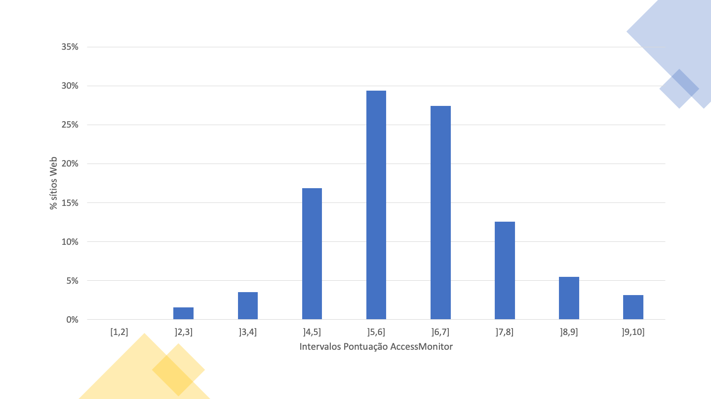
Na Tabela 30 é apresentada a distribuição das pontuações dos 255 sítios web. A partir da tabela podemos observar que o percentil 50% se encontra no intervalo de pontuações de 5 a 6 (inclusive).
| Intervalo de pontuações | Frequência (nº de páginas) | Frequência acumulada | Frequência (%) | Frequência acumulada (%) |
|---|---|---|---|---|
| [1,2] | 0 | 0 | 0,0% | 0,0% |
| ]2,3] | 4 | 4 | 1,6% | 1,6% |
| ]3,4] | 9 | 13 | 3,5% | 5,1% |
| ]4,5] | 43 | 56 | 16,9% | 22,0% |
| ]5,6] | 75 | 131 | 29,4% | 51,4% |
| ]6,7] | 70 | 201 | 27,5% | 78,8% |
| ]7,8] | 32 | 233 | 12,5% | 91,4% |
| ]8,9] | 14 | 247 | 5,5% | 96,9% |
| ]9,10] | 8 | 255 | 3,2% | 100,0% |
No Gráfico 12 é apresentado a distribuição das pontuações das 223,331 páginas avaliadas dos 255 sítios web. A partir do gráfico podemos observar que o intervalo de pontuações de 5 a 6 (inclusive) contém a maior concentração de páginas. Adicionalmente, apenas 44 páginas, correspondentes a 0.0018% da amostra, têm uma pontuação de 10.
Nota: caso não consiga consultar, por qualquer razão, o gráfico seguinte, veja os dados na Tabela 31.
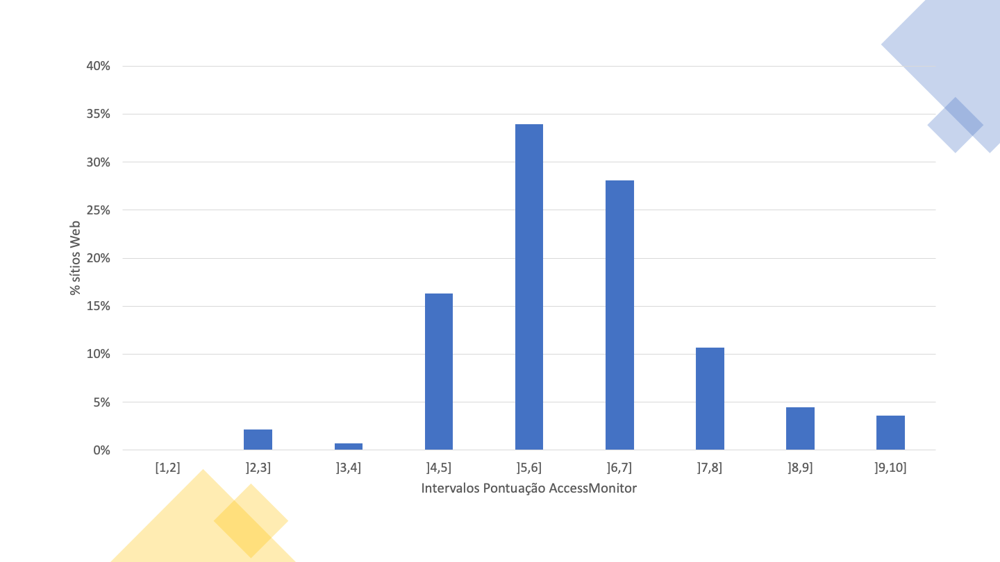
Na Tabela 31 é apresentada a distribuição das pontuações das 223,331 páginas dos 255 sítios web. A partir da tabela podemos observar que o percentil 50% se encontra no intervalo de de pontuações de 5 a 6 (inclusive).
| Intervalo de pontuações | Frequência (nº de páginas) | Frequência acumulada | Frequência (%) | Frequência acumulada (%) | | :--- | :---: | :---: | ---: | ---: | | [1,2] | 0 | 0 | 0,0% | 0,0% | | ]2,3] | 4845 | 4845 | 2.2% | 2.2% | | ]3,4] | 1592 | 6437 | 0.7% | 2.9% | | ]4,5] | 36502 | 42939 | 16.3% | 19.2% | | ]5,6] | 75878 | 118817 | 34,0% | 53.2% | | ]6,7] | 62803 | 181620 | 28.1% | 81.3% | | ]7,8] | 23796 | 205416 | 10.7% | 92,0% | | ]8,9] | 9932 | 215348 | 4.4% | 96.4% | | ]9,10] | 7983 | 223331 | 3.6% | 100,0% | [Tabela 31 – Distribuição pontuações AccessMonitor por página (amostra 2K)] [Tabela 31 – Distribuição pontuações AccessMonitor por página (amostra 2K)]
O método de monitorização simplificada permitiu identificar os incumprimentos mais frequentes das cláusulas da EN 301 549 que é possível avaliar com as ferramentas automatizadas que foram usadas. Dos incumprimentos destacam-se:
A amostra 2K, relativamente à amostra Home+, permite perceber que os problemas são ainda mais frequentes quando se alarga o número de páginas (a taxa de incumprimento para todas as cláusulas problemáticas cresce na amostra 2K). Várias cláusulas EN apresentam um crescimento significativo na taxa de não cumprimento quando se considera a amostra 2K. Por exemplo, 72% dos sítios web na amostra Home+ não estão conformes com a cláusula “9.1.1.1 Conteúdo não textual” enquanto a percentagem sobe para 82% na amostra 2K. Na cláusula “9.1.3.1 Informações e relações” a evolução é de 75% para 84%. Na “9.2.1.1 Teclado” passa de 8% para 13%. Na “9.2.4.4 Finalidade da hiperligação (em contexto)” passa de 89% para 95%. Na “9.3.1.1 Idioma da página” passa de 20% para 28%. Na “9.4.1.1 Análise sintática (parsing)” passa de 70% para 79%. Pode verificar-se que a amostra Home+ deteta a diversidade dos problemas, mas com uma menor taxa de incidência. não oferece uma cobertura realista dos problemas relacionados com várias cláusulas. Esta situação pode ser um resultado das equipas que gerem os sítios web dedicarem mais atenção às páginas que estão mais perto do topo da hierarquia do sítio por serem, provavelmente, mais visitadas. No entanto, caso isto se verifique, não é uma justificação para não dar o mesmo nível de atenção a todas as páginas disponibilizadas no sítio. No entanto, esta lógica não é assim para todos os princípios de acessibilidade analisados. A média de conformidade do princípio Compreensível mostra-nos que as não conformidades detetadas se diluem mais facilmente em amostras maiores como é a de 2K.
Relembramos que a amostra do tipo Home+ é a usada no Observatório Português da Acessibilidade web e que a lógica de correção das ocorrências encontradas deve ser aplicada não à amostra mas, de forma transversal, a todo o sítio web.
Os resultados descritos nesta secção referem-se a análise de 24 sítios web. No total, foram analisadas 477 páginas, correspondendo a uma média de 20 páginas por sítio web.
Na Tabela 32 é apresentado o número (e percentagem) de sítios web que verificam ou violam cada cláusula da EN 301 549, bem como aqueles que não são aplicáveis em nenhuma página do sítio web.
| Cláusula EN 301 549 | Nível de conformidade WCAG | Nº de conformes | Nº de não conformes | Nº de não aplicáveis |
|---|---|---|---|---|
| 9.1.1.1 Conteúdo não textual | A | 0 (0%) | 24 (100%) | 0 (0%) |
| 9.1.2.1 Apenas áudio e apenas vídeo (pré-gravado) | A | 0 (0%) | 8 (33%) | 16 (67%) |
| 9.1.2.2 Legendas (pré-gravadas) | A | 0 (0%) | 7 (29%) | 17 (71%) |
| 9.1.2.3 Audiodescrição ou alternativa em multimédia (pré-gravada) | A | 0 (0%) | 6 (25%) | 18 (75%) |
| 9.1.2.5 Audiodescrição (pré-gravada) | AA | 0 (0%) | 7 (29%) | 17 (71%) |
| 9.1.3.1 Informações e relações | A | 0 (0%) | 24 (100%) | 0 (0%) |
| 9.1.3.2 Sequência com significado | A | 7 (29%) | 17 (71%) | 0 (0%) |
| 9.1.3.3 Características sensoriais | A | 8 (33%) | 2 (8%) | 14 (58%) |
| 9.1.3.4 Orientação | AA | 23 (96%) | 1 (4%) | 0 (0%) |
| 9.1.3.5 Identificação do propósito de entrada | AA | 1 (4%) | 18 (75%) | 5 (21%) |
| 9.1.4.1 Utilização da cor | A | 3 (13%) | 10 (42%) | 11 (46%) |
| 9.1.4.2 Controlo de áudio | A | 0 (0%) | 2 (8%) | 22 (92%) |
| 9.1.4.3 Contraste (mínimo) | AA | 4 (17%) | 20 (83%) | 0 (0%) |
| 9.1.4.4 Redimensionar texto | AA | 13 (54%) | 11 (46%) | 0 (0%) |
| 9.1.4.5 Imagens de texto | AA | 2 (8%) | 14 (58%) | 8 (33%) |
| 9.1.4.10 Realinhar | AA | 1 (4%) | 23 (96%) | 0 (0%) |
| 9.1.4.11 Contraste não textual | AA | 3 (13%) | 21 (88%) | 0 (0%) |
| 9.1.4.12 Espaçamento de texto | AA | 10 (42%) | 14 (58%) | 0 (0%) |
| 9.1.4.13 Conteúdo em foco por rato ou teclado | AA | 7 (29%) | 7 (29%) | 10 (42%) |
| 9.2.1.1 Teclado | A | 6 (25%) | 18 (75%) | 0 (0%) |
| 9.2.1.2 Sem bloqueio do teclado | A | 23 (96%) | 1 (4%) | 0 (0%) |
| 9.2.1.4 Atalhos de teclas por caráter | A | 2 (8%) | 1 (4%) | 21 (88%) |
| 9.2.2.1 Tempo ajustável | A | 1 (4%) | 6 (25%) | 17 (71%) |
| 9.2.2.2 Colocar em pausa, parar, ocultar | A | 2 (8%) | 12 (50%) | 10 (42%) |
| 9.2.3.1 Três flashes ou abaixo do limite | A | 1 (4%) | 0 (0%) | 23 (96%) |
| 9.2.4.1 Ignorar blocos | A | 7 (29%) | 15 (63%) | 2 (8%) |
| 9.2.4.2 Página com título | A | 8 (33%) | 16 (67%) | 0 (0%) |
| 9.2.4.3 Ordem do foco | A | 7 (29%) | 17 (71%) | 0 (0%) |
| 9.2.4.4 Finalidade da hiperligação (em contexto) | A | 1 (4%) | 23 (96%) | 0 (0%) |
| 9.2.4.5 Várias formas | AA | 10 (42%) | 12 (50%) | 2 (8%) |
| 9.2.4.6 Cabeçalhos e etiquetas | AA | 16 (67%) | 8 (33%) | 0 (0%) |
| 9.2.4.7 Foco visível | AA | 8 (33%) | 16 (67%) | 0 (0%) |
| 9.2.5.1 Gestos por apontador | A | 5 (21%) | 1 (4%) | 18 (75%) |
| 9.2.5.2 Cancelamento do apontador | A | 23 (96%) | 0 (0%) | 1 (4%) |
| 9.2.5.3 Legenda no nome | A | 8 (33%) | 16 (67%) | 0 (0%) |
| 9.2.5.4 Atuação motora | A | 0 (0%) | 0 (0%) | 24 (100%) |
| 9.3.1.1 Idioma da página | A | 11 (46%) | 13 (54%) | 0 (0%) |
| 9.3.1.2 Idioma de partes | AA | 2 (8%) | 9 (38%) | 13 (54%) |
| 9.3.2.1 Ao receber o foco | A | 23 (96%) | 1 (4%) | 0 (0%) |
| 9.3.2.2 Ao entrar num campo de edição (input) | A | 20 (83%) | 1 (4%) | 3 (13%) |
| 9.3.2.3 Consistência de navegação | AA | 16 (67%) | 4 (17%) | 4 (17%) |
| 9.3.2.4 Consistência de identificação | AA | 14 (58%) | 7 (29%) | 3 (13%) |
| 9.3.3.1 Identificação de erros | A | 10 (42%) | 2 (8%) | 12 (50%) |
| 9.3.3.2 Etiquetas ou instruções | A | 9 (38%) | 12 (50%) | 3 (13%) |
| 9.3.3.3 Sugestão para eliminar o erro | AA | 7 (29%) | 2 (8%) | 15 (63%) |
| 9.3.3.4 Prevenção de erros (legais, financeiros, dados) | AA | 9 (38%) | 1 (4%) | 14 (58%) |
| 9.4.1.1 Análise sintática (parsing) | A | 0 (0%) | 24 (100%) | 0 (0%) |
| 9.4.1.2 Nome, função, valor | A | 1 (4%) | 22 (92%) | 1 (4%) |
| 9.4.1.3 Mensagens de estado (WCAG 2.1) | AA | 1 (4%) | 6 (25%) | 17 (71%) |
No Gráfico 13 e no Gráfico 14 são apresentadas as taxas média de não conformidade e conformidade das cláusulas da EN 301 549 aplicáveis a cada sítio web. Para facilitar a leitura no Gráfico 13 consideraram-se as cláusulas correspondentes ao nível ‘A’ das WCAG e no Gráfico 14 consideraram-se as cláusulas correspondentes ao nível ‘AA’ das WCAG. Embora a Norma Europeia não faça esta divisão por níveis de conformidade, ela revela-se útil para quem necessita de efetuar as correções das práticas encontradas. Na lógica das WCAG 2.1 será racional começar por eliminar os problemas encontrados no nível ‘A’. Numa observação rápida de ambos os gráficos verifica-se que as cláusulas não conformes rondam os 30% para o caso do nível ‘A’ e de 40% a 50% no caso das regras de nível ‘AA’. O número de cláusulas ‘A’ é também significativamente maior que as cláusulas que expressam o nível ‘AA’.
Nota: caso não consiga consultar, por qualquer razão, o gráfico seguinte, veja os dados na Tabela 32.
Nota: caso não consiga consultar, por qualquer razão, o gráfico seguinte, veja os dados na Tabela 32.
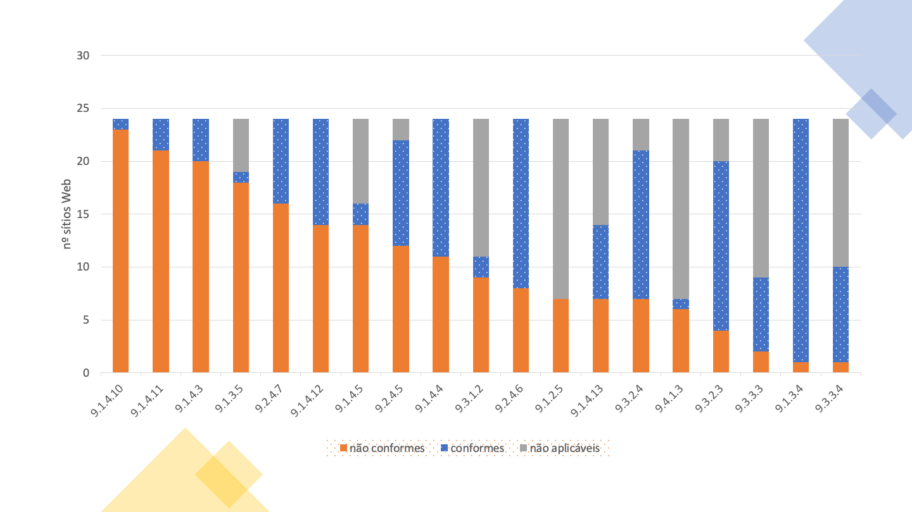
De acordo com os dados expostos na Tabela 32, é possível concluir que houve uma baixa taxa de conformidade face às cláusulas.
As 11 cláusulas com maior taxa de sucesso são:
As restantes cláusulas obtiveram uma taxa de sucesso inferior ou igual a 78% face aos sítios web aplicáveis.
As 11 cláusulas com maior taxa de falha foram:
As restantes cláusulas obtiveram uma taxa de falha inferior ou igual a 95%.
Foram feitas duas análises em relação a estas declarações:
Para esta análise, foram consideradas todas as 11 declarações de desempenho funcional.
A Tabela 33 apresenta os resultados obtidos na primeira análise, em que apenas foram tomadas em consideração as cláusulas das relações primárias.
| Declaração de desempenho funcional | Nº de conformes | Nº de não conformes | Nº de não aplicáveis |
|---|---|---|---|
| Utilização na ausência de visão | 0 (0%) | 24 (100%) | 0 (0%) |
| Utilização com visão limitada | 0 (0%) | 24 (100%) | 0 (0%) |
| Utilização na ausência de percepção da cor | 1 (4%) | 23 (96%) | 0 (0%) |
| Utilização na ausência de audição | 1 (4%) | 23 (96%) | 0 (0%) |
| Utilização com audição limitada | 1 (4%) | 18 (75%) | 5 (21%) |
| Utilização com capacidade de manipulação e/ou força limitada | 1 (4%) | 23 (96%) | 0 (0%) |
| Utilização com amplitude de movimentos limitada | 5 (21%) | 19 (79%) | 0 (0%) |
| Limitação do risco de desencadeamento de reações fotossensíveis | 1 (4%) | 6 (25%) | 17 (71%) |
| Utilização com capacidades cognitivas limitadas | 0 (0%) | 24 (100%) | 0 (0%) |
Observando a Tabela 33 podemos concluir que existe uma grande taxa de falha face às declarações de desempenho funcional, quando avaliadas apenas as cláusulas das relações primárias. As declarações de desempenho funcional com maior taxa de sucesso foram:
As restantes declarações de desempenho funcional obtiveram uma taxa de sucesso igual ou inferior a 4%, com 3 delas tendo uma taxa de 0%.
A Tabela 34 apresenta os resultados obtidos na primeira análise, considerando, porém, a taxa média de conformidade da amostra analisada.
| Declaração de desempenho funcional | Nº de conformes | Nº de não conformes | Nº de não aplicáveis |
|---|---|---|---|
| Utilização na ausência de visão | 32% | 41% | 27% |
| Utilização com visão limitada | 33% | 46% | 21% |
| Utilização na ausência de percepção da cor | 18% | 45% | 37% |
| Utilização na ausência de audição | 6% | 34% | 60% |
| Utilização com audição limitada | 6% | 22% | 71% |
| Utilização com capacidade de manipulação e/ou força limitada | 40% | 36% | 24% |
| Utilização com amplitude de movimentos limitada | 37% | 15% | 48% |
| Limitação do risco de desencadeamento de reações fotossensíveis | 4% | 13% | 83% |
| Utilização com capacidades cognitivas limitadas | 41% | 35% | 25% |
No Gráfico 15 é apresentado a taxa média de conformidade com as cláusulas de cada declaração de desempenho funcional considerando as relações primárias, representando o estado atual da amostra analisada.
Nota: caso não consiga consultar, por qualquer razão, o gráfico seguinte, veja os dados na Tabela 34.
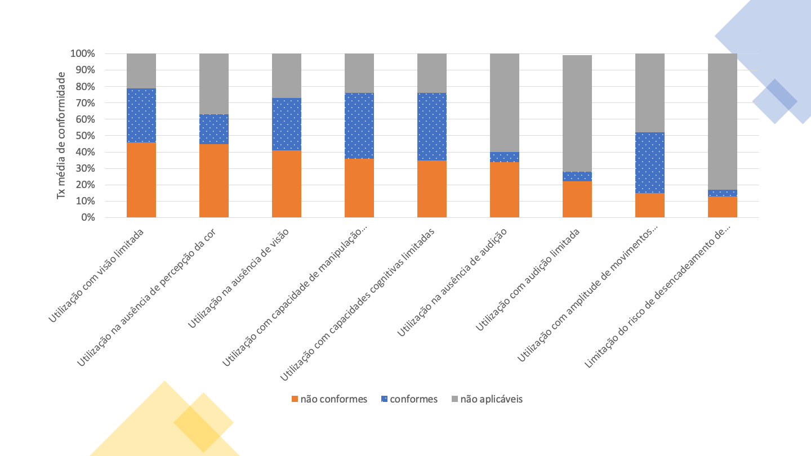
Observando a Tabela 34 podemos concluir que existe uma grande taxa média de falha face às declarações de desempenho funcional, quando avaliadas apenas as cláusulas das relações primárias. As declarações de desempenho funcional com maior índice de não conformidade são:
As restantes declarações de desempenho funcional obtiveram uma taxa de não conformidade inferior a 25%.
A Tabela 35 apresenta os resultados obtidos na segunda análise, em que foram tomadas em consideração todas as cláusulas das relações primárias e secundárias.
| Declaração de desempenho funcional | Nº de conformes | Nº de não conformes | Nº de não aplicáveis |
|---|---|---|---|
| Utilização na ausência de visão | 0 (0%) | 24 (100%) | 0 (0%) |
| Utilização com visão limitada | 0 (0%) | 24 (100%) | 0 (0%) |
| Utilização na ausência de percepção da cor | 1 (4%) | 23 (96%) | 0 (0%) |
| Utilização na ausência de audição | 0 (0%) | 24 (100%) | 0 (0%) |
| Utilização com audição limitada | 0 (0%) | 24 (100%) | 0 (0%) |
| Utilização na ausência de capacidade vocal | 0 (0%) | 24 (100%) | 0 (0%) |
| Utilização com capacidade de manipulação e/ou força limitada | 0 (0%) | 24 (100%) | 0 (0%) |
| Utilização com amplitude de movimentos limitada | 5 (21%) | 19 (79%) | 0 (0%) |
| Limitação do risco de desencadeamento de reações fotossensíveis | 1 (4%) | 6 (25%) | 17 (71%) |
| Utilização com capacidades cognitivas limitadas | 0 (0%) | 24 (100%) | 0 (0%) |
| Privacidade | 0 (0%) | 24 (100%) | 0 (0%) |
Observando a Tabela 35 podemos concluir que existe uma grande taxa de falha face às declarações de desempenho funcional, quando avaliadas todas as cláusulas. Apenas três declarações de desempenho funcional não apresentam taxa de não conformidade igual a 100%.
A Tabela 36 apresenta os resultados obtidos na segunda análise, considerando, porém, a taxa média de conformidade da amostra analisada.
| Declaração de desempenho funcional | Nº de conformes | Nº de não conformes | Nº de não aplicáveis |
|---|---|---|---|
| Utilização na ausência de visão | 31% | 39% | 29% |
| Utilização com visão limitada | 28% | 47% | 24% |
| Utilização na ausência de percepção da cor | 18% | 45% | 37% |
| Utilização na ausência de audição | 16% | 36% | 48% |
| Utilização com audição limitada | 9% | 34% | 57% |
| Utilização na ausência de capacidade vocal | 37% | 47% | 16% |
| Utilização com capacidade de manipulação e/ou força limitada | 38% | 36% | 26% |
| Utilização com amplitude de movimentos limitada | 29% | 16% | 55% |
| Limitação do risco de desencadeamento de reações fotossensíveis | 29% | 16% | 55% |
| Utilização com capacidades cognitivas limitadas | 28% | 38% | 33% |
| Privacidade | 0% | 100% | 0% |
No Gráfico 16 é apresentado a taxa média de conformidade com as cláusulas de cada declaração de desempenho funcional considerando as relações primárias e secundárias, representando o estado atual da amostra analisada.
Nota: caso não consiga consultar, por qualquer razão, o gráfico seguinte, veja os dados na Tabela 36.
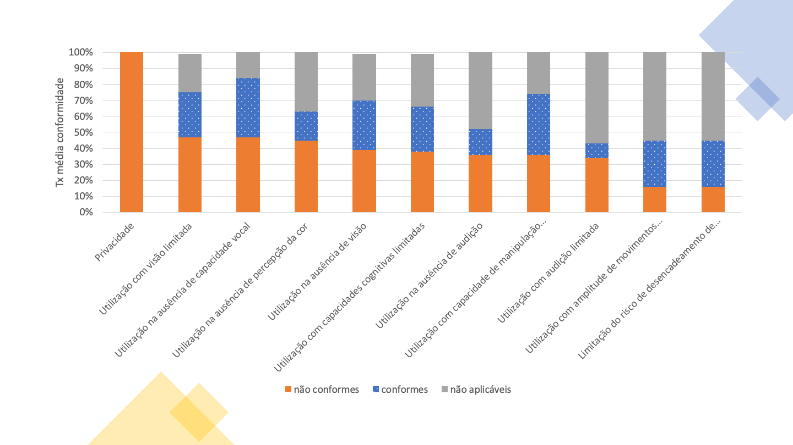
Observando a Tabela 36 podemos concluir que existe uma grande taxa média de falha face às declarações de desempenho funcional, quando avaliadas todas as cláusulas. As declarações de desempenho funcional com maior nível de taxa de não conformidade foram:
As restantes declarações de desempenho funcional obtiveram uma taxa média de não conformidade inferior a 40%.
O método de monitorização aprofundada permitiu identificar os incumprimentos mais frequentes das cláusulas da EN 301 549 aplicáveis a uma análise manual de sítios web. Dos incumprimentos destacam-se:
Foram analisadas 16 aplicações, sendo 8 aplicações Android e 8 aplicações iOS. No total das avaliações periciais foram contabilizados 144 ecrãs (70 em aplicações Android e 74 em aplicações iOS), correspondendo a uma média de 9 ecrãs por aplicação.
Na Tabela 37 é apresentado o número (e percentagem) de aplicações que verificam ou violam cada cláusula, bem como aquelas que não são aplicáveis em nenhum dos ecrãs avaliados ou que não podem ser determinados.
| Cláusula EN 301 549 | Nível de conformidade WCAG | Nº de conformes | Nº de não conformes | Nº Não Presentes |
|---|---|---|---|---|
| 11.1.1.1 Conteúdo não textual | A | 4 (25%) | 12 (75%) | 0 (0%) |
| 11.1.2.1 Apenas áudio e apenas vídeo (pré-gravado) | A | 0 (0%) | 0 (0%) | 16 (100%) |
| 11.1.2.2 Legendas (pré-gravadas) | A | 0 (0%) | 0 (0%) | 16 (100%) |
| 11.1.2.3 Audiodescrição ou alternativa em multimédia (pré-gravada) | A | 0 (0%) | 0 (0%) | 16 (100%) |
| 11.1.2.5 Audiodescrição (pré-gravada) | AA | 0 (0%) | 0 (0%) | 16 (100%) |
| 11.1.3.1 Informações e relações | A | 3 (19%) | 13 (81%) | 0 (0%) |
| 11.1.3.2 Sequência com significado | A | 0 (0%) | 1 (6%) | 0 (0%) |
| 11.1.3.3 Características sensoriais | A | 8 (50%) | 1 (6%) | 7 (44%) |
| 11.1.3.4 Orientação | AA | 1 (6%) | 15 (94%) | 0 (0%) |
| 11.1.3.5 Identificação do propósito de entrada | AA | 0 (0%) | 1 (6%) | 0 (0%) |
| 11.1.4.1 Utilização da cor | A | 10 (62%) | 6 (38%) | 0 (0%) |
| 11.1.4.2 Controlo de áudio | A | 0 (0%) | 0 (0%) | 16 (100%) |
| 11.1.4.3 Contraste (mínimo) | AA | 1 (6%) | 12 (75%) | 0 (0%) |
| 11.1.4.4 Redimensionar texto | AA | 0 (0%) | 16 (100%) | 0 (0%) |
| 11.1.4.5 Imagens de texto | AA | 2 (12%) | 0 (0%) | 14 (88%) |
| 11.1.4.10 Realinhar | AA | 5 (31%) | 3 (19%) | 0 (0%) |
| 11.1.4.11 Contraste não textual | AA | 2 (12%) | 11 (69%) | 0 (0%) |
| 11.1.4.12 Espaçamento de texto | AA | 0 (0%) | 0 (0%) | 0 (0%) |
| 11.1.4.13 Conteúdo em foco por rato ou teclado | AA | 0 (0%) | 0 (0%) | 0 (0%) |
| 11.2.1.1 Teclado | A | 5 (31%) | 11 (69%) | 0 (0%) |
| 11.2.1.2 Sem bloqueio do teclado | A | 14 (88%) | 0 (0%) | 2 (12%) |
| 11.2.1.4 Atalhos de teclas por caráter | A | 0 (0%) | 0 (0%) | 1 (6%) |
| 11.2.2.1 Tempo ajustável | A | 0 (0%) | 0 (0%) | 16 (100%) |
| 11.2.2.2 Colocar em pausa, parar, ocultar | A | 0 (0%) | 2 (12%) | 14 (88%) |
| 11.2.3.1 Três flashes ou abaixo do limite | A | 0 (0%) | 0 (0%) | 16 (100%) |
| 11.2.4.2 Página com título | A | 3 (19%) | 12 (75%) | 0 (0%) |
| 11.2.4.3 Ordem do foco | A | 12 (75%) | 4 (25%) | 0 (0%) |
| 11.2.4.4 Finalidade da hiperligação (em contexto) | A | 2 (12%) | 14 (88%) | 0 (0%) |
| 11.2.4.6 Cabeçalhos e etiquetas | AA | 12 (75%) | 4 (25%) | 0 (0%) |
| 11.2.4.7 Foco visível | AA | 12 (75%) | 4 (25%) | 0 (0%) |
| 11.2.5.1 Gestos por apontador | A | 7 (44%) | 7 (44%) | 2 (12%) |
| 11.2.5.2 Cancelamento do apontador | A | 16 (100%) | 0 (0%) | 0 (0%) |
| 11.2.5.3 Legenda no nome | A | 14 (88%) | 2 (12%) | 0 (0%) |
| 11.2.5.4 Atuação motora | A | 0 (0%) | 0 (0%) | 16 (100%) |
| 11.3.1.1 Idioma da página | A | 0 (0%) | 0 (0%) | 0 (0%) |
| 11.3.1.2 Idioma de partes | AA | 0 (0%) | 0 (0%) | 0 (0%) |
| 11.3.2.1 Ao receber o foco | A | 16 (100%) | 0 (0%) | 0 (0%) |
| 11.3.2.2 Ao entrar num campo de edição (input) | A | 13 (81%) | 3 (19%) | 0 (0%) |
| 11.3.3.1 Identificação de erros | A | 12 (75%) | 2 (12%) | 2 (12%) |
| 11.3.3.2 Etiquetas ou instruções | A | 10 (62%) | 6 (38%) | 0 (0%) |
| 11.3.3.3 Sugestão para eliminar o erro | AA | 11 (69%) | 3 (19%) | 2 (12%) |
| 11.3.3.4 Prevenção de erros (legais, financeiros, dados) | AA | 2 (12%) | 0 (0%) | 14 (88%) |
| 11.4.1.1 Análise sintática (parsing) | A | 0 (0%) | 0 (0%) | 0 (0%) |
| 11.4.1.2 Nome, função, valor | A | 2 (12%) | 14 (88%) | 0 (0%) |
| 11.4.1.3 Mensagens de estado (WCAG 2.1) | AA | 0 (0%) | 0 (0%) | 0 (0%) |
De acordo com os dados expostos na Tabela 37, é possível concluir que as taxas de conformidade e de não conformidade têm valores semelhantes. A taxa média de conformidade das cláusulas avaliadas é de 51% enquanto a taxa média de não conformidade é de 49%. Apenas 2 cláusulas passaram nas 16 aplicações analisadas e todas as aplicações falharam, pelo menos, uma cláusula.
As 9 cláusulas com maior taxa de sucesso são:
As restantes cláusulas obtiveram uma taxa de sucesso inferior a 75%.
As cláusulas com maior taxa de falha foram:
As restantes cláusulas obtiveram uma taxa de falha inferior a 75%.
Pode-se verificar que nenhuma das aplicações faz uso de feedback áudio, pelo que os critérios associados a áudio e legendagem não foram analisados. É de salientar que duas das aplicações avaliadas eram totalmente inacessíveis por leitor de ecrã.
Distribuição das declarações de desempenho funcional
Foram feitas duas análises em relação a estas declarações:
A Tabela 38 apresenta os resultados obtidos na primeira análise, em que apenas foram tomadas em consideração as cláusulas das relações primárias.
| Declaração de desempenho funcional | Nº de conformes | Nº de não conformes | Nº de não aplicáveis |
|---|---|---|---|
| Utilização na ausência de visão | 0 (0%) | 16 (100%) | 0 (0%) |
| Utilização com visão limitada | 0 (0%) | 16 (100%) | 0 (0%) |
| Utilização na ausência de percepção da cor | 1 (6%) | 15 (94%) | 0 (0%) |
| Utilização na ausência de audição | 4 (25%) | 12 (75%) | 0 (0%) |
| Utilização com audição limitada | 8 (50%) | 1 (6%) | 7 (44%) |
| Utilização com capacidade de manipulação e/ou força limitada | 0 (0%) | 16 (100%) | 0 (0%) |
| Utilização com amplitude de movimentos limitada | 1 (6%) | 15 (94%) | 0 (0%) |
| Limitação do risco de desencadeamento de reações fotossensíveis | 0 (0%) | 0 (0%) | 16 (100%) |
| Utilização com capacidades cognitivas limitadas | 0 (0%) | 16 (100%) | 0 (0%) |
Observando a Tabela 38 podemos concluir que existe uma grande taxa de falha face às declarações de desempenho funcional, quando avaliadas apenas as cláusulas das relações primárias. Quatro das declarações de desempenho funcional estão não conformes na totalidade dos sítios analisados. Outras quatro conseguem ter uma taxa de conformidade diferente de zero:
A Tabela 39 apresenta os resultados obtidos na segunda análise, em que foram tomadas em consideração todas as cláusulas das relações primárias e secundárias.
| Declaração de desempenho funcional | Nº de conformes | Nº de não conformes | Nº de não aplicáveis |
|---|---|---|---|
| Utilização na ausência de visão | 0 (0%) | 16 (100%) | 0 (0%) |
| Utilização com visão limitada | 0 (0%) | 16 (100%) | 0 (0%) |
| Utilização na ausência de percepção da cor | 1 (6%) | 15 (94%) | 0 (0%) |
| Utilização na ausência de audição | 4 (25%) | 12 (75%) | 0 (0%) |
| Utilização com audição limitada | 4 (25%) | 12 (75%) | 0 (0%) |
| Utilização na ausência de capacidade vocal | 0 (0%) | 16 (100%) | 0 (0%) |
| Utilização com capacidade de manipulação e/ou força limitada | 0 (0%) | 16 (100%) | 0 (0%) |
| Utilização com amplitude de movimentos limitada | 1 (6%) | 15 (94%) | 0 (0%) |
| Limitação do risco de desencadeamento de reações fotossensíveis | 0 (0%) | 0 (0%) | 16 (100%) |
| Utilização com capacidades cognitivas limitadas | 0 (0%) | 16 (100%) | 0 (0%) |
| Privacidade | 0 (0%) | 16 (100%) | 0 (0%) |
Na Tabela 35 observou-se uma situação semelhante para a primeira análise. Desta feita, 6 declarações de desempenho funcional estão não conformes na totalidade dos sítios analisados, mantendo-se o número de quatro declarações de desempenho funcional que conseguem ter uma taxa de conformidade superior a zero, ainda que com valores mais baixos que na primeira análise:
O método de monitorização aprofundada permitiu identificar os incumprimentos mais frequentes das cláusulas EN 301 549 aplicáveis a uma análise manual de aplicações móveis. De salientar que apenas 59% das cláusulas estão conformes, muitas com impacto significativo no uso destas aplicações. As avaliações móveis foram adaptadas das técnicas descritas da metodologia de teste Trusted Tester e beneficiam de uma estandardização semelhante ao executado para avaliações de sítios web. Dos incumprimentos detetados destacam-se:
Neste estudo estiveram presentes 6 participantes, dois com deficiência visual, dois com deficiência motora, e dois com deficiência auditiva. Os participantes deste estudo eram todos utilizadores experientes. Apesar dos diversos problemas encontrados e observados durante a sessão, todas as tarefas foram completadas com sucesso sem grandes intervenções do avaliador presente. Os problemas mais comuns observados e reportados pelos participantes foram os seguintes:
Os participantes deste estudo são todos utilizadores experientes de smartphones que usam há mais de três anos. Apesar dos inúmeros problemas encontrados e observados durante a sessão, à exceção de duas tarefas com dois utilizadores diferentes, todas as outras foram completadas com sucesso sem intervenção do avaliador presente. A primeira tarefa em questão, na verdade, foi completada na perspetiva do participante com sucesso, mas infelizmente a informação fornecida pela aplicação, que o levou a crer que estava perante o resultado certo, estava incorreta. Tal facto poderia ter tido consequências sérias caso estivéssemos em contexto real de utilização. O insucesso na segunda tarefa deveu-se a um problema de exploração de conteúdo que todos os participantes sentiram quando lhes era indicado para encontrar um serviço específico. Os problemas mais comuns observados e reportados pelos participantes foram os seguintes:
A amostra para a monitorização aprofundada selecionou os cinco sítios web com os melhores e os cinco sítios web com os piores resultados na monitorização simplificada. Desta forma é possível comparar os resultados desses sítios web nas duas metodologias de monitorização. Para esta análise calculou-se a percentagem de cláusulas conformes e não conformes em cada sítio web, levando apenas em consideração as cláusulas presentes. Os cinco sítios web que tiveram os melhores resultados na monitorização simplificada são conformes com 38% das cláusulas em média (melhor 57% e pior 24%), e são não conformes com 62% das cláusulas (pior 76% e melhor 43%), na monitorização aprofundada. Os cinco sítios web com piores classificações na monitorização simplificada são conformes com 33% das cláusulas em média (melhor 42% e pior 17%), e são não conformes com 67% das cláusulas (pior 83% e melhor 58%) na monitorização aprofundada. Apesar de estarmos perante ser com uma amostra pequena, com apenas 10 sítios web, é possível perceber que os sítios melhor classificados na monitorização simplificada são também os mais conformes com as cláusulas na monitorização aprofundada. Em média, os sítios web melhor classificados têm uma taxa de conformidade para com as cláusulas da norma europeia 5 pontos percentuais acima dos piores. Comparando o melhor sítio web dos melhores com o melhor sítio web dos piores, percebe-se que o que está no lote dos melhores tem uma taxa de conformidade média 15 pontos percentuais acima do seu congénere pior.
Também analisámos a parte da amostra aprofundada que corresponde aos sítios web que não foram avaliados na monitorização simplificada por não terem pelo menos 10 páginas com mais de 100 elementos HTML. Apesar de alguns destes sítios web terem sido classificados como contendo poucas páginas, devido a problemas com o processo de crawling, foi possível perceber através da monitorização aprofundada que os sítios se apresentam com boas taxas de conformidade. Eles apresentam-se inclusivamente com melhores resultados que os que foram melhor classificados na monitorização simplificada. Estes 10 sítios web revelaram uma taxa de conformidade média de 46% para com as cláusulas da Norma (melhor 56% e pior 40%) e uma não conformidade com 54% das cláusulas (pior 60% e melhor 44%).
Nesta secção apresentamos os resultados por sistema operativo assim como uma comparação entre as duas versões das aplicações de cada entidade pública. Na Tabela 40 é apresentado o número (e percentagem) de aplicações que verificam ou violam cada cláusula, bem como aquelas que não são aplicáveis em nenhum dos ecrãs avaliados ou que não podem ser determinados.
| Cláusula EN 301 549 | Nível de conformidade WCAG | Nº de conformes em Android | Nº de conformes em iOS | Nº de não conformes em Android | Nº de não conformes em iOS |
|---|---|---|---|---|---|
| 11.1.1.1 Conteúdo não textual | A | 2 (25%) | 2 (25%) | 6 (75%) | 6 (75%) |
| 11.1.2.1 Apenas áudio e apenas vídeo (pré-gravado) | A | 0 (0%) | 0 (0%) | 0 (0%) | 0 (0%) |
| 11.1.2.2 Legendas (pré-gravadas) | A | 0 (0%) | 0 (0%) | 0 (0%) | 0 (0%) |
| 11.1.2.3 Audiodescrição ou alternativa em multimédia (pré-gravada) | A | 0 (0%) | 0 (0%) | 0 (0%) | 0 (0%) |
| 11.1.2.5 Audiodescrição (pré-gravada) | AA | 0 (0%) | 0 (0%) | 0 (0%) | 0 (0%) |
| 11.1.3.1 Informações e relações | A | 3 (37.5%) | 0 (0%) | 5 (62.5%) | 8 (100%) |
| 11.1.3.2 Sequência com significado | A | 0 (0%) | 0 (0%) | 0 (0%) | 0 (0%) |
| 11.1.3.3 Características sensoriais | A | 0 (0%) | 8 (100%) | 1 (12.5%) | 0 (0%) |
| 11.1.3.4 Orientação | AA | 1 (12.5%) | 0 (0%) | 7 (87.5%) | 8 (100%) |
| 11.1.3.5 Identificação do propósito de entrada | AA | 0 (0%) | 0 (0%) | 0 (0%) | 1 (12.5%) |
| 11.1.4.1 Utilização da cor | A | 2 (25%) | 8 (100%) | 6 (75%) | 0 (0%) |
| 11.1.4.2 Controlo de áudio | A | 0 (0%) | 0 (0%) | 0 (0%) | 0 (0%) |
| 11.1.4.3 Contraste (mínimo) | AA | 1 (12.5%) | 0 (0%) | 4 (50%) | 8 (100%) |
| 11.1.4.4 Redimensionar texto | AA | 0 (0%) | 0 (0%) | 8 (100%) | 8 (100%) |
| 11.1.4.5 Imagens de texto | AA | 1 (12.5%) | 1 (12.5%) | 0 (0%) | 0 (0%) |
| 11.1.4.10 Realinhar | AA | 5 (62.5%) | 0 (0%) | 3 (37.5%) | 0 (0%) |
| 11.1.4.11 Contraste não textual | AA | 2 (25%) | 0 (0%) | 3 (37.5%) | 8 (100%) |
| 11.1.4.12 Espaçamento de texto | AA | 0 (0%) | 0 (0%) | 0 (0%) | 0 (0%) |
| 11.1.4.13 Conteúdo em foco por rato ou teclado | AA | 0 (0%) | 0 (0%) | 0 (0%) | 0 (0%) |
| 11.2.1.1 Teclado | A | 4 (50%) | 1 (12.5%) | 4 (50%) | 7 (87.5%) |
| 11.2.1.2 Sem bloqueio do teclado | A | 8 (100%) | 6 (75%) | 0 (0%) | 0 (0%) |
| 11.2.1.4 Atalhos de teclas por caráter | A | 0 (0%) | 0 (0%) | 0 (0%) | 0 (0%) |
| 11.2.2.1 Tempo ajustável | A | 0 (0%) | 0 (0%) | 0 (0%) | 0 (0%) |
| 11.2.2.2 Colocar em pausa, parar, ocultar | A | 0 (0%) | 0 (0%) | 0 (0%) | 2 (25%) |
| 11.2.3.1 Três flashes ou abaixo do limite | A | 0 (0%) | 0 (0%) | 0 (0%) | 0 (0%) |
| 11.2.4.2 Página com título | A | 2 (25%) | 1 (12.5%) | 6 (75%) | 6 (75%) |
| 11.2.4.3 Ordem do foco | A | 7 (87.5%) | 5 (62.5%) | 1 (12.5%) | 3 (37.5%) |
| 11.2.4.4 Finalidade da hiperligação (em contexto) | A | 1 (12.5%) | 1 (12.5%) | 7 (87.5%) | 7 (87.5%) |
| 11.2.4.6 Cabeçalhos e etiquetas | AA | 4 (50%) | 8 (100%) | 4 (50%) | 0 (0%) |
| 11.2.4.7 Foco visível | AA | 8 (100%) | 4 (50%) | 0 (0%) | 4 (50%) |
| 11.2.5.1 Gestos por apontador | A | 3 (37.5%) | 4 (50%) | 4 (50%) | 3 (37.5%) |
| 11.2.5.2 Cancelamento do apontador | A | 8 (100%) | 8 (100%) | 0 (0%) | 0 (0%) |
| 11.2.5.3 Legenda no nome | A | 7 (87.5%) | 7 (87.5%) | 1 (12.5%) | 1 (12.5%) |
| 11.2.5.4 Atuação motora | A | 0 (0%) | 0 (0%) | 0 (0%) | 0 (0%) |
| 11.3.1.1 Idioma da página | A | 0 (0%) | 0 (0%) | 0 (0%) | 0 (0%) |
| 11.3.1.2 Idioma de partes | AA | 0 (0%) | 0 (0%) | 0 (0%) | 0 (0%) |
| 11.3.2.1 Ao receber o foco | A | 8 (100%) | 8 (100%) | 0 (0%) | 0 (0%) |
| 11.3.2.2 Ao entrar num campo de edição (input) | A | 7 (87.5%) | 6 (75%) | 1 (12.5%) | 2 (25%) |
| 11.3.3.1 Identificação de erros | A | 5 (62.5%) | 7 (87.5%) | 2 (25%) | 0 (0%) |
| 11.3.3.2 Etiquetas ou instruções | A | 4 (50%) | 6 (75%) | 4 (50%) | 2 (25%) |
| 11.3.3.3 Sugestão para eliminar o erro | AA | 5 (62.5%) | 6 (75%) | 2 (25%) | 1 (12.5%) |
| 11.3.3.4 Prevenção de erros (legais, financeiros, dados) | AA | 0 (0%) | 2 (25%) | 0 (0%) | 0 (0%) |
| 11.4.1.1 Análise sintática (parsing) | A | 0 (0%) | 0 (0%) | 0 (0%) | 0 (0%) |
| 11.4.1.2 Nome, função, valor | A | 1 (12.5%) | 1 (12.5%) | 7 (87.5%) | 7 (87.5%) |
| 11.4.1.3 Mensagens de estado (WCAG 2.1) | AA | 0 (0%) | 0 (0%) | 0 (0%) | 0 (0%) |
De acordo com os dados expostos na Tabela 40, é possível concluir que as taxas de conformidade face às cláusulas EN 301 549 em ambos os sistemas operativos aproximam-se dos 50%. Apenas quatro das cláusulas avaliadas obtiveram uma conformidade de 100% em ambos os sistemas operativos. Em Android a taxa média de conformidade das cláusulas avaliadas é de 53%, com apenas cinco cláusulas em total conformidade (ou não presentes), e em iOS 51% com nove cláusulas em total conformidade (ou não presentes):
Cláusulas conformes em Android e iOS
Cláusulas conformes apenas em Android
Cláusulas conformes apenas em iOS
As cinco cláusulas com maior discrepância entre os sistemas operativos são:
As oito cláusulas com maior taxa de falha foram:
Em Android e iOS
Apenas em iOS
As restantes cláusulas obtiveram uma taxa de falha igual ou inferior a 75%.
Nos 281 sítios web analisados, foram encontradas declarações de acessibilidade em apenas 13, o que corresponde a 4.6% da amostra. Foram identificados 29 outros sítios web com uma página relativa a acessibilidade, mas que não correspondia a uma declaração construída de acordo com o modelo proposto no Decreto-lei n.º 83/2018, de 19 de outubro, que transpõe a Diretiva (UE) 2016/2102 do Parlamento Europeu e do Conselho, relativa à acessibilidade dos sítios web e das aplicações móveis. Bastaria as entidades a quem pertencem estes sítios web corrigirem as suas declarações e passaríamos a ter 15% de sítios web com Declaração de Acessibilidade.
As 13 declarações de acessibilidade reportavam os seguintes níveis de conformidade:
A idade média (a 31 de dezembro de 2021) das declarações de acessibilidade identificadas é de 13.9 meses, tendo a declaração mais recente pouco menos de 4 meses e a mais antiga aproximadamente 2 anos e 5 meses. Levando isto em consideração, é normal que os sítios web de várias destas declarações de acessibilidade já tenham sofrido alterações desde a data de publicação da declaração. Ainda assim, analisou-se a pontuação atribuída pelo AccessMonitor a cada um dos sítios web, tendo-se obtido as seguintes médias para cada nível de conformidade reportado:
Em Portugal a entidade responsável por receber e recolher notificações de organismos do setor público que estejam em incumprimento dos requisitos de acessibilidade é o Instituto Nacional para a Reabilitação, I.P. (INR). O INR disponibiliza um formulário para denunciar situações de discriminação, encaminhando as queixas apresentadas às entidades competentes.
A informação prestada pelo INR relativamente a queixas recebidas relativamente ao ano de 2021 foi a seguinte:
Para além do processo formal de reclamação, em que os utilizadores alegam factos suscetíveis de constituírem contra-ordenação no âmbito da Lei de Não-Discriminação (Lei n.º 46/2006) – alegando formalmente que estão a ser discriminados –, os utilizadores podem ainda contactar as entidades, dando conta de dificuldades de acesso a determinados documentos ou elementos da interface, sugestões de melhoria, alertas de situações inacessíveis, solicitar o acesso a formatos alternativos (p.e. solicitar impressões em braille, impressões em caracteres ampliados, ou outros) para documentos específicos, solicitar formatos acessíveis de documentos específicos que, por estarem excecionados (p.e. documentos de arquivo, com datas de edição anteriores a setembro de 2018), se apresentem em formatos não conformes com a Norma Europeia EN 301 549. Para este efeito, a Declaração de Acessibilidade, que cada entidade é obrigada a disponibilizar para o seu sítio web ou aplicação móvel, dispõe, na sua secção III, dos dados de contacto da respetiva entidade.
Para a atividade de monitorização e elaboração deste relatório foram consultadas as seguintes partes interessadas:
| Princípios | Monitorização simplificada | Monitorização Aprofundada | |
|---|---|---|---|
| Home+ | 2k | ||
| Percetível | 68,2% | 66,5% | 77,6% |
| Operável | 29,8% | 30,8% | 51,5% |
| Compreensível | 10,0% | 15,3% | 30,4% |
| Robusto | 84,0% | 89,4% | 93,5% |
| Média | 48,0% | 50,5% | 63,3% |
| Princípios | Sistema Operativo | |
|---|---|---|
| iOS | Andoird | |
| Percetível | 63,9% | 67,8% |
| Operável | 41,6% | 32,7% |
| Compreensível | 10,7% | 23,9% |
| Robusto | 87,5% | 87,5% |
| Média | 50,9% | 53,0% |
| Princípios | Sítios | Apps |
|---|---|---|
| Perctível | 77,6% | 61,3% |
| Operável | 51,5% | 40,5% |
| Compreensível | 30,4% | 15,3% |
| Robusto | 93,8% | 87,5% |
| Média | 63,3% | 51,2% |
| Declaração de desempenho funcional | Nº de conformes | Nº de não conformes | Nº de não aplicáveis |
|---|---|---|---|
| Utilização com visão limitada | 33% | 46% | 21% |
| Utilização na ausência de percepção da cor | 18% | 45% | 37% |
| Utilização na ausência de visão | 32% | 41% | 27% |
| Utilização com capacidade de manipulação e/ou força limitada | 40% | 36% | 24% |
| Utilização com capacidades cognitivas limitadas | 41% | 35% | 25% |
| Utilização na ausência de audição | 6% | 34% | 60% |
| Utilização com audição limitada | 6% | 22% | 71% |
| Utilização com amplitude de movimentos limitada | 37% | 15% | 48% |
| Limitação do risco de desencadeamento de reações fotossensíveis | 4% | 13% | 83% |
| Entidade | Sítio Web | Tipo de Serviço |
|---|---|---|
| Administração Regional de Saúde de Lisboa e Vale do Tejo, I.P. | https://www.arslvt.min-saude.pt | Administração Central |
| Administração Regional de Saúde do Alentejo, I.P | http://www.arsalentejo.min-saude.pt | Administração Central |
| Administração Regional de Saúde do Algarve, I.P | http://www.arsalgarve.min-saude.pt | Administração Central |
| Administração Regional de Saúde do Centro, I.P | http://www.arscentro.min-saude.pt | Administração Central |
| Administração Regional de Saúde do Norte, I.P | http://www.arsnorte.min-saude.pt | Administração Central |
| Agência para a Competitividade e Inovação, I.P. | https://www.iapmei.pt | Administração Central |
| Agência para a Modernização Administrativa, I.P. | https://www.ama.gov.pt | Administração Central |
| Alto Comissariado para as Migrações, I.P. | https://www.acm.gov.pt | Administração Central |
| Biblioteca Nacional de Portugal | http://www.bnportugal.gov.pt | Administração Central |
| INA - Instituto Nacional de Administração, I.P. | http://www.ina.gov.pt/ | Administração Central |
| Direção-Geral da Saúde | https://www.dgs.pt | Administração Central |
| Direção-Geral das Artes | https://www.dgartes.gov.pt | Administração Central |
| Direção-Geral das Autarquias Locais | http://www.portalautarquico.pt | Administração Central |
| Direção-Geral de Estatísticas da Educação e Ciência | https://www.dgeec.mec.pt/np4/home | Administração Central |
| Direção-Geral do Consumidor | https://www.consumidor.gov.pt | Administração Central |
| Direção-Geral do Emprego e das Relações de Trabalho | https://www.dgert.gov.pt | Administração Central |
| Direção-Geral do Ensino Superior | https://www.dges.gov.pt | Administração Central |
| Direção-Geral do Livro, dos Arquivos e das Bibliotecas | https://dglab.gov.pt | Administração Central |
| Direção-Geral do Património | http://www.patrimoniocultural.gov.pt | Administração Central |
| Direção-Geral do Território | https://www.dgterritorio.gov.pt | Administração Central |
| Fundação para a Ciência e a Tecnologia, I.P | https://www.fct.pt | Administração Central |
| Infarmed - Autoridade Nacional do Medicamento e Produtos de Saúde, I.P. | http://www.infarmed.pt | Administração Central |
| Instituto da Conservação da Natureza e das Florestas, I.P. | https://www.icnf.pt | Administração Central |
| Instituto da Habitação e da Reabilitação Urbana, I.P. | https://www.portaldahabitacao.pt | Administração Central |
| Instituto de Financiamento da Agricultura e Pescas, I.P. | https://www.ifap.pt | Administração Central |
| Instituto Nacional para a Reabilitação, I.P. | https://www.inr.pt/inicio | Administração Central |
| Instituto Português do Sangue e da Transplantação, IP | http://www.ipst.pt/ | Administração Central |
| Programa SIMPLEX | https://www.simplex.gov.pt | Administração Central |
| Serviços Partilhados do Ministério da Saúde, E.P.E. | https://spms.min-saude.pt/ | Administração Central |
| Turismo de Portugal, I.P. | http://www.turismodeportugal.pt | Administração Central |
| Academia de Música de Santa Cecília | https://www.am-santacecilia.pt | Ensino Básico e Secundário |
| Colégio Arautos do Evangelho | https://www.colegioarautos.net | Ensino Básico e Secundário |
| Colégio D. Diogo de Sousa | https://cdds.pt/~wp/ | Ensino Básico e Secundário |
| Colégio Efanor | https://www.colegioefanor.pt/pt/ | Ensino Básico e Secundário |
| Colégio Nossa Senhora do Rosário | https://www.colegiodorosario.pt | Ensino Básico e Secundário |
| Escola Básica e Secundária de Arga e Lima | https://www.agescolasargaelima.pt/ | Ensino Básico e Secundário |
| Escola Básica e Secundária de Vila Cova | http://www.aevc.edu.pt | Ensino Básico e Secundário |
| Escola Básica e Secundária Dr. Machado de Matos | https://aemachadodematos.pt/agrupamento/ | Ensino Básico e Secundário |
| Escola Básica e Secundária Dr. Manuel Ribeiro Ferreira | http://agalvaiazere.ccems.pt | Ensino Básico e Secundário |
| Escola Básica e Secundária Henrique Sommer | http://aehenriquesommer.ccems.pt | Ensino Básico e Secundário |
| Escola Secundária Adolfo Portela | http://www.esap.edu.pt | Ensino Básico e Secundário |
| Escola Secundária Carlos Amarante | https://aecarlosamarante.pt | Ensino Básico e Secundário |
| Escola Secundária de Penafiel | http://www.espenafiel.org | Ensino Básico e Secundário |
| Escola Secundária do Restelo | https://www.aerestelo.pt | Ensino Básico e Secundário |
| Escola Secundária Dr. Joaquim Gomes Ferreira Alves | https://www.esdjgfa.org | Ensino Básico e Secundário |
| Escola Secundária Infanta D. Maria | https://www.esidm.pt | Ensino Básico e Secundário |
| Escola Secundária João Silva Correia | http://www.aejsc.pt | Ensino Básico e Secundário |
| Escola Secundária Manuel da Fonseca | https://www.aesc.edu.pt | Ensino Básico e Secundário |
| Escola Secundária Quinta das Palmeiras | https://agrupamento.espjs.edu.pt | Ensino Básico e Secundário |
| Escola Secundária Tomaz Pelayo | https://home.tomazpelayo.com | Ensino Básico e Secundário |
| Instituto Piaget | https://ipiaget.org | Ensino Superior |
| Instituto Politécnico da Guarda | http://www.ipg.pt | Ensino Superior |
| Instituto Politécnico de Beja | https://www.ipbeja.pt/Paginas/default.aspx | Ensino Superior |
| Instituto Politécnico de Leiria | https://www.ipleiria.pt | Ensino Superior |
| Instituto Politécnico do Porto | https://www.ipp.pt | Ensino Superior |
| Técnico Lisboa | https://tecnico.ulisboa.pt | Ensino Superior |
| Universidade Aberta | https://portal.uab.pt | Ensino Superior |
| Universidade Autónoma de Lisboa | https://autonoma.pt | Ensino Superior |
| Universidade Católica Portuguesa | https://www.ucp.pt | Ensino Superior |
| Universidade da Madeira | https://www.uma.pt | Ensino Superior |
| Universidade de Coimbra | https://www.uc.pt | Ensino Superior |
| Universidade de Évora | https://www.uevora.pt | Ensino Superior |
| Universidade de Lisboa | https://www.ulisboa.pt | Ensino Superior |
| Universidade do Algarve | https://www.ualg.pt | Ensino Superior |
| Universidade do Minho | https://www.uminho.pt | Ensino Superior |
| Universidade do Porto | https://sigarra.up.pt | Ensino Superior |
| Universidade dos Açores | https://www.uac.pt | Ensino Superior |
| Universidade Lusíada - Lisboa | https://www.lis.ulusiada.pt | Ensino Superior |
| Universidade Lusófona de Humanidades e Tecnologia | https://www.ulusofona.pt | Ensino Superior |
| Universidade Nova de Lisboa | https://www.unl.pt | Ensino Superior |
| Centro Hospitalar de Setúbal, EPE | http://www.chs.min-saude.pt | Hospitais |
| Centro Hospitalar do Médio Tejo, EPE | http://www.chmt.min-saude.pt | Hospitais |
| Centro Hospitalar e Universitário de Coimbra, EPE | https://www.chuc.min-saude.pt | Hospitais |
| Centro Hospitalar Universitário de Lisboa Central, EPE | http://www.chlc.min-saude.pt | Hospitais |
| Centro Hospitalar Universitário de São João, EPE | https://portal-chsj.min-saude.pt | Hospitais |
| Centro Hospitalar Universitário do Algarve, EPE | http://www.chualgarve.min-saude.pt | Hospitais |
| Centro Hospitalar Universitário do Porto, EPE | https://www.chporto.pt | Hospitais |
| Hospital Beatriz Ângelo | http://www.hbeatrizangelo.pt | Hospitais |
| Hospital da Senhora da Oliveira Guimarães, EPE | https://www.hospitaldeguimaraes.min-saude.pt | Hospitais |
| Hospital de Braga, EPE | https://www.hospitaldebraga.pt | Hospitais |
| Hospital de Cascais Dr. José de Almeida | https://www.hospitaldecascais.pt | Hospitais |
| Hospital de Magalhães Lemos, EPE | https://www.hmlemos.min-saude.pt | Hospitais |
| Hospital de Vila Franca de Xira, EPE | https://www.hospitalvilafrancadexira.pt | Hospitais |
| Hospital do Espírito Santo de Évora, EPE | https://www.hevora.min-saude.pt | Hospitais |
| Hospital Garcia de Orta, EPE | https://www.hgo.min-saude.pt | Hospitais |
| Hospital Professor Doutor Fernando Fonseca, EPE | https://hff.min-saude.pt | Hospitais |
| Instituto de Oftalmologia Dr. Gama Pinto | https://www.igpinto.min-saude.pt | Hospitais |
| Instituto Português de Oncologia de Coimbra Francisco Gentil, EPE | https://www.ipocoimbra.min-saude.pt | Hospitais |
| Instituto Português de Oncologia de Lisboa Francisco Gentil, EPE | https://www.ipolisboa.min-saude.pt | Hospitais |
| Instituto Português de Oncologia do Porto Francisco Gentil, EPE | https://ipoporto.pt | Hospitais |
| Algueirão-Mem Martins | https://www.jfamm.pt | Juntas de freguesia |
| Arrifes | https://www.arrifes.pt | Juntas de freguesia |
| Braga (São Vítor) | http://www.juntasvictor.pt | Juntas de freguesia |
| Buarcos e São Julião | https://www.buarcosesaojuliao.pt | Juntas de freguesia |
| Castelo Branco | https://jf-castelobranco.pt | Juntas de freguesia |
| Fafe | http://www.jf-fafe.pt | Juntas de freguesia |
| Odivelas | http://jf-odivelas.pt | Juntas de freguesia |
| Pinhel | https://freguesiadepinhel.net | Juntas de freguesia |
| Portimão | http://www.jf-portimao.pt | Juntas de freguesia |
| Porto Santo | http://www.jfportosanto.com | Juntas de freguesia |
| Praia da Vitória (Santa Cruz) | https://freguesiasantacruz.pt | Juntas de freguesia |
| Rabo de Peixe | http://www.jf-rabodepeixe.pt | Juntas de freguesia |
| Rio Tinto | https://www.riotinto.pt | Juntas de freguesia |
| Santa Maria Maior | https://www.jf-santamariamaior.pt | Juntas de freguesia |
| Santo António | http://www.jf-santoantonio.pt | Juntas de freguesia |
| Santo António dos Olivais | https://jfsao.pt | Juntas de freguesia |
| São João da Madeira | https://www.fsjm.pt | Juntas de freguesia |
| São Martinho | https://jf-saomartinho.pt | Juntas de freguesia |
| Setúbal (São Sebastião) | https://www.jfss.pt | Juntas de freguesia |
| União das freguesias da Sé e São Lourenço | http://www.junta-se-slourenco.pt | Juntas de freguesia |
| União das freguesias de Beja (Santiago Maior e São João Baptista) | https://www.ufsmaiorsjbaptista.pt | Juntas de freguesia |
| União das freguesias de Cascais e Estoril | https://jf-cascaisestoril.pt | Juntas de freguesia |
| União das freguesias de Leiria, Pousos, Barreira e Cortes | https://uf-lpbc.pt | Juntas de freguesia |
| União das freguesias de Mafamude e Vilar do Paraíso | https://www.mafamudevilarparaiso.pt | Juntas de freguesia |
| União das freguesias de Malagueira e Horta das Figueiras | https://uniaof-malagueirahfigueiras.pt | Juntas de freguesia |
| União das freguesias de São Mamede de Infesta e Senhora da Hora | https://www.uf-smish.pt | Juntas de freguesia |
| União das freguesias de Sé, Santa Maria e Meixedo | https://ufssmm.pt | Juntas de freguesia |
| União das freguesias de Viana do Castelo (Santa Maria Maior e Monserrate) e Meadela | http://santamariamaior-monserrate-meadela.com | Juntas de freguesia |
| União de freguesias da cidade de Santarém | https://www.uf-cidadesantarem.pt | Juntas de freguesia |
| Viseu | http://freguesiadeviseu.pt/portal/ | Juntas de freguesia |
| Almada | https://www.cm-almada.pt/ | Municípios |
| Aveiro | https://www.cm-aveiro.pt | Municípios |
| Beja | https://cm-beja.pt | Municípios |
| Braga | https://www.cm-braga.pt | Municípios |
| Bragança | https://www.cm-braganca.pt | Municípios |
| Castelo Branco | https://www.cm-castelobranco.pt/ | Municípios |
| Campo Maior | https://www.cm-campo-maior.pt/pt/ | Municípios |
| Coimbra | https://www.cm-coimbra.pt | Municípios |
| Covilhã | http://www.cm-covilha.pt/ | Municípios |
| Estremoz | https://www.cm-estremoz.pt | Municípios |
| Évora | https://www.cm-evora.pt | Municípios |
| Faro | https://www.cm-faro.pt | Municípios |
| Funchal | https://www.funchal.pt/pt/ | Municípios |
| Guarda | https://www.mun-guarda.pt | Municípios |
| Guimarães | https://www.cm-guimaraes.pt | Municípios |
| Leiria | https://www.cm-leiria.pt | Municípios |
| Lisboa | https://www.lisboa.pt/ | Municípios |
| Mirandela | https://www.cm-mirandela.pt | Municípios |
| Mortágua | https://www.cm-mortagua.pt | municípios |
| Nazaré | https://www.cm-nazare.pt | Municípios |
| Odemira | https://www.cm-odemira.pt | Municípios |
| Oliveira do Hospital | https://www.cm-oliveiradohospital.pt | Municípios |
| Ponta Delgada | https://www.cm-pontadelgada.pt/ | Municípios |
| Ponte de Lima | https://www.cm-pontedelima.pt | Municípios |
| Portalegre | http://www.cm-portalegre.pt | Municípios |
| Portimão | https://www.cm-portimao.pt | Municípios |
| Porto | https://www.cm-porto.pt/ | Municípios |
| Sabrosa | https://www.sabrosa.pt | Municípios |
| Santa Maria da Feira | https://cm-feira.pt | Municípios |
| Santarém | https://www.cm-santarem.pt | Municípios |
| Seia | https://www.cm-seia.pt | Municípios |
| Setúbal | https://www.mun-setubal.pt | Municípios |
| Torres Novas | https://www.cm-torresnovas.pt | Municípios |
| Viana do Castelo | http://www.cm-viana-castelo.pt | Municípios |
| Vila Real | https://www.cm-vilareal.pt | Municípios |
| Viseu | https://www.cm-viseu.pt/ | Municípios |
| Casa Colombo - Museu de Porto Santo | http://www.museucolombo-portosanto.com/home.html | Museus |
| Cultura Madeira - Museus | https://cultura.madeira.gov.pt | Museus |
| Museu das Flores | http://www.museu-flores.azores.gov.pt | Museus |
| Museu de Angra do Heroísmo | http://museu-angra.azores.gov.pt/ | Museus |
| Museu do Pico / Museu dos Baleeiros | http://www.museu-pico.azores.gov.pt | Museus |
| Museu Nacional da Imprensa | http://www.museudaimprensa.pt | Museus |
| Museu Nacional da Música | http://www.museunacionaldamusica.gov.pt | Museus |
| Museu Nacional de Arqueologia | http://www.museunacionalarqueologia.gov.pt/ | Museus |
| Museu Nacional de Arte Antiga | http://www.museudearteantiga.pt/ | Museus |
| Museu Nacional de Arte Contemporânea - Museu do Chiado | http://museuartecontemporanea.pt/ | Museus |
| Museu Nacional de Etnologia / Museu de Arte Popular | https://mnetnologia.wordpress.com/ | Museus |
| Museu Nacional de História Natural e da Ciência | http://www.museus.ulisboa.pt | Museus |
| Museu Nacional de Soares dos Reis | http://www.museusoaresdosreis.gov.pt | Museus |
| Museu Nacional do Azulejo | http://www.museudoazulejo.pt/ | Museus |
| Museu Nacional dos Coches | http://museudoscoches.gov.pt/ | Museus |
| Museu Nacional Ferroviário | http://www.fmnf.pt/ | Museus |
| Museu Nacional Grão Vasco | http://www.museunacionalgraovasco.gov.pt/ | Museus |
| Palácio Nacional da Ajuda | http://www.palacioajuda.gov.pt | Museus |
| Palácio Nacional da Pena | https://www.parquesdesintra.pt | Museus |
| Palácio Nacional de Mafra | http://www.palaciomafra.gov.pt | Museus |
| ACAPO - Associação de Cegos e Amblíopes de Portugal | http://www.acapo.pt/ | Organizações Não Governamentais |
| APCL Lisboa - Associação de Paralisia Cerebral de Lisboa | http://www.apcl.org.pt/ | Organizações Não Governamentais |
| APD – Associação Portuguesa de Deficientes | http://www.apd.org.pt/ | Organizações Não Governamentais |
| APELA - Associação Portuguesa de Esclerose Lateral Amiotrófica | http://www.apela.pt/ | Organizações Não Governamentais |
| APN – Associação Portuguesa de Doentes Neuromusculares | http://www.apn.pt/ | Organizações Não Governamentais |
| APPACDM Lisboa - Associação Portuguesa de Pais e Amigos do Cidadão Deficiente Mental de Lisboa | http://www.appacdm-lisboa.org/ | Organizações Não Governamentais |
| APPACDM Porto - Associação Portuguesa de Pais e Amigos do Cidadão Deficiente Mental do Porto | http://www.appacdmporto.com/ | Organizações Não Governamentais |
| APPDA Lisboa - Associação Portuguesa para a Perturbações do Desenvolvimento e Autismo | http://www.appda-lisboa.org.pt/ | Organizações Não Governamentais |
| APS – Associação Portuguesa de Surdos - Delegação de Lisboa | https://apsurdos.org.pt | Organizações Não Governamentais |
| ARCIL - Associação para Recuperação de Cidadãos Inadaptados da Lousã | http://www.arcil.org | Organizações Não Governamentais |
| CADIn - Centro de Apoio ao Desenvolvimento Infantil | http://www.cadin.net/ | Organizações Não Governamentais |
| CECD - Mira Sintra, CRL | http://www.cecdmirasintra.org/ | Organizações Não Governamentais |
| CERCILISBOA - Cooperativa de Ensino e Reabilitação de Cidadãos Inadaptados de Lisboa | https://www.cercilisboa.org.pt | Organizações Não Governamentais |
| CNOD – Confederação Nacional de Organizações de Pessoas com Deficiência | https://cnod.pt | Organizações Não Governamentais |
| Comité Paralimpico de Portugal | http://www.comiteparalimpicoportugal.pt/ | Organizações Não Governamentais |
| CRID - Centro de Reabilitação e Integração de Deficientes | http://www.crid.pt/ | Organizações Não Governamentais |
| FENACERCI - Federação Nacional das Cooperativas de Solidariedade Social | http://www.fenacerci.pt/ | Organizações Não Governamentais |
| FPAS - Federação Portuguesa das Associações de Surdos | https://fpasurdos.pt | Organizações Não Governamentais |
| FPDA - Federação Portuguesa de Autismo | http://www.fpda.pt/ | Organizações Não Governamentais |
| Pais em Rede | http://paisemrede.pt/ | Organizações Não Governamentais |
| Assembleia da República | http://www.parlamento.pt | Órgãos de soberania e entidades independentes |
| Autoridade da Mobilidade e dos Transportes | https://www.amt-autoridade.pt | Órgãos de soberania e entidades independentes |
| Banco de Portugal | https://www.bportugal.pt | Órgãos de soberania e entidades independentes |
| Conselho Económico e Social | https://www.ces.pt | Órgãos de soberania e entidades independentes |
| Entidade Reguladora da Saúde | https://www.ers.pt | Órgãos de soberania e entidades independentes |
| Entidade Reguladora dos Serviços de Águas e Resíduos | http://www.ersar.pt/pt | Órgãos de soberania e entidades independentes |
| Entidade Reguladora dos Serviços Energéticos | https://www.erse.pt | Órgãos de soberania e entidades independentes |
| Entidade Reguladora para a Comunicação Social | https://www.erc.pt | Órgãos de soberania e entidades independentes |
| Presidência da República | https://www.presidencia.pt | Órgãos de soberania e entidades independentes |
| Procuradoria-Geral da República | https://www.ministeriopublico.pt | Órgãos de soberania e entidades independentes |
| Procuradoria-Geral Distrital de Lisboa | https://www.pgdlisboa.pt/home.php | Órgãos de soberania e entidades independentes |
| Provedoria de Justiça | https://www.provedor-jus.pt | Órgãos de soberania e entidades independentes |
| Supremo Tribunal Administrativo | https://www.stadministrativo.pt | Órgãos de soberania e entidades independentes |
| Direção-geral da Administração da Justiça | https://dgaj.justica.gov.pt | Direção-Geral |
| Justiça Mais Próxima 20/23 | https://justicamaisproxima.justica.gov.pt | Órgãos de soberania e entidades independentes |
| Tribunal Constitucional | http://www.tribunalconstitucional.pt | Órgãos de soberania e entidades independentes |
| Tribunal da Relação de Coimbra | https://trc.pt | Órgãos de soberania e entidades independentes |
| Tribunal da Relação de Lisboa | http://www.trl.mj.pt | Órgãos de soberania e entidades independentes |
| Tribunal da Relação do Porto | https://www.trp.pt | Órgãos de soberania e entidades independentes |
| Tribunal de Contas | https://www.tcontas.pt | Órgãos de soberania e entidades independentes |
| Autenticação Gov | https://www.autenticacao.gov.pt | Portais e Serviços mais procurados |
| Autoridade Nacional de Comunicações | https://www.anacom.pt | Portais e Serviços mais procurados |
| Comissão Nacional de Eleições | https://www.cne.pt | Portais e Serviços mais procurados |
| Diário da República | https://dre.pt | Portais e Serviços mais procurados |
| Direção-Geral da Educação | https://www.dge.mec.pt | Portais e Serviços mais procurados |
| ePortugal | https://eportugal.gov.pt | Portais e Serviços mais procurados |
| Instituto da Mobilidade e dos Transportes, I.P. | https://www.imt-ip.pt | Portais e Serviços mais procurados |
| Instituto do Emprego e Formação Profissional, I.P. | https://www.iefp.pt/ | Portais e Serviços mais procurados |
| Instituto Nacional de Emergência Médica, I.P. | https://www.inem.pt | Portais e Serviços mais procurados |
| Instituto Nacional de Estatística | https://www.ine.pt | Portais e Serviços mais procurados |
| Instituto Português do Mar e da Atmosfera | https://www.ipma.pt | Portais e Serviços mais procurados |
| Mapa de Cidadão | https://mapa.eportugal.gov.pt | Portais e Serviços mais procurados |
| Portal CITIUS da Justiça | https://www.citius.mj.pt | Portais e Serviços mais procurados |
| Portal da Justiça | https://justica.gov.pt | Portais e Serviços mais procurados |
| Instituto da Segurança Social, I.P. / Portal da Segurança Social | https://www.seg-social.pt | Portais e Serviços mais procurados |
| Portal das Comunidades | https://www.portaldascomunidades.mne.pt | Portais e Serviços mais procurados |
| Portal das Finanças | https://www.portaldasfinancas.gov.pt | Portais e Serviços mais procurados |
| Portal do Governo de Portugal | https://www.portugal.gov.pt | Portais e Serviços mais procurados |
| Portal do SNS | https://www.sns.gov.pt | Portais e Serviços mais procurados |
| Portal do SNS 24 | https://www.sns24.gov.pt | Portais e Serviços mais procurados |
| Portal dos Serviços de Estrangeiros e Fronteiras | https://www.sef.pt | Portais e Serviços mais procurados |
| Portal eFatura | https://faturas.portaldasfinancas.gov.pt | Portais e Serviços mais procurados |
| Portal Mais Transparência | https://transparencia.gov.pt | Portais e Serviços mais procurados |
| Recuperar Portugal | https://recuperarportugal.gov.pt | Portais e Serviços mais procurados |
| Segurança Social Direta | https://app.seg-social.pt | Portais e Serviços mais procurados |
| Assembleia Legislativa da Região Autónoma da Madeira | https://www.alram.pt/pt | Região Autónoma da Madeira |
| Autoridade Tributária e Assuntos Fiscais da Região Autónoma da Madeira | https://at.madeira.gov.pt | Região Autónoma da Madeira |
| Direção Regional de Educação | https://www.madeira.gov.pt/dre | Região Autónoma da Madeira |
| Direção Regional de Estatística da Madeira | https://estatistica.madeira.gov.pt | Região Autónoma da Madeira |
| Governo Regional da Região Autónoma da Madeira | https://www.madeira.gov.pt | Região Autónoma da Madeira |
| Instituto das Florestas e Conservação da Natureza, IP-RAM | https://ifcn.madeira.gov.pt | Região Autónoma da Madeira |
| Instituto de Administração da Saúde, IP-RAM | https://iasaude.pt | Região Autónoma da Madeira |
| Instituto de Emprego da Madeira, IP-RAM | https://www.iem.madeira.gov.pt | Região Autónoma da Madeira |
| Portal Madeira. Toda Sua. DG Turismo | https://www.visitmadeira.pt | Região Autónoma da Madeira |
| SDM - Sociedade de Desenvolvimento da Madeira, S.A. | https://www.ibc-madeira.com | Região Autónoma da Madeira |
| Serviço de Saúde da Região Autónoma da Madeira, E.P.E. | http://www.sesaram.pt | Região Autónoma da Madeira |
| Serviço Regional de Proteção Civil da Madeira | https://www.procivmadeira.pt | Região Autónoma da Madeira |
| Agência para a Modernização e Qualidade do Serviço ao Cidadão, I.P. | https://www.riac.azores.gov.pt | Região Autónoma dos Açores |
| Assembleia Legislativa da Região Autónoma dos Açores | http://www.alra.pt | Região Autónoma dos Açores |
| Conservatório Regional de Ponta Delgada | https://crpd.edu.azores.gov.pt | Região Autónoma dos Açores |
| Direção Regional do Turismo | https://www.visitazores.com | Região Autónoma dos Açores |
| Governo dos Açores | https://portal.azores.gov.pt | Região Autónoma dos Açores |
| Observatório do Turismo dos Açores | https://otacores.com | Região Autónoma dos Açores |
| Serviço Regional de Estatística dos Açores | https://srea.azores.gov.pt | Região Autónoma dos Açores |
| Serviço Regional de Proteção Civil e Bombeiros dos Açores | https://www.prociv.azores.gov.pt | Região Autónoma dos Açores |
| CAIXA GERAL DE DEPOSITOS S.A. | https://www.cgd.pt | Setor Público Empresarial do Estado |
| CARRISBUS-MANUTENÇÃO, REPARAÇÃO E TRANSPORTES,S.A. | https://www.carris.pt | Setor Público Empresarial do Estado |
| CP - COMBOIOS DE PORTUGAL, E.P.E | https://www.cp.pt | Setor Público Empresarial do Estado |
| EGEAC - EMPRESA DE GESTÃO DE EQUIPAMENTOS E ANIMAÇÃO CULTURAL, EM, S.A. | https://egeac.pt | Setor Público Empresarial do Estado |
| EMEL - EMPRESA MUNICIPAL DE MOBILIDADE E ESTACIONAMENTO DE LISBOA, E.M., S.A. | https://www.emel.pt | Setor Público Empresarial do Estado |
| ENATUR-EMPRESA NACIONAL DE TURISMO S.A. | http://www.enatur.pt | Setor Público Empresarial do Estado |
| FUNDAÇÃO INATEL | https://www.inatel.pt | Setor Público Empresarial do Estado |
| INFRAESTRUTURAS DE PORTUGAL, S.A. | https://www.infraestruturasdeportugal.pt | Setor Público Empresarial do Estado |
| LUSA - AGÊNCIA DE NOTÍCIAS DE PORTUGAL S.A. | https://www.lusa.pt | Setor Público Empresarial do Estado |
| METRO DO PORTO S.A. | https://www.metrodoporto.pt | Setor Público Empresarial do Estado |
| METROPOLITANO DE LISBOA, E.P.E. | https://www.metrolisboa.pt | Setor Público Empresarial do Estado |
| OPART - ORGANISMO DE PRODUÇÃO ARTÍSTICA, E.P.E. | https://tnsc.pt | Setor Público Empresarial do Estado |
| POLO CIENTÍFICO E TECNOLÓGICO DA MADEIRA, MADEIRA TECNOPOLO S.A. | http://www.madeiratecnopolo.pt | Setor Público Empresarial do Estado |
| SANTA CASA DA MISERICÓRDIA DE LISBOA - DEPARTAMENTO DE JOGOS | https://www.scml.pt | Setor Público Empresarial do Estado |
| SATA AIR AÇORES - SOCIEDADE AÇORIANA DE TRANSPORTES AÉREOS S.A. | https://www.azoresairlines.pt/pt-pt | Setor Público Empresarial do Estado |
| SERVIÇOS MUNICIPALIZADOS DE TRANSPORTES URBANOS DE COIMBRA | https://www.smtuc.pt | Setor Público Empresarial do Estado |
| STCP SERVIÇOS - TRANSPORTES URBANOS, CONSULTORIA E PARTICIPAÇÕES, UNIPESSOAL LDA | https://www.stcp.pt | Setor Público Empresarial do Estado |
| TEATRO MICAELENSE - CENTRO CULTURAL E DE CONGRESSOS S.A. | https://www.teatromicaelense.pt | Setor Público Empresarial do Estado |
| TRANSPORTES AÉREOS PORTUGUESES, S.A. | https://www.flytap.com | Setor Público Empresarial do Estado |
| TRATOLIXO - TRATAMENTO DE RESÍDUOS SÓLIDOS E.I.M. - EMPRESA INTERMUNICIPAL, S.A. | https://www.tratolixo.pt | Setor Público Empresarial do Estado |
| Entidade | Sítio Web | Tipo de Serviço |
|---|---|---|
| Agrupamento de Escolas de Santiago do Cacém | https://www.aesc.edu.pt | Ensino Básico e Secundário |
| Associação de Paralisia Cerebral de Lisboa | http://www.apcl.org.pt | Organizações Não Governamentais |
| Autoridade da Mobilidade e dos Transportes | https://www.amt-autoridade.pt | Órgãos de soberania e entidades independentes |
| Casa Colombo - Museu de Porto Santo | http://www.museucolombo-portosanto.com/home.html | Museus |
| Centro Hospitalar e Universitário de Coimbra, EPE | https://www.chuc.min-saude.pt | Hospitais |
| CM Guarda | https://www.mun-guarda.pt | Municípios |
| CM Mortágua | https://www.cm-mortagua.pt | Municípios |
| CM Setúbal | https://www.mun-setubal.pt | Municípios |
| CM Torres Ns | https://www.cm-torresnovas.pt | Municípios |
| Comissão Nacional de Eleições | https://www.cne.pt | Portais e Serviços mais procurados |
| Comité Paralímpico de Portugal | http://www.comiteparalimpicoportugal.pt/ | Organizações Não Governamentais |
| Entidade Reguladora para a Comunicação Social | https://www.erc.pt | Órgãos de soberania e entidades independentes |
| ePortugal | https://eportugal.gov.pt | Portais e Serviços mais procurados |
| Federação Portuguesa das Associações de Surdos | https://fpasurdos.pt | Organizações Não Governamentais |
| Infraestruturas de Portugal, S.A. | https://www.infraestruturasdeportugal.pt | Setor Público Empresarial do Estado |
| Instituto Politécnico de Beja | https://www.ipbeja.pt/Paginas/default.aspx | Ensino Superior |
| Mapa de Cidadão | https://mapa.eportugal.gov.pt | Portais e Serviços mais procurados |
| Museu de Angra do Heroísmo | http://museu-angra.azores.gov.pt/ | Museus |
| Museu Nacional da Imprensa | http://www.museudaimprensa.pt | Museus |
| Museu Nacional do Azulejo | http://www.museudoazulejo.gov.pt | Museus |
| Portal das Finanças | https://www.portaldasfinancas.gov.pt | Portais e Serviços mais procurados |
| Portal do SNS 24 | https://www.sns24.gov.pt | Portais e Serviços mais procurados |
| Segurança Social Direta | https://app.seg-social.pt | Portais e Serviços mais procurados |
| União de freguesias da cidade de Santarém | https://www.uf-cidadesantarem.pt | Juntas de freguesia |